1. PODSTAWY PLC I AUTOMATYKI - 1.1. Co to jest PLC i czym różni się od zwykłego komputera? - 1.2. Co to jest scan cycle i ile trwa? - 1.3. Co to jest OB1, OB35, OB100 — kiedy każdego używasz? - 1.4. Co to jest FB, FC, DB — kiedy używasz każdego? - 1.5. Co to jest UDT i po co go używasz? - 1.6. Co to są języki programowania PLC — LAD, FBD, SCL, GRAPH? - 1.7. Co to jest sygnał 4-20mA i dlaczego nie 0-20mA? - 1.8. Co to jest PROFINET i czym różni się od PROFIBUS? - 1.9. Jakie są główne rodziny sterowników PLC Siemens i do jakich zastosowań są dedykowane? - 1.10. Jakie są kluczowe aspekty pamięci sterownika PLC Siemens S7-1200/1500? - 1.11. Jakie są warianty CPU S7-1200 i jakie mają możliwości rozbudowy? - 1.12. Co to jest HMI i do czego służy w automatyce? - 1.13. Co to jest SCADA i czym różni się od HMI? - 1.14. Co to jest PID i kiedy go używasz w PLC? - 1.15. Czym jest enkoder i jaka jest różnica między inkrementalnym a absolutnym? - 1.16. Co to jest IO-Link i jakie korzyści daje względem klasycznych wejść analogowych PLC? - 1.17. Co to jest przerzutnik SR i RS w TIA Portal i jaka jest różnica w priorytecie? - 1.18. Czym różni się Dominacja SET od Dominacji RESET w układzie samopodtrzymania LAD?
2. ARCHITEKTURA SIMATIC SAFETY INTEGRATED - 2.1. Co to jest SIMATIC Safety Integrated i co oznacza ‘wszystko w jednym sterowniku’? - 2.2. Co to jest F-CPU i jak działa dual-channel processing? - 2.3. Jakie sterowniki Siemens obsługują funkcje Safety? - 2.4. Co to jest F-DB i dlaczego nie można go edytować ręcznie? - 2.5. Co to jest F-signature i collective signature? - 2.6. Jakie są tryby pracy Safety CPU i jak się przełącza? - 2.7. Co to jest STEP 7 Safety Advanced vs Safety Basic? - 2.8. Jakie są podstawowe komponenty i zasady programowania sterowników bezpieczeństwa Pilz PNOZmulti? - 2.9. Co to jest S7-1500H (Hot Standby) i kiedy go stosujesz?
3. MODUŁY F-DI / F-DO — OKABLOWANIE I PARAMETRY - 3.1. Co to jest F-DI i jak różni się od standardowego DI? - 3.2. Co to jest VS* (pulse testing) i jak wykrywa usterki? - 3.3. Dlaczego czujniki Safety podłącza się jako NC (normalnie zamknięty)? - 3.4. Co to jest discrepancy time i jak go konfigurujesz? - 3.5. Co to jest substitute value na F-DO i kto decyduje o jego wartości? - 3.6. Co to jest pm switching i pp switching — różnica? - 3.7. Co to jest F-PM-E i do czego służy? - 3.8. Jak bezpiecznie wyłączyć standardowe moduły wyjść przez Safety? - 3.9. Jak F-CPU reaguje na typowe awarie wejść dwukanałowych (1oo2)? - 3.10. Jakie parametry są kluczowe przy konfiguracji wejść dwukanałowych w sterowniku bezpieczeństwa?
4. STRUKTURY GŁOSOWANIA — 1oo1/1oo2/2oo2/2oo3 - 4.1. Wyjaśnij notację XooY i podaj przykład każdej architektury. - 4.2. Kiedy wybierasz 1oo2 a kiedy 2oo2? - 4.3. Jak 1oo2 jest realizowane w module F-DI Siemens? - 4.4. Jak F-CPU reaguje na błąd rozbieżności sygnału (Discrepancy Failure) w konfiguracji 1oo2? - 4.5. Jakie są scenariusze awaryjne wykrywane przez moduł F-DI w układzie dwukanałowym 1oo2? - 4.6. Jak parametr “Reintegration after discrepancy error” wpływa na obsługę błędu rozbieżności sygnału? - 4.7. Co to jest czas rozbieżności (discrepancy time) w F-DI 1oo2 i co się dzieje gdy zostanie przekroczony? - 4.8. Jak moduł F-DI ET200SP wykrywa zwarcie między kanałami (cross-circuit detection) w obwodzie 1oo2?
5. PASSIVATION, REINTEGRATION, ACK - 5.1. Co to jest passivation i co się dzieje z wyjściami/wejściami? - 5.2. Dlaczego moduł nie wraca automatycznie po usunięciu błędu? - 5.3. Moduł nie wychodzi z passivation — co sprawdzasz? - 5.4. Co to jest ACK_REQ i ACK_NEC w praktyce?
6. SAFE STATE — BEZPIECZNY STAN - 6.1. Co to jest Safe State i kto go definiuje? - 6.2. Dlaczego Safe State to nie zawsze wyłączenie? - 6.3. Jak F-DO substitute value wpływa na Safe State? - 6.4. Czym różni się STO jako Safe State napędu SINAMICS od zatrzymania programowego (OFF1/OFF2)? - 6.5. Jak konfigurujesz substitute values dla F-DO i jaką wartość wybrać dla zaworu, siłownika i napędu?
7. PROFISAFE — KOMUNIKACJA SAFETY - 7.1. Co to jest PROFIsafe i co zawiera jego pakiet? - 7.2. Co to jest F-Address i jak go konfigurujesz? - 7.3. Co to jest F-monitoring time i co się dzieje po jego przekroczeniu? - 7.4. Jak Safety działa przez ET200 (zdalne I/O) i czym jest F-peripheral?
8. NAPĘDY SAFETY — SINAMICS Z WBUDOWANYM SAFETY - 8.1. Co to jest STO (Safe Torque Off) i jak działa? - 8.2. Jaka jest różnica między STO a zwykłym wyłączeniem napędu przez PLC? - 8.3. Co to jest SS1 i kiedy go używasz zamiast STO? - 8.4. Co to są SS2, SOS, SLS, SDI, SBC? - 8.5. Jak STO jest realizowane sprzętowo — zaciski vs PROFIsafe? - 8.6. Co sprawdzasz przy commissioning napędu z STO? - 8.7. Czym różnią się telegramy PROFIdrive 1, 20, 102, 352 i jak dobirasz telegram dla napędu SINAMICS? - 8.8. Jakie funkcje bezpieczeństwa są wbudowane w serwowzmacniacz Sinamics V90 i jak należy je podłączyć?
9. TIA PORTAL — SAFETY PRAKTYKA - 9.1. Jak wygląda struktura programu Safety w TIA Portal? - 9.2. Jak przekazujesz sygnał z obszaru F do standardowego OB? - 9.3. Jak wgrywasz zmianę w programie Safety? - 9.4. Co się dzieje gdy F-signature nie zgadza się po wgraniu? - 9.5. Jak czytasz diagnostykę F-modułu online w TIA Portal? - 9.6. Co to jest PLCSIM i jak pomaga w Safety? - 9.7. Co to jest Safety Matrix w TIA Portal i jak z niej korzystasz? - 9.8. Jak generujesz Safety Report / certyfikat Safety w TIA Portal i co zawiera?
10. ROBOT ABB IRC5 — INTEGRACJA Z PLC - 10.1. Jak przebiega komunikacja Siemens PLC z robotem ABB IRC5? - 10.2. Co to jest GSDML i jak go instalujesz w TIA Portal? - 10.3. Jak PLC wysyła numer programu do robota i jak robot go odczytuje? - 10.4. Jak działa przesyłanie offsetu pozycji z PLC do RAPID? - 10.5. Jak debugujesz brak komunikacji PROFINET między PLC a robotem? - 10.6. Jakie protokoły komunikacyjne i format danych są wykorzystywane do integracji robota ABB IRC5 z PLC Siemens? - 10.7. Jakie są kluczowe elementy struktury telegramu XML wysyłanego z robota ABB IRC5 do PLC? - 10.8. Jak przebiega proces dekodowania telegramu XML z robota ABB w sterowniku PLC Siemens?
11. COMMISSIONING I DIAGNOSTYKA - 11.1. Co sprawdzasz przed pierwszym RUN Safety? - 11.2. Jak testujesz e-stop podczas commissioning? - 11.3. Co to jest FAT i SAT w kontekście Safety? - 11.4. Jak postępujesz gdy odkryjesz błąd w logice Safety po FAT? - 11.5. Jakie są najczęstsze przyczyny passivation F-DI w praktyce? - 11.6. Jak reagować gdy moduł F świeci błędem którego nie możesz skasować? - 11.7. Jak wygląda typowy workflow pierwszego commissioning z TIA Portal — od projektu do działającej maszyny? - 1.13. Jakie są etapy uruchomienia napędu SINAMICS G120 — od sprzętu do pierwszego ruchu? - 11.10. Co to jest ProDiag i jak go używasz do diagnostyki maszyny?
12. SICAR I NAPĘDY SINAMICS - 12.1. Co to jest SICAR i gdzie jest używany? - 12.2. Co to są Tec Units i jak z nich korzystasz? - 12.3. Co to jest SINAMICS Startdrive w TIA Portal? - 12.4. Jak konfigurujesz SINAMICS G120 z Safety przez PROFIsafe?
13. E-STOP — NORMY, IMPLEMENTACJA I OBLICZENIA BEZPIECZEŃSTWA - 13.1. Jakie są kategorie zatrzymania wg EN 60204-1 i jak wpływają na wybór STO vs SS1? - 13.2. Co to jest LSafe_EStop i gdzie go znajdziesz w TIA Portal? - 13.3. Co to jest feedback circuit (obwód sprzężenia zwrotnego styczników) i dlaczego jest wymagany dla SIL 3 / PL e? - 13.4. Co to są CCF (Common Cause Failure) i jakie środki są wymagane dla Cat.4? - 13.5. Czy można łączyć przyciski e-stop szeregowo do jednego wejścia F-DI?
14. PROFINET — TOPOLOGIA, DIAGNOSTYKA I ZAAWANSOWANE FUNKCJE - 14.1. Co to jest MRP (Media Redundancy Protocol) i kiedy go stosujesz? - 14.2. Co to jest IRT (Isochronous Real-Time) i kiedy jest wymagany? - 14.3. Jak diagnostykujesz sieć PROFINET w TIA Portal i PRONETA? - 14.4. Co to jest Shared Device i kiedy go używasz? - 14.5. Jak działa Device replacement bez PG (automatic name assignment)? - 14.6. Jakie są rodzaje i funkcje przemysłowych switchy Ethernet, oraz ich znaczenie w sieciach PROFINET? - 14.7. Co to jest S7 Communication (GET/PUT) i ISO on TCP — kiedy i jak je stosujesz? - 14.8. Co to jest PROFINET TSN (Time Sensitive Networking) i czym różni się od IRT?
15. KURTYNY BEZPIECZEŃSTWA I MUTING - 15.1. Czym różni się kurtyna bezpieczeństwa Type 2 od Type 4 (IEC 61496)? - 15.2. Jak działa muting i czym różni się od override? - 15.3. Jak podłączasz OSSD (Output Signal Switching Device) kurtyny do modułu F-DI? - 15.4. Jakie jest zastosowanie wyjść tranzystorowych z czujników bezpieczeństwa w systemach PLC Safety? - 15.5. Jakie typy elektrygli bezpieczeństwa (door interlocks) istnieją i jak dobirasz odpowiedni Performance Level? - 15.6. Czym jest czujnik radarowy bezpieczeństwa (np. Pilz PSEN RD 1.2) i kiedy go stosujesz zamiast skanera laserowego?
16. MOTION CONTROL I SINAMICS — PRAKTYKA COMMISSIONING - 16.1. Co to jest Technology Object (TO) w TIA Portal i jak go używasz? - 16.2. Jak robisz autotuning napędu G120/V90 w Startdrive? - 16.3. Jakie są najważniejsze parametry SINAMICS G120 które musisz znać? - 16.4. Jak interpretujesz i kasujesz fault F30001 i F07801 w SINAMICS? - 16.5. Czym jest SINAMICS G120 i do jakich silników oraz aplikacji jest przeznaczony? - 16.6. Jakie są podstawowe komponenty układu napędowego z SINAMICS G120 i sterownikiem Siemens? - 16.7. Jakie oprogramowanie służy do konfiguracji i uruchomienia SINAMICS G120? - 16.8. Jakie tryby sterowania oferuje SINAMICS G120 i czym się różnią? - 16.9. Jak przebiega procedura identyfikacji silnika (Motor ID) w SINAMICS G120 i dlaczego jest niezbędna? - 16.10. Jak wygląda pełna procedura commissioning SINAMICS G120 z TIA Portal krok po kroku? - 16.11. Do czego służy blok funkcyjny MC_MoveJog w TIA Portal i jakie są jego podstawowe parametry wejściowe? - 16.12. Jakie są kluczowe cechy i zachowania bloku MC_MoveJog podczas pracy? - 16.13. Jakie są parametry enkoderów inkrementalnych i absolutnych — rozdzielczość, co mogą i czego nie mogą? - 16.14. Jakie są interfejsy enkoderów i jak konfigurujesz enkoder w SINAMICS i TIA Portal? - 16.15. Czym są silniki IE5 (IPM / synchroniczne z magnesami trwałymi) i dlaczego zastępują klasyczne silniki indukcyjne w nowych projektach?
17. REALNE SCENARIUSZE COMMISSIONING - 17.1. Maszyna startuje sama po ACK bez przycisku Start — co sprawdzasz? - 17.2. HMI pokazuje alarm którego nie ma w projekcie TIA Portal — skąd pochodzi? - 17.3. Moduł ET200SP nie pojawia się w sieci po podłączeniu — lista kroków diagnostycznych. - 17.4. Napęd SINAMICS G120 świeci ciągłym czerwonym LED i nie kasuje się — co robisz? - 17.5. CPU przeszło w STOP podczas produkcji — pierwsze 3 kroki. - 17.6. Po czym poznajesz, że projekt w TIA Portal jest skalowalny? - 17.7. Co sprawdzasz na FAT (Factory Acceptance Test) dla instalacji z Safety? - 17.8. Jak realizujesz SAT (Site Acceptance Test) po dostarczeniu maszyny do klienta? - 17.9. Jak podejść do diagnostyki nieznanego lub legacy projektu TIA Portal, który przejmujesz po raz pierwszy?
18. TIA PORTAL — ZAAWANSOWANE FUNKCJE - 18.1. Co to są Project Libraries vs Global Libraries i kiedy używasz każdej? - 18.2. Jak robisz partial download żeby nie resetować całego CPU? - 18.3. Do czego służy OPC UA w TIA Portal i jak go aktywujesz? - 18.4. Czym jest SIMATIC ProDiag i jak konfigurujesz pierwsze monitory diagnostyczne?
19. COMMISSIONING — DODAWANIE STACJI I URZĄDZEŃ DO PROJEKTU
20. SCHEMATY ELEKTRYCZNE — SILNIKI I APARATURA ŁĄCZENIOWA - 20.1. Co to jest silnik Dahlander (6 wyprowadzeń) i jak uzyskuje się dwa zakresy prędkości? - 20.2. Jak działa rozruch gwiazda-trójkąt (Y/Δ) i kiedy go stosujemy? - 20.3. Jak realizuje się zmianę kierunku obrotów silnika asynchronicznego? - 20.4. Czym jest przekaźnik termiczny (bimetalowy) i jak go dobierasz do silnika? - 20.5. Co to jest aparat różnicowoprądowy (RCD/RCCB) i czym różni się od bezpiecznika nadprądowego? - 20.6. Na czym polega blokada elektryczna i mechaniczna między dwoma stycznikami? - 20.7. Czym różni się wyłącznik silnikowy (3RV) od bezpiecznika wkładkowego (wkładka topikowa)? - 20.8. Co to jest układ samopodtrzymania w schemacie elektrycznym i jak go realizujesz? - 20.9. Jak wygląda typowy schemat rozruchu Y/Δ sterowanego przez PLC — kolejność wyjść i blokady? - 19.1. Jak krok po kroku dodajesz nową wyspę sygnałową ET200SP Safety (F-peripheral) do istniejącego projektu? - 19.2. Jak dodajesz wyspę pneumatyczną SMC (seria EX600) do projektu TIA Portal przez PROFINET? - 19.3. Jak krok po kroku dodajesz napęd SINAMICS G120 przez PROFINET do projektu TIA Portal?
146 pytań / 19 sekcji.
Dziennie: 5–8 pytań z Fazy 1 lub 2 zamiast czytania całego dokumentu.
PLC (Programmable Logic Controller) to przemysłowy komputer czasu rzeczywistego do sterowania maszynami. Kluczowe różnice: - Deterministyczny scan cycle — program wykonywany cyklicznie z przewidywalnym czasem (ms) - Odporność na EMI, drgania, temperatury, wilgoć przemysłową - Dedykowane moduły I/O (DI, DO, AI, AO) bezpośrednio do czujników i aktuatorów - Watchdog timer — CPU restartuje się przy zawieszeniu zamiast „wisieć” - Brak systemu plików jak Windows — działa natychmiast po włączeniu zasilania
[PRAWDOPODOBNE] — na podstawie wiedzy domenowej Siemens ### 1.2. Co to jest scan cycle i ile trwa? 🔴
Scan cycle to jeden pełny cykl pracy CPU: odczyt wejść → wykonanie programu → zapis wyjść → komunikacja. Typowy czas: 1–20ms dla prostych programów. Przy dużych projektach lub Safety może wzrosnąć do 50–100ms. W S7-1500 monitorujesz czas cyklu online (Cycle time w diagnostyce CPU). Zbyt długi scan = wolna reakcja na sygnały.
[PRAWDOPODOBNE] — na podstawie wiedzy domenowej Siemens ### 1.3. Co to jest OB1, OB35, OB100 — kiedy każdego używasz?
Bloki organizacyjne (OB) to punkt wejścia do programu wywoływany przez system operacyjny CPU w ściśle określonych warunkach.
Podstawowe OB: - OB1 — główny cykl programu, wykonywany ciągle. Tutaj trafia główna logika maszyny. Przerwany przez OB o wyższym priorytecie. - OB35 — przerwanie cykliczne (np. co 100ms). Używasz dla PID, komunikacji z napędami, obliczeń niezależnych od obciążenia OB1. Wyższy priorytet niż OB1. - OB100 — Startup OB, wykonywany raz po przejściu CPU z STOP→RUN. Inicjalizacja zmiennych, reset stanu maszyny, wyzerowanie wyjść. W TIA Portal S7-1200/1500: jedyny OB startu (nie ma OB101 Warm Restart / OB102 Cold Restart jak w S7-400). - F_MAIN — Safety OB, oddzielny cykl dla programu failsafe, chroniony przez F-CPU.
Diagnostyczne OB — ważne przy commissioning: - OB80 — cycle time exceeded (czas cyklu przekroczył watchdog). Sygnalizuje zbyt wolną logikę. - OB82 — diagnostic error: moduł I/O zgłosił błąd diagnostyczny (np. zerwanie kabla, przegrzanie modułu F). W TIA Portal: blok RALRM lub ProDiag odbiera dane. - OB86 — rack failure / PROFINET station failure. Wywołany gdy zdalna stacja (ET200SP, napęd) znika z sieci. - OB121 — Programming Error: błędy programistyczne (dzielenie przez zero, błędna konwersja typów, przekroczenie zakresu tablicy). - OB122 — I/O Access Error: błąd dostępu do modułu I/O (moduł nie istnieje, awaria komunikacji z modułem). Ważne rozróżnienie przy uruchamianiu nowego kodu.
[PRAWDOPODOBNE] — na podstawie wiedzy domenowej Siemens ### 1.4. Co to jest FB, FC, DB — kiedy używasz każdego? 🔴 - FC (Function) — blok bez pamięci własnej (brak sekcji VAR_STAT). Używasz dla prostych obliczeń, konwersji sygnałów, logiki bez stanu. Może zwracać wartość (Return Value). Ma tylko VAR_INPUT, VAR_OUTPUT, VAR_IN_OUT i VAR_TEMP. - FB (Function Block) — ma instancję DB z pamięcią stanu między wywołaniami (sekcja VAR_STAT). Używasz dla sterowania silnikiem, sekwencji, timerów — wszędzie gdzie blok musi “pamiętać”. Multi-instance: jeden FB może zawierać instancje innych FB bez osobnych DB. - DB (Data Block) — blok danych. Globalny DB: dostęp z całego programu. Instancja DB: dedykowana pamięć jednego FB.
Typy zmiennych w blokach (ważne rozróżnienie): -
VAR_TEMP — tymczasowe, przechowywane na stosie CPU. Tracą
wartość po zakończeniu wywołania. Dostępne we wszystkich blokach (FB,
FC, OB). - VAR_STAT — statyczne, zachowują wartość między
wywołaniami. Tylko w FB, przechowywane w instancji DB. -
VAR_INPUT / VAR_OUTPUT /
VAR_IN_OUT — parametry interfejsu bloku.
W TIA Portal: bloki z włączonym Optimized Block Access używają wyłącznie nazw symbolicznych — brak adresowania absolutnego (%.0, %DB1.DBX0.0). Standardowe ustawienie dla nowych projektów.
[PRAWDOPODOBNE] — na podstawie wiedzy domenowej Siemens ### 1.5. Co to jest UDT i po co go używasz?
UDT (User Data Type) to własny złożony typ danych definiowany raz i
wielokrotnie używany w całym projekcie. Przykład: typ
Motor_t z polami Speed:REAL,
Current:REAL, Fault:BOOL,
Running:BOOL.
Kiedy używasz UDT: - Masz wiele identycznych
urządzeń (np. 20 silników) — definiujesz FB jeden raz z parametrem
VAR_IN_OUT: Motor_t, tworzysz 20 instancji. Zmiana
struktury UDT → automatyczna propagacja do wszystkich instancji. -
Chcesz wymusić spójną strukturę danych między PLC, HMI i DB. -
Przekazujesz zestaw powiązanych danych jako jeden parametr
VAR_IN_OUT.
UDT vs STRUCT: - STRUCT to typ
anonimowy (inline) — definiujesz go bezpośrednio w bloku, bez nazwy
globalnej, nie możesz go reużyć w innych blokach. - UDT ma
nazwę globalną (np. "Motor_t") — reużywany w całym
projekcie i w Project Library.
Wersjonowanie: W TIA Portal można przypisać UDT do
Project Library i wersjonować. Przy zmianie struktury UDT TIA Portal
ostrzega o niespójnych instancjach — musisz je zaktualizować
(Update instances). Ważne w dużych projektach — jedna
zmiana UDT bez aktualizacji instancji = błąd kompilacji.
[PRAWDOPODOBNE] — na podstawie wiedzy domenowej Siemens ### 1.6. Co to są języki programowania PLC — LAD, FBD, SCL, GRAPH? - LAD (Ladder) — graficzny, podobny do schematów przekaźnikowych. Dobry dla logiki binarnej, łatwy dla elektryków. Najczęściej używany. - FBD (Function Block Diagram) — bloki połączone liniami. Dobry dla logiki kombinacyjnej i programów Safety w TIA Portal. - SCL (Structured Control Language) — tekstowy, składnia podobna do Pascala (wysokopoziomowy). Używasz dla algorytmów, pętli, obliczeń matematycznych, obsługi tablic, przetwarzania STRING. - GRAPH (SFC) — sekwencyjny, kroki i przejścia. Idealny dla sekwencji technologicznych (napełnianie, obróbka, mycie). Certyfikowany wg IEC 61131-3. - STL (Statement List) — niskopoziomowy, lista instrukcji podobna do asemblera. Dostępny w TIA Portal ale uznawany za przestarzały — nie stosuj w nowych projektach.
Kluczowe konstrukcje SCL w TIA Portal:
IF warunek THEN // instrukcja warunkowa
...
ELSIF warunek2 THEN // opcjonalne
...
ELSE
...
END_IF;
FOR i := 1 TO 10 DO // pętla zliczająca
array[i] := 0;
END_FOR;
WHILE warunek DO // pętla warunkowa
...
END_WHILE;
CASE zmienna OF // instrukcja wyboru
1: akcja1;
2: akcja2;
ELSE: domyslna;
END_CASE;TIA Portal SCL vs klasyczny STEP 7 SCL: - TIA Portal: zmienne wyłącznie symboliczne, brak tablicy symboli (Symbol Table), Optimized Block Access domyślnie włączony. - Stary STEP 7 (S7-300/400): mieszanie adresów absolutnych (I0.0, DB1.DBX0.0) i nazw symbolicznych; osobna tablica symboli. - W Safety: program F_MAIN w starszych wersjach TIA Portal wymaga FBD lub LAD — SCL nie jest certyfikowany dla F-bloków Safety. SCL dla F-bloków Safety został wprowadzony w TIA Portal V19 (STEP 7 Safety V19). ⚗️ DO WERYFIKACJI: dokładna wersja i wymagany firmware F-CPU w Release Notes TIA Portal. Zawsze sprawdź dopuszczalne języki dla swojej wersji portalu przed użyciem SCL w logice Safety.
[PRAWDOPODOBNE] — na podstawie wiedzy domenowej Siemens ### 1.7. Co to jest sygnał 4-20mA i dlaczego nie 0-20mA?
4-20mA to standardowy sygnał analogowy dla czujników przemysłowych (przetworniki ciśnienia, temperatury, przepływu). Zakres 4 mA (wartość minimalna procesu) do 20 mA (wartość maksymalna).
NORM_X
normalizuje do 0.0–1.0, a SCALE_X skaluje na zakres
inżynierski (np. 0.0–100.0 bar). Alternatywnie: bezpośrednia
przeliczenie REAL w SCL:
Ciśnienie := (REAL_AI - 4.0) / 16.0 * MaxRange;[PRAWDOPODOBNE] — na podstawie wiedzy domenowej Siemens ### 1.8. Co to jest PROFINET i czym różni się od PROFIBUS? 🔴
PROFINET: Ethernet-based, 100Mbit/s (gigabit w nowych instalacjach), elastyczna topologia (gwiazdka, linia, pierścień), plug-and-play z GSDML, obsługuje PROFIsafe i IRT (250µs, jitter <1µs). Nowy standard dla wszystkich nowych projektów. PROFIBUS: RS-485, max 12Mbit/s, liniowa topologia z terminatorami na obu końcach kabla, starszy standard. Nadal spotykany w modernizacjach i instalacjach sprzed 2010.
Role urządzeń PROFINET — kluczowe na rozmowie: - IO-Controller: sterownik nadrzędny zarządzający cyklem wymiany danych — to jest CPU (np. S7-1500F). Maksymalna liczba IO-Devices zależy od modelu CPU (⚠️ DO WERYFIKACJI: np. S7-1518 — do 512, S7-1511 — mniej; sprawdź w danych katalogowych konkretnego CPU). - IO-Device: urządzenie peryferyjne oddające/przyjmujące dane — ET200SP, ET200MP, SINAMICS G120, robot ABB IRC5, kurtyna PROFINET. Każde opisane przez plik GSDML. - IO-Supervisor: urządzenie diagnostyczne i konfiguracyjne (laptop z TIA Portal, panel HMI) — odczytuje dane, nie uczestniczy w cyklu produkcyjnym.
Jeden CPU może być jednocześnie IO-Controller swojej sieci i IO-Device w sieci nadrzędnej (np. S7-1500 jako slave do głównego systemu SCADA).
PROFIBUS analogicznie: DP-Master Class 1 (CPU) → DP-Slave (ET200M/S, napęd z CB DP) → DP-Master Class 2 (PG/PC diagnostyczny).
[PRAWDOPODOBNE] — na podstawie wiedzy domenowej Siemens ### 1.9. Jakie są główne rodziny sterowników PLC Siemens i do jakich zastosowań są dedykowane?
Siemens oferuje różne rodziny sterowników PLC, dostosowane do aplikacji o różnej skali i złożoności, od prostych zadań po najbardziej wymagające systemy. - LOGO!: Najmniejszy sterownik, nazywany przekaźnikiem programowalnym lub modułem logicznym. - Zastosowanie: Proste maszyny, nieskomplikowana automatyka procesowa (przepompownie, oczyszczalnie), automatyka budynkowa. - Możliwości: Możliwość rozszerzania o wejścia/wyjścia cyfrowe i analogowe, ale nie do zaawansowanych aplikacji napędowych czy kompletnych regulatorów PID. - S7-300 (wycofany z produkcji, nadal masowo zainstalowany): Modułowy sterownik na szynie S7-300. - Zastosowanie: Modernizacje, utrzymanie istniejących instalacji. Spotykany na starszych liniach produkcyjnych. - Możliwości: MPI/PROFIBUS, programowanie w STEP 7 Classic (Manager). Wersje F (315F-2, 317F-2) dla Safety. Zastąpiony przez S7-1500. - S7-400 (wycofany, niszowe zastosowania): High-end, duże systemy procesowe. - Zastosowanie: Energetyka, chemia, rafinerie — tam gdzie wymagana redundancja H-CPU. Zastępowany przez S7-1500H. - Możliwości: Redundancja CPU (H-System), hot swap modułów, duża pamięć, PROFIBUS/PROFINET. - S7-1200: Kompaktowe sterowniki ze zintegrowanymi wejściami i wyjściami. - Zastosowanie: Małe i średnie aplikacje, łączące dobrą wydajność z niską ceną. - Możliwości: Modułowa konstrukcja, port PROFINET, płytka sygnałowa, moduły rozszerzeń DI/DO/AI/AO, moduły technologiczne (np. wagowe), moduły komunikacyjne (RS232, RS485, PROFIBUS, AS-i, IO-Link, GSM), wbudowane szybkie wejścia/wyjścia (do enkoderów, silników krokowych/serwo), wersje failsafe (1214FC, 1215FC). Wbudowany serwer WWW. - S7-1500: Dedykowane do najbardziej wymagających aplikacji. - Zastosowanie: Największa moc obliczeniowa, zaawansowane funkcje technologiczne i komunikacyjne. - Możliwości: Wbudowany OPC UA Server, Web Server, wyświetlacz diagnostyczny na froncie CPU, Motion Control (Technology Objects), wersje F (failsafe), T (motion), R (redundancja komunikacji), H (hot standby), HF (H+F). Do 512 IO-Devices PROFINET (zależnie od modelu CPU). - ET 200SP CPU (odmiany 1510SP, 1512SP, 1515SP): Kompaktowa alternatywa S7-1500 montowana bezpośrednio na szynie ET 200SP. - Zastosowanie: Zdalne szafy sterownicze, rozproszona automatyka (automotive, linie montażowe). Wersje F dostępne. - Możliwości: Identyczne programowanie jak S7-1500 w TIA Portal, mniejsza obudowa, moduły ET 200SP bezpośrednio na szynie. Praktyczne wskazówki: - Na rozmowie kwalifikacyjnej: S7-300/400 spotykasz przy modernizacjach — musisz znać STEP 7 Classic. Nowe projekty: S7-1200 lub S7-1500. - Dla początkujących w programowaniu PLC, S7-1200 jest polecany ze względu na niższą cenę. Źródło: transkrypcje ControlByte
Pamięć sterownika PLC jest podzielona na obszary o różnych właściwościach, co pozwala na efektywne zarządzanie programem i danymi, uwzględniając trwałość i szybkość dostępu. - Pamięć ładowania (Load Memory): - Typ: Pamięć trwała (nieulotna), np. karta pamięci typu Flash lub wbudowana kość pamięci (S7-1200). - Zawartość: Skompilowane bloki programowe (kod maszynowy), bloki danych, konfiguracja sprzętowa. - Działanie: Dane są kopiowane z pamięci ładowania do pamięci roboczej podczas fazy startupu sterownika. - Pamięć robocza (Work Memory): - Typ: Pamięć ulotna (RAM). - Działanie: Sterownik wykonuje większość działań w tym obszarze. Dane są tracone po zdjęciu zasilania. - Pamięć systemowa: - Typ: Część pamięci roboczej. - Zawartość: Pamięć bitowa M (zmienne z tablicy tagów), timery i liczniki systemowe, lokalna pamięć tymczasowa L (zmienne tymczasowe), aktualny obraz procesu wejść i wyjść. - Pamięć Retentive (nieulotna): - Typ: Specjalny obszar pamięci nieulotnej w sterowniku. - Działanie: Dane oznaczone jako retentywne są automatycznie zachowywane w pamięci nieulotnej (wbudowana Flash w S7-1200, SIMATIC Memory Card w S7-1500) i przywracane po ponownym uruchomieniu CPU. Pozwala na zachowanie wybranych danych (np. liczniki produkcji, aktualny stan maszyny, parametry receptur). Praktyczne wskazówki: - Ważne jest, aby świadomie decydować, które dane mają być retentywne, aby zachować stan maszyny po zaniku zasilania. - Ograniczona żywotność pamięci trwałej i długi czas zapisu/odczytu sprawiają, że pamięć RAM jest preferowana do bieżących operacji. Źródło: transkrypcje ControlByte
Rodzina S7-1200 to kompaktowe sterowniki montowane na szynie DIN, programowane w TIA Portal. Wiedza o limitach rozbudowy jest ważna przy doborze do projektu.
Warianty CPU S7-1200: | CPU | Wbudowane I/O | Max SM (prawo) | Max CM (lewo) | SB (front) | Uwagi | |—–|—————|—————|————–|————|——-| | 1211C | 6DI/4DO/2AI | brak | 3 | 1 | Brak rozbudowy SM | | 1212C | 8DI/6DO/2AI | 2 SM | 3 | 1 | | | 1214C | 14DI/10DO/2AI | 8 SM | 3 | 1 | Najpopularniejszy | | 1215C | 14DI/10DO/2AI | 8 SM | 3 | 1 | 2 porty PROFINET | | 1217C | 14DI/10DO/2AI/2AO | 8 SM | 3 | 1 | PTO4 (4 osie krokowe), 2× PROFINET |
Typy modułów rozszerzeń: - SM (Signal Module) — z prawej: DI, DO, DI/DO, AI, AO — maksymalnie 8 sztuk. - CM (Comm Module) — z lewej: RS232, RS485, PROFIBUS DP, AS-i, IO-Link master, GSM/GPRS. - SB (Signal Board) — na froncie CPU: 2DI+2DO, AI, lub RS485 bez zajmowania slotu SM.
Karta pamięci: Micro SD pre-formatowana przez Siemens (nie zwykły consumer SD). Rola: backup programu, aktualizacja firmware, “Transfer Card” (wgranie programu na nowy CPU bez laptopa — wystarczy karta).
Praktyczne limity: Przy wielu modułach analogowych sumuj pobór prądu 5V z szyny wewnętrznej — max ~1A. Przekroczenie = moduły niestabilnie działają lub nie startują.
Źródło: dane katalogowe Siemens S7-1200 System Manual
HMI (Human-Machine Interface) to panel operatorski umożliwiający wizualizację procesu, sterowanie, podgląd alarmów i trendów. Wyświetla: stany I/O, alarmy, trendy (wykresy wartości analogowych w czasie), tryby pracy maszyny, parametry produkcji.
Typy panelów Siemens: - Basic Panel (KTP400/700/900/1200 Basic): dotykowy lub klawiaturowy, WinCC Basic, od 4” do 12”. Brak trendów i receptur w wersji Basic. Dla prostych wizualizacji jednej maszyny. - Comfort Panel (TP700/900/1200/1500 Comfort): WinCC Advanced, pełne trendy, receptury, JavaScript, karty CF/SD. Standard dla maszyn produkcyjnych. - Mobile Panel (KTP700 Mobile): kabel lub WiFi. Homologowany dla stref Safety — posiada enabling device (przycisk potwierdzenia do trzymania przy wejściu do strefy niebezpiecznej). - PC-based / IPC (WinCC Unified): nowy standard Siemens, HTML5/SVG, OPC UA, skrypty TypeScript. Nie wymaga klasycznych wtyczek. Zastępuje WinCC RT Advanced w nowych instalacjach.
Komunikacja: HMI komunikuje się z PLC przez PROFINET (S7 protocol lub OPC UA) w TIA Portal — wspólna baza tagów synchronizowana automatycznie. Offline = HMI nie potrzebuje PLC do symulacji interfejsu (PLCSIM).
[PRAWDOPODOBNE] — na podstawie wiedzy domenowej Siemens ### 1.13. Co to jest SCADA i czym różni się od HMI?
HMI: lokalne, przy maszynie, obsługuje jeden obiekt/maszynę, czas reakcji wymagany (operator). SCADA (Supervisory Control and Data Acquisition): system nadrzędny, monitoruje i archiwizuje dane z wielu maszyn/stacji jednocześnie, na serwerze z komputerami PC. Nie steruje bezpośrednio w czasie rzeczywistym — nadzoruje, raportuje, alarmuje.
Architektura Siemens WinCC: - WinCC Basic / Advanced: dla HMI panelów kompilowanych w TIA Portal — nie SCADA, obsługują do kilku sterowników. - WinCC V7.x (SCADA): osobne oprogramowanie, serwer OPC DA/UA, historian (archiwum trendów), redundantny serwer Hot Standby (przełączenie <1s), thin clients (Web Navigator przez przeglądarkę), receptury, raporty. - WinCC Unified: nowy standard oparty na HTML5/SVG/OPC UA, web client bez wtyczek, skrypty TypeScript. Zastępuje WinCC V7 w nowych instalacjach. - WinCC Open Architecture (WinCC OA): dla najwyzszych wymagań (100k+ tagów, >100 klientów) — energetyka, infrastruktura.
Pytanie kontrolne: Ile tagów obsługuje WinCC? — Zależy od produktu i licencji: WinCC (TIA Portal) Basic: 256 Power Tags; Comfort: 2048; Professional: 512–4096+ (zależnie od licencji). WinCC V7.x (SCADA): 128 do unlimited (osobne licencje). Nie podawaj liczby bez kontekstu wersji i licencji.
[PRAWDOPODOBNE] — na podstawie wiedzy domenowej Siemens ### 1.14. Co to jest PID i kiedy go używasz w PLC?
PID (Proportional-Integral-Derivative) to algorytm regulacji zamkniętej utrzymujący zadany setpoint: temperatura, ciśnienie, poziom, prędkość. - P — reaguje proporcjonalnie do aktualnego błędu - I — eliminuje uchyb ustalony (sumuje błąd w czasie) - D — reaguje na szybkość zmiany błędu (tłumi oscylacje) W TIA Portal: gotowy blok PID_Compact lub PID_3Step w OB35 (cykliczne przerwanie). W Safety PID nie jest stosowany — logika Safety jest binarna.
[PRAWDOPODOBNE] — na podstawie wiedzy domenowej Siemens ### 1.15. Czym jest enkoder i jaka jest różnica między inkrementalnym a absolutnym? 🟡
Enkoder (przetwornik obrotowo-impulsowy) to czujnik zamieniający ruch mechaniczny (kąt/pozycję) na sygnał elektryczny odczytywany przez napęd lub PLC.
| Cecha | Inkrementalny | Absolutny |
|---|---|---|
| Sygnał wyjściowy | Impulsy zliczane od punktu startowego | Unikalna wartość liczbowa = aktualna pozycja |
| Po zaniku zasilania | Traci pozycję — wymaga referencjonowania (homing) | Zachowuje pozycję (absolutny) |
| Homing (referencja) | Wymagany po każdym starcie | Nie wymagany (single-turn) lub nie wymagany (multi-turn) |
| Interfejsy | TTL (A/B/Z), HTL, sin/cos 1 Vpp | SSI, EnDat 2.1/2.2, HIPERFACE, HIPERFACE DSL |
| Rozdzielczość | 100 – 65 536 imp/obrót (PPR) | 12 – 25 bit/obrót |
| Koszt | Niższy | Wyższy |
| Zastosowanie | Przenośniki, wentylatory, proste osie | Roboty, osie pionowe, serwosystemy |
Single-turn vs Multi-turn (absolutne): - Single-turn: unikalny kod dla 1 pełnego obrotu (0°–360°). Po przekręceniu o >1 obrót — traci pozycję absolutną. - Multi-turn: dodatkowy mechanizm (getriebe optyczny lub zasilanie bateryjne) liczy pełne obroty. Np. 17 bit (131 072 poz/obrót) + 12 bit multi-turn (4096 obrotów) = ponad 536 mln unikalnych pozycji.
⚠️ Osie pionowe i roboty: zawsze absolutny enkoder multi-turn — po zaniku zasilania maszyna wie dokładnie gdzie jest ramię bez potrzeby homing. Inkrementalny = homing po każdym resecie = niebezpieczne przy obciążeniu.
💡 Na rozmowie: pytanie o enkodery często pojawia się razem z SLS/SDI — wspomnij że do tych funkcji Safety wymagane są enkodery certyfikowane (HIPERFACE Safety, EnDat Safety).
[PRAWDOPODOBNE] — na podstawie wiedzy domenowej Siemens ### 1.16. Co to jest IO-Link i jakie korzyści daje względem klasycznych wejść analogowych PLC? 🟡
IO-Link (IEC 61131-9) to standardowy niskonapięciowy protokół komunikacji punkt-punkt między sterownikiem PLC (IO-Link Master) a inteligentnymi czujnikami/aktuatorami (IO-Link Device). Działa po standardowym 3-żyłowym kablu M12 — bez dodatkowego okablowania.
Architektura: - IO-Link Master —
moduł montowany w stacji ET200SP/ET200MP lub jako standalone (np.
6ES7148-6JA00-0AB0). Jeden master obsługuje do 8 portów
IO-Link. - IO-Link Device — czujnik/zawór/kolumna
świetlna z interfejsem IO-Link (producenci: Balluff, SICK, IFM, Turck,
Pepperl+Fuchs). - IODD (IO Device Description)
— plik XML opisujący device, importowany do TIA Portal (analogia do
GSDML dla PROFINET).
Korzyści vs analogowe 4–20 mA / 0–10 V:
| Cecha | Analogowe AI | IO-Link |
|---|---|---|
| Dane procesowe | 1 wartość (realna) | Wiele parametrów jednocześnie (pozycja, temp., błędy) |
| Konfiguracja czujnika | Fizycznie (trymer, DIP) | Zdalnie przez TIA Portal lub parametryzacja z DB |
| Diagnostyka | Brak | Pełna (kod błędu, temperatura, licznik cykli) |
| Okablowanie | 4 żyły + ekran | Standardowy kabel M12 3-żyłowy |
| Wymiana czujnika | Ręczna rekalibracja | Auto re-parametryzacja z DB (Data Storage mode) |
| Koszt na przekrój | Niższy | Wyższy dla mastera, niższy per czujnik |
Tryб Data Storage (automatyczna reparametryzacja):
Po wymianie uszkodzonego czujnika IO-Link Master automatycznie wgrywa
zapisane parametry do nowego urządzenia — bez interwencji serwisanta.
TIA Portal → właściwości portu IO-Link →
Data Storage: On.
Typowe zastosowania w automotive: - Czujniki pozycji z identyfikacją narzędzi (numer seryjny toolingu czytany z IO-Link) - Kolumny świetlne z parametryzacją kolorów i wzorów przez PLC - Zawory pneumatyczne z diagnostyką licznika zadziałań
💡 IO-Link ≠ Safety — standard IO-Link nie jest Safety-certified. Do zastosowań Safety wymagane są osobne kanały F-DI. IO-Link służy wyłącznie do danych procesowych i diagnostyki (standard world).
Źródło: Siemens ET200SP IO-Link Master product documentation
Przerzutniki bistabilne SR i RS to elementy PLC zapamiętujące stan (bit) po zaniku sygnału sterującego. Różnią się zachowaniem gdy S i R są aktywne jednocześnie — wtedy priorytet decyduje o stanie wyjścia.
SR — priorytet Set (Set dominant): - Wyjście
Q ustawia sygnał S (Set), kasuje sygnał
R1 (Reset) - Gdy S=1 i R1=1
jednocześnie → Q = 1 (Set wygrywa) - Stosowany gdy
ważniejsze jest uruchomienie niż zatrzymanie (np.
zapłon palnika — jeśli coś każe zapalić, to zapala)
RS — priorytet Reset (Reset dominant): - Wyjście
Q ustawia sygnał S1 (Set), kasuje sygnał
R (Reset) - Gdy S1=1 i R=1
jednocześnie → Q = 0 (Reset wygrywa) - Stosowany gdy
ważniejsze jest zatrzymanie niż uruchomienie (np.
blokada silnika przez warunek bezpieczeństwa — safety beat start)
LAD w TIA Portal — wizualnie:
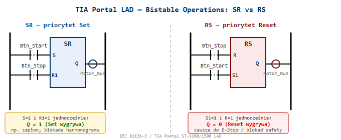
Równoważny kod SCL — implementacja ręczna:
// SR — priorytet Set (kolejność: najpierw Reset, potem Set nadpisuje)
"MotorRunSR" := "MotorRunSR" OR "StartBtn";
IF "StopBtn" THEN "MotorRunSR" := FALSE; END_IF;
IF "StartBtn" THEN "MotorRunSR" := TRUE; END_IF; // Set na końcu = priorytet
// RS — priorytet Reset (kolejność: najpierw Set, potem Reset nadpisuje)
"MotorRunRS" := "MotorRunRS" OR "StartBtn";
IF "StartBtn" THEN "MotorRunRS" := TRUE; END_IF;
IF "StopBtn" THEN "MotorRunRS" := FALSE; END_IF; // Reset na końcu = priorytetPraktyczna zasada doboru:
| Sytuacja | Wybór |
|---|---|
| Stop ma wyższy priorytet (99% maszyn przemysłowych) | RS |
| Start/Set ważniejszy (np. latch alarmu do potwierdzenia) | SR |
| Fizyczny E-Stop / Guard | Zawsze RS — Reset (bezpieczeństwo) dominuje |
⚠️ W TIA Portal LAD bloki SR/RS są dostępne w Basic Instructions → Bistable operations. Parametr
Qto bit zapamiętany — musi być adres Memory (M) lub DB bit, nigdy wejścieI.
Źródło: TIA Portal Help — LAD Bistable Operations; IEC 61131-3 §3.2.3
Dominacja określa, który sygnał wygrywa gdy jednocześnie wciśniemy START i STOP. Jest to praktyczny odpowiednik priorytetu przerzutnika SR/RS, widoczny bezpośrednio w schemacie drabinkowym.
Dominacja SET (lewy obwód) — priorytet ma START: -
START steruje Lampką bezpośrednio (równolegle z
samopodtrzymaniem przez Lampkę) - STOP jest szeregowy z
samopodtrzymaniem, ale gdy START=1 — omija STOP - Gdy
START=1 i STOP=1 jednocześnie → Lampka
= 1 (SET wygrywa) - „START bezpośrednio steruje Lampką, dlatego
STOP nie ma tutaj nic do gadania”
Dominacja RESET (prawy obwód) — priorytet ma STOP: -
START zasila Lampkę przez STOP (szeregowo w tej samej
gałęzi) - Gdy START=1 i STOP=1 jednocześnie →
Lampka = 0 (RESET wygrywa — STOP odcina zasilanie) -
„START zasila Lampkę poprzez STOP, dlatego przycisk wyłączenia jest
ważniejszy”
Tabele prawdy — zachowanie Lampki:

| Stan | START | STOP | Lampka (Dominacja SET) | Lampka (Dominacja RESET) |
|---|---|---|---|---|
| Oba wciśnięte | 1 | 1 | 1 ← SET wygrywa | 0 ← RESET wygrywa |
| Tylko START | 1 | 0 | 1 | 1 |
| Tylko STOP | 0 | 1 | 0 | 0 |
| Żaden | 0 | 0 | * (stan poprzedni) | * (stan poprzedni) |
Gwiazdka „*” oznacza stan zapamiętany — bez akcji na wejściach układ nie zmienia stanu (samopodtrzymanie działa).
Związek z przerzutnikami bistabilnymi w TIA Portal:
| Schemat LAD (ręczny) | Odpowiednik bloku TIA Portal |
|---|---|
| Dominacja SET | Blok SR — Set-Dominant (S wygrywa) |
| Dominacja RESET | Blok RS — Reset-Dominant (R wygrywa) |
Zasada projektowania bezpiecznych maszyn: Zawsze stosuj Dominację RESET dla obwodów STOP i E-Stop. Operator musi mieć gwarancję, że wciśnięcie przycisku wyłączenia zatrzyma maszynę niezależnie od innych sygnałów (EN 60204-1 §9.2.2).
Źródło: Kurs ControlByte — Układy samopodtrzymania, Dominacja SET/RESET; EN 60204-1 §9.2.2
Pułapka samopodtrzymania polega na błędnym umieszczeniu styku samopodtrzymania (Lampka) tak, że omija on przycisk STOP — wciśnięcie STOP nie wyłącza cewki, bo prąd płynie alternatywną ścieżką.
Obwód LEWOSTRONNY — poprawny (Dominacja RESET):
BARIERA_MAGISTRALI
+--[ START ]--+----[ /STOP ]----( Lampka )
|
+--[ Lampka ]-+Lampka (samopodtrzymanie) jest w gałęzi
równoległej do START — przed STOPObwód PRAWOSTRONNY — niepoprawny (STOP omijany):
+--[ START ]--[ /STOP ]---( Lampka )
| |
+--------[ Lampka ]------------+Lampka (samopodtrzymanie) jest w gałęzi
równoległej do całego szeregu START–STOPLampka → cewka nadal
zasilona ❌Tabela porównawcza:
| Stan | STOP wciśnięty | Obwód LEWY (poprawny) | Obwód PRAWY (błędny) |
|---|---|---|---|
| Lampka=1 | TAK | Lampka → 0 ✅ | Lampka → 1 ❌ |
| Lampka=0 | TAK | Lampka → 0 ✅ | Lampka → 0 ✅ |
| START=1 | NIE | Lampka → 1 | Lampka → 1 |
⚠️ Błąd projektowy klasy STOP-ignorowanego! Prawy obwód sprawia wrażenie poprawnego podczas statycznej analizy schematu. Błąd ujawnia się dopiero w działaniu — gdy Lampka raz się załączy, przycisku STOP nie można jej wyłączyć. W systemach safety jest to krytyczny błąd bezpieczeństwa.
💡 Reguła zapamiętywania: Styk samopodtrzymania zawsze przed STOP (w gałęzi równoległej tylko do START). STOP musi być „po” całej logice podtrzymania, żeby faktycznie odcinał zasilanie cewki.
Zastosowanie w praktyce: - Typowy obwód układu
napędowego: (START || KM_zal) AND STOP_NC → KM_cewka - W
TIA Portal LAD: samopodtrzymanie = styk wyjściowego bitu Q równoległy do
przycisku START, STOP zawsze w gałęzi głównej przed cewką - Analogiczny
błąd w SCL:
IF Start OR Q THEN Q := TRUE; IF Stop THEN Q := FALSE; END_IF;
— STOP nie zadziała jeśli Start=TRUE jednocześnie
(priorytet SET)
Źródło: Kurs ControlByte — Slajd 9/24 „Znajdź różnice”, Układy samopodtrzymania; EN 60204-1 §9.2.2
SIMATIC Safety Integrated to koncepcja Siemensa gdzie funkcje bezpieczeństwa (failsafe) i funkcje standardowe działają w jednym fizycznym CPU (F-CPU), jednym projekcie TIA Portal i przez jedną sieć PROFINET/PROFIsafe.
Korzyści: - Jeden sterownik zamiast dwóch (standard + safety) - Ten sam inżyniering w TIA Portal - Ta sama diagnostyka, mniej okablowania, mniejsza szafa sterownicza
SIMATIC Safety Integrated — jeden PLC, jeden inżyniering, jedna komunikacja:
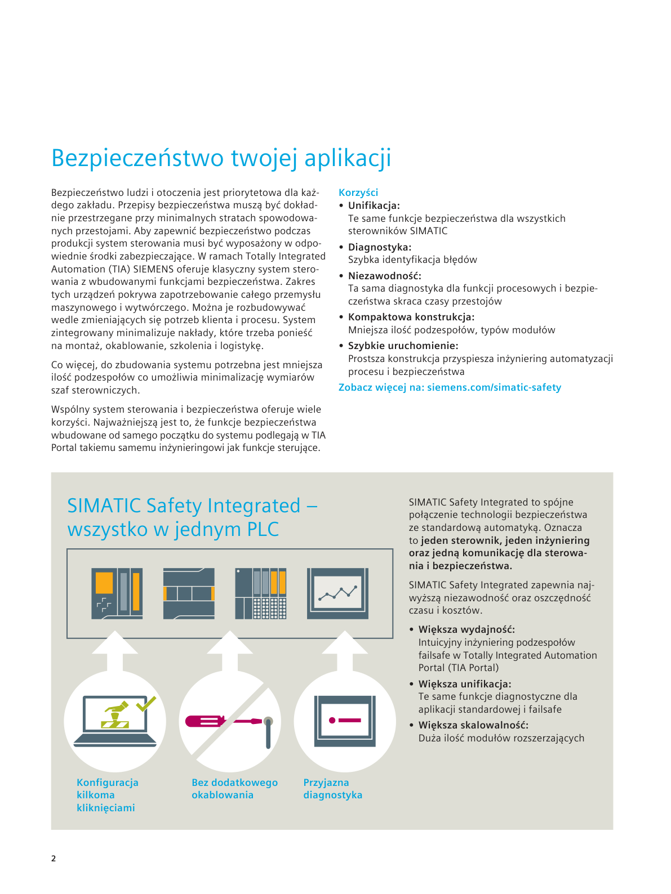
[PRAWDOPODOBNE] — na podstawie wiedzy domenowej Siemens ### 2.2. Co to jest F-CPU i jak działa dual-channel processing? 🔴
Dual-channel processing to architektura, w której ten sam fragment kodu Safety jest wykonywany przez dwa niezależne kanały obliczeniowe wewnątrz jednego CPU. W S7-1500F realizowane programowo (diversified redundant processing w jednym fizycznym procesorze — ten sam program Safety wykonywany dwukrotnie z dywersyfikowanym przetwarzaniem, wyniki porównywane). W starszych generacjach (S7-300F/400F) — sprzętowo (dwa oddzielne procesory). Oba kanały przetwarzają identyczne dane wejściowe i produkują wyniki. Na końcu każdego cyklu Safety specjalny komparator porównuje wyniki obu kanałów: - Wyniki zgodne → cykl OK, wyjścia Safety ustawiane normalnie. - Wyniki różne (nawet 1 bit) → CPU wykrywa błąd wewnętrzny → natychmiastowe przejście w bezpieczny stan (pasywacja wyjść Safety, stop napędów).
Co to oznacza w praktyce dla komisjonera/integratora: - Nie musisz pisać logiki redundantnej — piszesz jeden program Safety, hardware sam wykonuje go dwukrotnie i sprawdza. - Błąd sprzętowy wewnątrz CPU (uszkodzony rejestr, przekłamanie RAM) jest wykrywalny — to jest właśnie cel tej architektury, nie programowej redundancji. - Czas cyklu Safety (F_MAIN) jest dłuższy niż OB1, bo CPU wykonuje go dwa razy + porównanie. Typowo 2× czas cyklu standardowego.
Ciągły self-test: F-CPU w tle testuje pamięć RAM (CRC bloków), ALU, rejestry procesora. Program Safety działa w oddzielnym chronionym obszarze pamięci — standardowy program OB1 nie może go nadpisać ani odczytać bezpośrednio.
⚠️ DO WERYFIKACJI: Twierdzenie „F_MAIN wykonywany typowo 2× dłużej niż OB1” jest uproszczeniem. Rzeczywisty czas cyklu Safety zależy od rozmiaru programu F, konfiguracji sprzętu i komunikacji PROFIsafe — nie jest to prosta wielokrotność czasu OB1. Sprawdź w TIA Portal → CPU properties → Cycle time.
Certyfikacja (informacyjnie): F-CPU jest certyfikowany dla SIL 3 / PL e — ta informacja pochodzi z karty katalogowej napędu lub CPU; nie musisz jej znać na pamięć, ale warto wiedzieć że to TÜV zatwierdza architekturę, nie sam Siemens.
[PRAWDOPODOBNE] — na podstawie wiedzy domenowej Siemens ### 2.3. Jakie sterowniki Siemens obsługują funkcje Safety?
S7-1500F: CPU 1511F, 1513F, 1515F, 1516F, 1517F, 1518F — Advanced controllers z wbudowanym Safety. S7-1200F: CPU 1212FC, 1214FC, 1215FC — Basic controllers z Safety, mniejsze aplikacje. ET 200SP CPU F: CPU 1510SP F, 1512SP F — zdalny sterownik z Safety, montaż przy maszynie. ET 200pro CPU F: CPU 1516pro F — IP67, bezpośrednio na maszynie. Wszystkie programowane w TIA Portal z STEP 7 Safety Advanced lub Safety Basic.
[PRAWDOPODOBNE] — na podstawie wiedzy domenowej Siemens ### 2.4. Co to jest F-DB i dlaczego nie można go edytować ręcznie?
F-DB (Fail-safe Data Block) generowany jest automatycznie przez TIA Portal dla każdego bloku Safety. Zawiera: CRC (checksum logiki), F-signature (podpis programu Safety), parametry czasowe. Ręczna edycja zniszczyłaby spójność podpisu → F-CPU odmówiłoby uruchomienia Safety. To celowe zabezpieczenie przed nieautoryzowaną modyfikacją.
[PRAWDOPODOBNE] — na podstawie wiedzy domenowej Siemens ### 2.5. Co to jest F-signature i collective signature? 🟡
F-signature to unikalny podpis (suma kontrolna CRC) jednego bloku Safety — zmienia się przy każdej modyfikacji kodu. Collective signature (podpis zbiorczy) to podpis CAŁEGO programu Safety złożony ze wszystkich bloków. Widoczny na wyświetlaczu CPU lub w TIA Portal jako ciąg znaków (np. ‘5CBE6409’). Przy wgraniu CPU porównuje collective signature — niezgodność → Safety nie uruchamia się.
[PRAWDOPODOBNE] — na podstawie wiedzy domenowej Siemens ### 2.6. Jakie są tryby pracy Safety CPU i jak się przełącza?
Safety mode activated — normalny tryb produktywny, program Safety działa, wyjścia sterowane przez logikę F. Safety mode deactivated — tryb commissioning/testowy, wejścia/wyjścia F modułów mogą być nadpisywane ręcznie bez ochrony Safety (używany np. podczas uruchamiania do testów okablowania). Przełączenie przez TIA Portal (Safety Administration) lub dedykowany sygnał w logice. Po przełączeniu wymagane potwierdzenie (hasło Safety lub ACK). Zmiana trybu jest logowana z datą i użytkownikiem. Uwaga: dezaktywacja trybu Safety jest widoczna w diagnostyce i na wyświetlaczu CPU — nie można jej ukryć.
[PRAWDOPODOBNE] — na podstawie wiedzy domenowej Siemens ### 2.7. Co to jest STEP 7 Safety Advanced vs Safety Basic?
Safety Basic: licencja wyłącznie dla S7-1200F. Prostsza funkcjonalność, niższy koszt, ograniczone biblioteki Safety. Safety Advanced: pełna licencja dla S7-1500F i ET 200SP CPU F, wszystkie funkcje Safety, certyfikowane biblioteki funkcji (muting, two-hand, ESTOP), możliwość symulacji w PLCSIM. Obydwie są wtyczką do TIA Portal — nie są osobnym oprogramowaniem.
[PRAWDOPODOBNE] — na podstawie wiedzy domenowej Siemens ### 2.8. Jakie są podstawowe komponenty i zasady programowania sterowników bezpieczeństwa Pilz PNOZmulti?
Pilz PNOZmulti to programowalny sterownik bezpieczeństwa, który umożliwia łatwe i intuicyjne tworzenie logiki bezpieczeństwa dla maszyn, wykorzystując dedykowane bloki funkcyjne i graficzne środowisko programowania. - Programowanie: - Odbywa się za pomocą oprogramowania PNOZmulti Configurator. - Program jest podzielony na strony, co ułatwia organizację. - Wykorzystuje dedykowane bloki funkcyjne do obsługi elementów bezpieczeństwa (np. ML DH M gate, ML 2 D H M dla rygli, wejścia dwukanałowe). - Logika ryglowania i odryglowania jest zaimplementowana w specjalnych blokach. - Konfiguracja sprzętowa: - W zakładce “Open Hardware Configuration” można zobaczyć jednostkę główną, dodatkowe moduły wejść/wyjść oraz urządzenia sieciowe (np. panel PMI, czytniki RFID podłączone przez switch). - Mapowanie zmiennych i wejść/wyjść odbywa się w zakładce “I O List”. - Połączenie i diagnostyka: - Połączenie ze sterownikiem odbywa się kablem Ethernet. - Adres IP i maska podsieci są dostępne w menu Ethernet -> info. - Opcja “Scan Network” pozwala wykryć sterownik w sieci. - W “Project Manager” należy wprowadzić Order number i Serial number sterownika, aby uzyskać dostęp. - Dostępne są trzy poziomy dostępu: pełna edycja, podgląd, zmiana parametrów. - Tryb “online Dynamic Program Display” podświetla aktywne sygnały na zielono, co ułatwia diagnostykę. Praktyczne wskazówki: - Programowanie PNOZmulti jest bardzo przyjazne użytkownikowi dzięki dedykowanym blokom. - Diagnostyka w trybie online jest prosta, ponieważ aktywne sygnały są wizualnie wyróżnione.
Kontekst na rozmowie: PNOZmulti to dedykowany sterownik bezpieczeństwa (nie F-CPU) — często spotykany przy modernizacjach maszyn i w małych izolowanych aplikacjach Safety (prasy, ogrodzenia). Integracja z Siemens PLC: PNOZmulti jako IO-Device PROFINET (Safe PNOZmulti) lub przez wyjścia przekaźnikowe Safety do F-DI Siemens. Różnica od SIMATIC Safety: PNOZmulti jest tańszy i prostszy dla <20 sygnałów Safety, ale nie łączy logiki Safety z programem PLC w jednym środowisku jak TIA Portal. Źródło: transkrypcje ControlByte
S7-1500H (Highly Available / Hot Standby) to konfiguracja redundantna dwóch identycznych CPU S7-1500 pracujących równolegle — jeden aktywny (Primary), drugi gotowy do natychmiastowego przejęcia sterowania (Backup).
Zasada działania: - Oba CPU przetwarzają ten sam
program synchronicznie w każdym cyklu - Dane procesowe synchronizowane
są przez dedykowaną sieć Sync link (Fiber lub Ethernet)
— oddzielna od PROFINET - Przy awarii Primary → Backup przejmuje
sterowanie w czasie < 1 cykl PLC (bez STOP maszyny) -
Bumpless switchover — maszyna nie zauważa
przełączenia
Konfiguracja sprzętowa: - 2× CPU 1517H lub 1518HF (wersja z Safety) - 2× IM 155-6 PN HF dla każdej stacji ET200SP (Shared-Device — oba CPU komunikują się z tą samą stacją) - 2 fizyczne połączenia Sync link (redundancja linku synchronizacyjnego)
Kiedy stosujesz S7-1500H: - Procesy ciągłe gdzie
zatrzymanie CPU = duże straty (hutnictwo, chemia, petrochemia) - Maszyny
24/7 gdzie planowanie okna serwisowego jest niemożliwe - Wymagania SLA:
MTTR < 3s (Mean Time To Recovery)
Różnica H vs F (Safety):
| Cecha | S7-1515F | S7-1517H | S7-1518HF |
|---|---|---|---|
| Safety (F-CPU) | ✅ | ❌ | ✅ |
| Hot Standby | ❌ | ✅ | ✅ |
| Redundancja CPU | ❌ | ✅ | ✅ |
⚠️ S7-1500H ≠ Safety redundancja — Hot Standby gwarantuje dostępność (availability), nie poziom Safety (SIL). Do SIL wymagany F-CPU niezależnie od H.
💡 Programowanie w TIA Portal: H-system wygląda jak jeden CPU — piszesz kod jeden raz, TIA Portal automatycznie synchronizuje między Primary i Backup. Zmiana konfiguracji H wymaga krótkiego trybu serwisowego.
Źródło: Siemens SIMATIC S7-1500H System Manual (6ES7518-4FX00-1AC2)
F-DI (Fail-safe Digital Input) to moduł wejść bezpieczeństwa. Różnice od standardowego: - VS* (pulse testing) — impulsowe zasilanie do diagnostyki okablowania - Obsługa dwukanałowych czujników Safety (1oo2) z discrepancy time - Cross-circuit detection — wykrywanie zwarć między kanałami - Komunikacja przez PROFIsafe z CRC do F-CPU - Self-test kanałów w tle Moduły ET 200SP F-DI, ET 200MP F-DI, S7-1200 SM 1226 F-DI.
[PRAWDOPODOBNE] — na podstawie wiedzy domenowej Siemens ### 3.2. Co to jest VS* (pulse testing) i jak wykrywa usterki? 🔴
VS* to wyjście zasilające na module F-DI które wysyła krótkie impulsy testowe zamiast stałego napięcia. Czujnik zasilany jest tymi impulsami, a sygnał wraca na wejście razem z impulsami. Moduł analizuje czy impulsy wróciły: - Brak impulsów → zerwanie przewodu lub zwarcie do masy - Impulsy cały czas bez przerwy → zwarcie do 24V To mechanizm cross-circuit detection zapewniający Diagnostics Coverage (DC) bez dodatkowego okablowania. VS* z cross-circuit detection zapewnia DC ≥ 99% (Diagnostic Coverage) — warunek konieczny do osiągnięcia kategorii Cat.4 i Performance Level e (PL e wg ISO 13849-1) lub SIL 3 (wg IEC 62061 / IEC 61508). [ZWERYFIKOWANE — Siemens 39198632, normy ISO 13849-1 i IEC 62061]
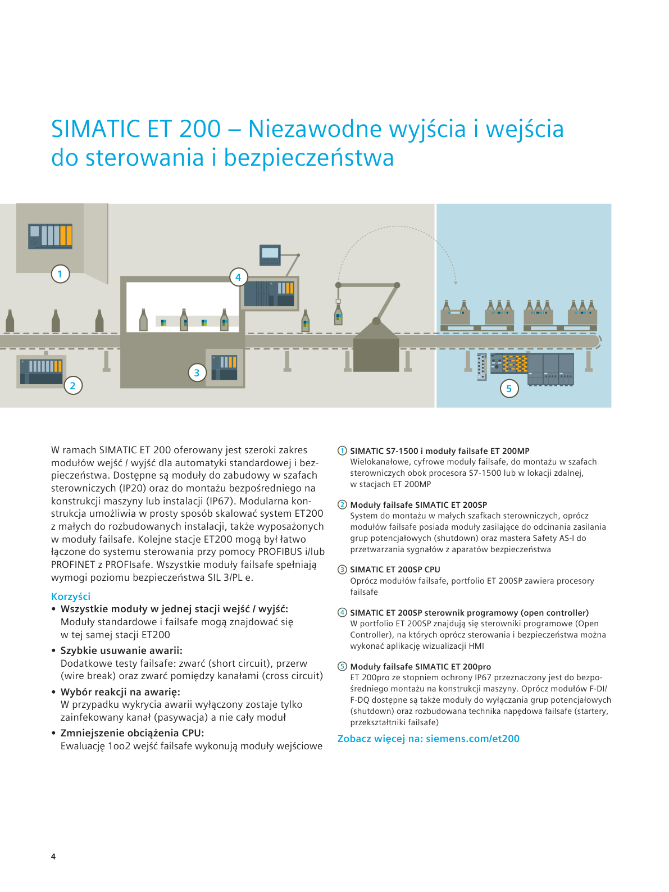
[PRAWDOPODOBNE] — na podstawie wiedzy domenowej Siemens ### 3.3. Dlaczego czujniki Safety podłącza się jako NC (normalnie zamknięty)? 🔴
Zasada bezpieczna (fail-safe): zerwanie kabla, przepalenie bezpiecznika, uszkodzenie czujnika → obwód otwarty → sygnał 0 → system Safety traktuje to jako zadziałanie i zatrzymuje maszynę. Przy NO (normalnie otwartym): zerwanie kabla = brak sygnału = maszyna nie wie o zagrożeniu → niebezpieczeństwo. NC to zasada ‘fail-safe by design’ wymagana przez normy bezpieczeństwa.
[PRAWDOPODOBNE] — na podstawie wiedzy domenowej Siemens ### 3.4. Co to jest discrepancy time i jak go konfigurujesz? 🟡
Discrepancy time to maksymalny czas w którym dwa kanały czujnika 1oo2 mogą pokazywać różne wartości bez generowania błędu. Przykład: przy otwieraniu osłony mechanicznej jeden styk reaguje 15ms wcześniej niż drugi — to normalne i fizyczne. Konfigurujesz w TIA Portal: właściwości modułu F-DI → parametry kanału → Discrepancy time (typowo 10–200ms w zależności od czujnika). Zbyt krótki → fałszywe błędy. Zbyt długi → późne wykrycie uszkodzenia.
[PRAWDOPODOBNE] — na podstawie wiedzy domenowej Siemens ### 3.5. Co to jest substitute value na F-DO i kto decyduje o jego wartości?
Substitute value to wartość którą przyjmuje wyjście F-DO po przejściu modułu w passivation (stan błędu). Konfigurujesz w TIA Portal we właściwościach kanału F-DO: wartość 0 lub 1. Decyduje inżynier projektu na podstawie analizy bezpieczeństwa — nie Siemens. Przykłady: napęd → 0 (stop), zawór bezpieczeństwa → może być 1 (pozostaje otwarty), pompa chłodząca → może być 1 (chłodzi nadal).
[PRAWDOPODOBNE] — na podstawie wiedzy domenowej Siemens ### 3.6. Co to jest pm switching i pp switching — różnica? 🟡
pm switching (plus-minus): moduł F-PM-E przełącza obie linie obciążenia — P (+24V) i M (0V). Aktuator podłączony jest między wyjściem P a wyjściem M modułu. Wymaga wydzielonego zasilania obciążenia (Load supply) odizolowanego od zasilania elektroniki. [ZWERYFIKOWANE — Siemens 39198632 Fig. 2-1] pp switching (plus-plus): moduł F-PM-E przełącza dwa kanały po stronie P (+24V). Linia M (0V) jest wspólnym powrotem obciążenia (common M) — nie jest przełączana przez moduł. [ZWERYFIKOWANE — Siemens 39198632 Fig. 2-2] F-PM-E (Power Module) w ET 200SP/S może realizować oba tryby.
pm-switching — schemat ET 200SP:
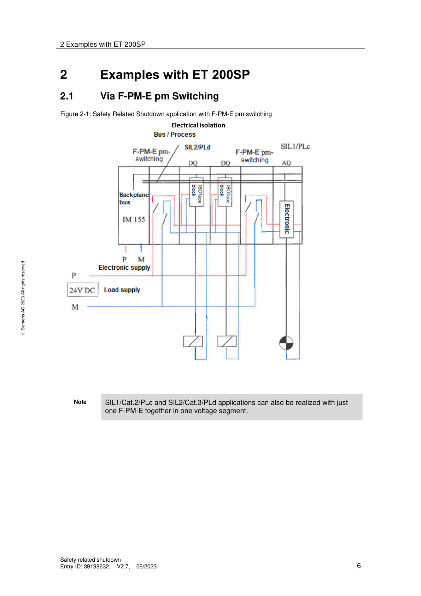
pp-switching — schemat ET 200SP:
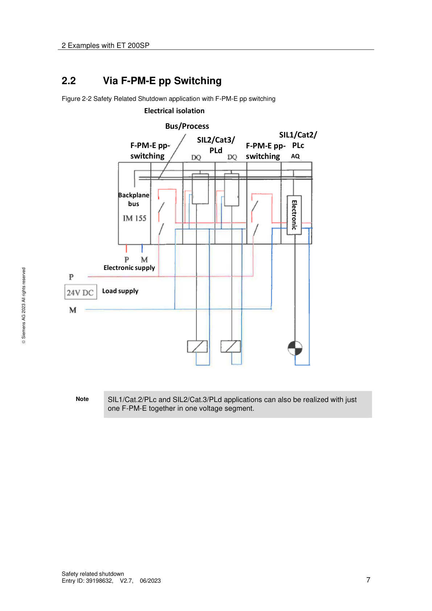
[PRAWDOPODOBNE] — na podstawie wiedzy domenowej Siemens ### 3.7. Co to jest F-PM-E i do czego służy?
F-PM-E (Fail-safe Power Module E) to moduł zasilający Safety w systemie ET 200SP/S. Umożliwia bezpieczne odcięcie zasilania grupy standardowych modułów DO przez sygnał Safety — bez ich fizycznej wymiany na moduły F. Działanie: F-CPU nakazuje F-PM-E odciąć 24V dla grupy standardowych DQ → wszystkie wyjścia grupy idą na 0 (PM switching do SIL2/Cat.3/PLd). Tańsze rozwiązanie niż wymiana wszystkich DQ na F-DQ.
[PRAWDOPODOBNE] — na podstawie wiedzy domenowej Siemens ### 3.8. Jak bezpiecznie wyłączyć standardowe moduły wyjść przez Safety?
Trzy główne metody (wg dokumentu Siemens 39198632): - Safety Relay (np. 3SK1) — zewnętrzny przekaźnik bezpieczeństwa odcina zasilanie grupy DQ. Niezależne od PLC. - F-PM-E (pm lub pp switching) — moduł F-PM-E w tej samej stacji ET200 odcina zasilanie grupy standardowych DQ (SIL2/Cat.3/PLd). - F-DO + zewnętrzny przekaźnik — F-DO steruje cewką przekaźnika który odcina zasilanie modułów standardowych. Feedback z przekaźnika do DI. Ważne: standardowe moduły DI nie mogą być używane do odczytu sygnałów Safety — wymagane F-DI.
Schematy okablowania — Safety Relay i ET200MP/S7-1500:
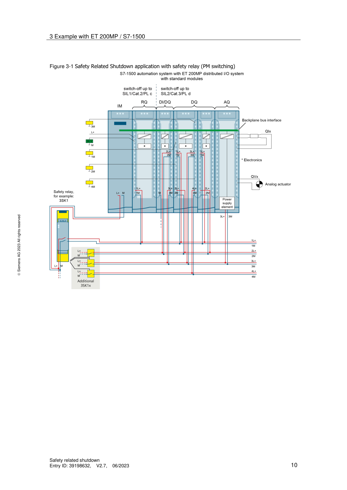
[PRAWDOPODOBNE] — na podstawie wiedzy domenowej Siemens ### 3.9. Jak F-CPU reaguje na typowe awarie wejść dwukanałowych (1oo2)?
Moduł F-DI, skonfigurowany do oceny dwukanałowej (1oo2), monitoruje sygnały z dwóch niezależnych kanałów i reaguje na różne typy awarii, aby zapewnić bezpieczny stan maszyny. - Zwarcie do potencjału 0 V (M): - Reakcja: Kanał zostaje spaszywowany, styczniki rozłączone. - Błąd diagnostyczny: “Overload or internal sensor supply short circuit to ground”. - Reset: Po usunięciu zwarcia, wymagany jest reset układu. - Zwarcie międzykanałowe: - Reakcja: Cały moduł zapala się na czerwono, zgłaszając błąd. - Błąd diagnostyczny: “Internal sensor supply short circuit to P” lub “Short-circuit of two encoder supplies”. - Reset: Po usunięciu zwarcia, wymagany jest reset układu. - Rozbieżność sygnału (Discrepancy failure): - Reakcja: Pojawia się błąd “Discrepancy failure”, wskazany jest kanał, na którym wystąpiła awaria. - Przyczyna: Utrata ciągłości obwodu w jednym z kanałów (np. uszkodzenie styku w E-STOP, kurtynie bezpieczeństwa, skanerze). - Funkcja diagnostyczna: Sprawdzenie równoczesności zadziałania sygnałów jest podstawową funkcją diagnostyczną dla urządzeń elektromechanicznych. - Reset: Po podłączeniu obwodu, diody migają naprzemiennie (czerwona i zielona), sygnalizując możliwość resetu/reintegracji. Praktyczne wskazówki: - W przypadku błędu rozbieżności, jeśli parametr “Reintegration after discrepancy error” jest ustawiony na “Test zero signal necessary”, operator musi najpierw wymusić stan zerowy na czujniku (np. wcisnąć E-STOP), a dopiero potem może zresetować układ. Jest to ważne dla starszych urządzeń, które mogą generować fałszywe błędy rozbieżności. Źródło: transkrypcje ControlByte
Prawidłowa konfiguracja parametrów wejść dwukanałowych jest niezbędna do zapewnienia niezawodnego działania systemu bezpieczeństwa i uniknięcia niepotrzebnych błędów. - Ocena (Evaluation): - Dla wejść dwukanałowych często stosuje się ocenę “one out of two” (1oo2). - Discrepancy time (czas rozbieżności): - Definicja: Maksymalny dopuszczalny czas między zmianą stanu sygnałów na dwóch kanałach wejściowych. - Znaczenie: Należy go dobrać precyzyjnie. Zbyt mały czas może generować niepotrzebne błędy i pasywację kanałów (np. przy E-STOP, wyłącznikach krańcowych). Zbyt długi czas zwiększa zwłokę w wykryciu sytuacji awaryjnej. - Dobór: Najlepiej określić go na podstawie testów. - Reintegracja po błędzie rozbieżności (Reintegration after discrepancy error): - Opcja “Test zero signal necessary”: W przypadku błędu rozbieżności, aby zresetować kanały, należy najpierw doprowadzić do stanu zerowego sygnał z czujnika (np. wcisnąć E-STOP, a następnie go odciągnąć). - Znaczenie praktyczne: Ten parametr wpływa na sposób obsługi stanowiska przez operatora. Urządzenia z kilkuletnim stażem mogą generować błędy rozbieżności, a ta opcja wymusza fizyczne potwierdzenie stanu bezpiecznego. Praktyczne wskazówki: - W przypadku błędu rozbieżności, jeśli “Test zero signal necessary” jest aktywne, diody zgłaszają błąd i brak możliwości reintegracji, dopóki nie zostanie wymuszony stan niski na obu kanałach, a dopiero potem można nacisnąć przycisk reset. Źródło: transkrypcje ControlByte
XooY = X z Y: ile (X) z dostępnych (Y) kanałów musi zadziałać aby system zareagował.
| Architektura | Definicja | Dostępność | Bezpieczeństwo | Typowe zastosowanie |
|---|---|---|---|---|
| 1oo1 | 1 czujnik — wystarczy | Wysoka | Podstawowe | SIL1, proste maszyny |
| 1oo2 | 2 czujniki — wystarczy JEDEN | Niska (fałszywe stopy) | Wysokie | E-stopy, osłony — SIL2/3 |
| 2oo2 | 2 czujniki — wymagane OBA | Wysoka | Niższe (cichy błąd!) | Procesy ciągłe, kosztowne stopy |
| 2oo3 | 3 czujniki — wymagane 2 z 3 | Balans | Balans | Przemysł procesowy, ciśnienie/temp. |
⚠️ 2oo2 pułapka: uszkodzenie jednego czujnika (sygnalizuje ciągle OK) → system może nie zadziałać gdy potrzeba. Wymagany monitoring DC!
[PRAWDOPODOBNE] — na podstawie wiedzy domenowej Siemens ### 4.2. Kiedy wybierasz 1oo2 a kiedy 2oo2? 🟡
1oo2 gdy priorytet to bezpieczeństwo (zatrzymanie przy pierwszym sygnale): - Osłony maszyn, e-stopy przy prasach - Wyższy SIL, akceptowalne fałszywe zatrzymania
2oo2 gdy priorytet to dostępność (unikanie fałszywych stopów): - Procesy chemiczne gdzie zatrzymanie jest bardzo kosztowne - Jedno “głuche” zadziałanie nie jest katastrofą
⚠️ Przy 2oo2: uszkodzenie jednego kanału (zepsuty, ale nie zgłaszający błędu) może spowodować że system nie zadziała gdy będzie potrzeba.
[PRAWDOPODOBNE] — na podstawie wiedzy domenowej Siemens ### 4.3. Jak 1oo2 jest realizowane w module F-DI Siemens?
Dwa sygnały z dwóch czujników podłączone na dwa kanały tego samego
modułu F-DI (lub dwóch osobnych modułów). Moduł F-DI porównuje oba
sygnały: - Oba zgodne → OK - Różnica przekracza
discrepancy time → błąd → passivation lub alarm
💡 Ewaluację 1oo2 wykonuje sam moduł F-DI sprzętowo — odciążając F-CPU. Wynik trafia do programu Safety jako jeden bezpieczny sygnał BOOL.
[PRAWDOPODOBNE] — na podstawie wiedzy domenowej Siemens ### 4.4. Jak F-CPU reaguje na błąd rozbieżności sygnału (Discrepancy Failure) w konfiguracji 1oo2? Moduł F-DI wykrywa błąd rozbieżności sygnału, gdy jeden z dwóch kanałów skonfigurowanych w ocenie 1oo2 straci ciągłość obwodu lub sygnały nie zadziałają równocześnie w określonym czasie. Jest to podstawowa funkcja diagnostyczna dla urządzeń elektromechanicznych i czujników z wyjściami tranzystorowymi. - Błąd “Discrepancy failure” jest zgłaszany w buforze diagnostycznym PLC, wskazując kanał awarii. - Po usunięciu przyczyny błędu (np. ponownym podłączeniu obwodu), diody modułu naprzemian migają na czerwono i zielono, sygnalizując możliwość resetu reintegracji. - Discrepancy time (np. 50 ms) musi być precyzyjnie dobrany, aby uniknąć fałszywych błędów lub zbyt długiej zwłoki w wykryciu awarii. Źródło: transkrypcje ControlByte
Moduł F-DI w układzie dwukanałowym 1oo2 jest w stanie wykryć różne scenariusze awaryjne, które mogą prowadzić do niebezpiecznych sytuacji, zapewniając wysoką diagnostykę. - Zwarcie do potencjału 0 V (zwarcie do masy): Moduł zgłasza błąd “Overload or internal sensor supply short circuit to ground”, pasywuje kanał i rozłącza styczniki. - Zwarcie międzykanałowe (do P): Moduł zgłasza błąd “Internal sensor supply short circuit to P” lub “Short-circuit of two encoder supplies”, cały moduł zapala się na czerwono. - Rozbieżność sygnału (Discrepancy failure): Wykrywana, gdy jeden z kanałów straci ciągłość obwodu lub sygnały nie zadziałają równocześnie, co jest kluczowe dla urządzeń z mechanicznymi stykami (E-STOP, wyłączniki krańcowe) lub wyjściami tranzystorowymi. Źródło: transkrypcje ControlByte
Parametr “Reintegration after discrepancy error” w konfiguracji modułu safety określa, czy po wystąpieniu błędu rozbieżności sygnału wymagane jest doprowadzenie sygnału do stanu zerowego przed wykonaniem resetu. - Jeśli wybrano opcję “Test zero signal necessary”, operator musi wymusić stan zerowy na czujniku (np. wcisnąć i odciągnąć E-STOP) zanim możliwy będzie reset reintegracji. - Ten parametr jest istotny dla sposobu obsługi stanowiska przez operatora, szczególnie w przypadku starszych urządzeń, które mogą generować sporadyczne błędy rozbieżności. - Reset reintegracji kanałów safety w sterowniku PLC jest odrębny od resetu funkcji bezpieczeństwa, który wymaga innej logiki programowania. Źródło: transkrypcje ControlByte
Discrepancy time (czas rozbieżności) to maksymalny czas, przez jaki oba kanały 1oo2 mogą mieć różne wartości logiczne bez wywołania błędu. Parametr konfigurowany w TIA Portal dla każdego F-DI z oceną 1oo2. - Domyślnie: 100 ms — oba sygnały muszą zmienić stan w tym oknie - Przekroczenie → F-DI przechodzi w stan pasywny (passivation), wyjście F-DO = substitute value - Typowa przyczyna: mechaniczne opóźnienie styku bezpieczeństwa lub błąd okablowania - Konfiguracja: właściwości modułu F-DI → zakładka „Input” → „Discrepancy time [ms]” - W diagnostyce: alarm rozbieżności widoczny w buforze diagnostycznym CPU (F_LADDR.DIAG) ⚠️ DO WERYFIKACJI: konkretny numer kodu alarmu — sprawdź w SIMATIC Safety System Manual lub buforze diagnostycznym TIA Portal online
[PRAWDOPODOBNE] — na podstawie wiedzy domenowej Siemens ### 4.8. Jak moduł F-DI ET200SP wykrywa zwarcie między kanałami (cross-circuit detection) w obwodzie 1oo2? 🟡 Detekcja cross-circuit (zwarcia między kanałami) to mechanizm pozwalający wykryć zwarcie przewodu kanału 1 do kanału 2 dzięki testowym impulsom wyjść testowych (T-signal). - T1 i T2 generują impulsy testowe z różną fazą (wzajemnie rozłączne) - Wejścia odczytują sygnał z powrotem przez czujnik - Zwarcie między kanałami = impuls T1 pojawia się na wejściu kanału 2 → błąd cross-circuit - Wymaga okablowania z wyjść testowych (T1, T2) przez czujnik do wejść (DI0.0, DI0.1) - Nie działa przy PM-switching bez wyjść testowych (wtedy detekcja cross-circuit jest ograniczona)
[PRAWDOPODOBNE] — na podstawie wiedzy domenowej Siemens ## 5. PASSIVATION, REINTEGRATION, ACK
Passivation to
stan błędu modułu F — wszystkie wyjścia przyjmują substitute
value (zwykle 0), a wejścia raportowane są do
F-CPU jako wartość bezpieczna (0).
Przyczyny passivation: - Urwanie kabla lub zwarcie
(wykryte przez pulse testing) - Przekroczenie
discrepancy time (ocena 1oo2) - Utrata komunikacji
PROFIsafe (przekroczenie F-monitoring time) - Błąd
wewnętrzny modułu - Błąd spójności danych Safety
W danych procesowych: PASS_OUT = TRUE w
F-DB modułu → widoczny w Watch Table
Sekwencja sygnałów — passivation i reintegracja F-I/O:
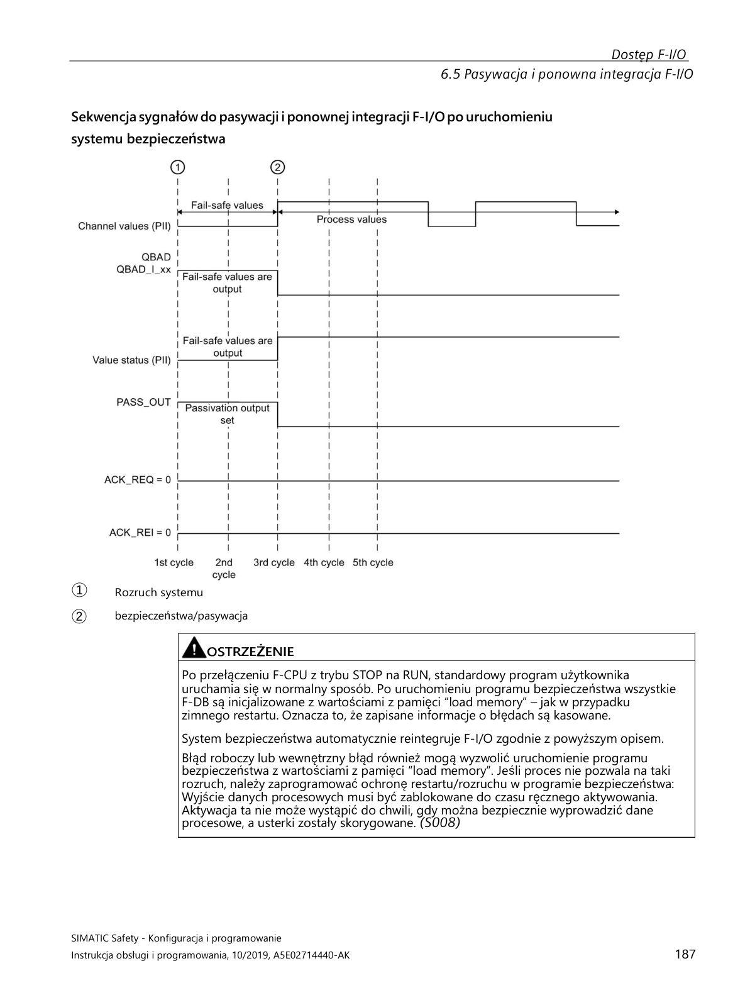
[PRAWDOPODOBNE] — na podstawie wiedzy domenowej Siemens ### 5.2. Dlaczego moduł nie wraca automatycznie po usunięciu błędu?
Celowo — zasada “no silent recovery” w systemach Safety. Operator musi potwierdzić że sytuacja jest bezpieczna zanim maszyna wznowi pracę.
Mechanizm reintegracji: 1. Usuwasz przyczynę błędu
(naprawiasz kabel, naprawiasz czujnik) 2. Moduł ustawia
ACK_REQ = TRUE → widoczny w Watch Table 3. Operator naciska
“Reset Safety” na HMI/kasecie 4. Generowany jest impuls
na ACK_REI (zbocze narastające, 1 cykl PLC) —
zmienna reintegracji F-I/O 5. Moduł reintegruje się →
PASS_OUT = FALSE
[PRAWDOPODOBNE] — na podstawie wiedzy domenowej Siemens ### 5.3. Moduł nie wychodzi z passivation — co sprawdzasz?
Checklista: - [ ] Błąd fizyczny faktycznie usunięty?
(sprawdź kabel / czujnik multimetrem) - [ ] Brak aktywnych
błędów w diagnostyce TIA Portal? - [ ] Sygnał ACK_REI
(reintegracja F-I/O) podany jako impuls
(zbocze), nie poziom stały? - [ ] F-CPU w trybie Safety
mode activated (nie deactivated)? - [ ]
F-monitoring time nie przekroczony (przeciążona sieć
PROFINET)? - [ ] Brak drugiego ukrytego błędu na innym kanale
modułu?
⚠️ S7-1200/S7-1500: tradycyjny bit
QBADzastąpiony przez value status — logika odwrócona:FALSE= aktywne wartości zastępcze |TRUE= dane prawidłowe
[PRAWDOPODOBNE] — na podstawie wiedzy domenowej Siemens ### 5.4. Co to jest ACK_REQ, ACK_NEC i ACK_REI w praktyce? 🔴
| Zmienna | Kierunek | Kontekst | Opis |
|---|---|---|---|
ACK_REQ |
Wyjście bloku F | F-FB / F-I/O | Auto TRUE gdy moduł/blok wymaga resetu — widoczny w
Watch Table |
ACK_NEC |
Wejście bloku F | Safety-FB (ESTOP1, Two-hand, GuardMonitoring) | Impuls (zbocze narastające) potwierdzający usunięcie błędu w logice Safety |
ACK_REI |
Wejście F-I/O DB | Reintegracja modułów F-I/O po passivation | Impuls reintegracji konkretnego modułu F-I/O |
Schemat logiki Reset Safety (LAD):
Reset_HMI: --|P|-- [ACK_NEC] ← impuls z przycisku, tylko 1 cykl PLC⚠️
ACK_NECnie może być sygnałem stałymTRUE— tylko impuls zboczowy!
💡 Zbiorcza reintegracja całej stacji: blok
ACK_GL(STEP 7 Safety Advanced) generuje zbiorczy impuls do wszystkich F-I/O w grupie runtime jednocześnie. Stosuj po wymianie modułu lub awarii sieci PROFINET całej stacji.
[PRAWDOPODOBNE] — na podstawie wiedzy domenowej Siemens ## 6. SAFE STATE — BEZPIECZNY STAN
Safe State to stan systemu po wykryciu zagrożenia lub błędu Safety. Definiuje go inżynier projektu na podstawie analizy ryzyka maszyny — Siemens dostarcza tylko narzędzia.
| Urządzenie | Safe State | Uzasadnienie |
|---|---|---|
| Prasa | Stop silnika | Brak ruchu = bezpieczny |
| Pompa cyrkulacyjna reaktora | Pozostaje WŁĄCZONA | Stop = przegrzanie = niekontrolowana reakcja |
| Wentylator chłodzący | Pozostaje WŁĄCZONY | Stop = pożar urządzenia |
| Zawór odcinający | NO lub NC — zależy od procesu | Analiza ryzyka musi to określić jednoznacznie |
⚠️ Safe State definiuje inżynier, nie Siemens. Siemens mówi: “narzędzia są tu — użyj ich zgodnie z analizą ryzyka”.
[PRAWDOPODOBNE] — na podstawie wiedzy domenowej Siemens ### 6.2. Dlaczego Safe State to nie zawsze wyłączenie?
Bo wyłączenie może być bardziej niebezpieczne niż kontynuacja działania: - Pompa cyrkulacyjna reaktora — stop = przegrzanie = niekontrolowana reakcja chemiczna - Wentylator chłodzący transformator — stop = pożar - Podajnik na linii produkcyjnej — nagły stop = zablokowanie i awaria mechaniczna
⚠️
substitute valueF-DO może być1(wyjście aktywne przy passivation) — to decyzja inżyniera, nie ustawienie domyślne Siemensa.
[PRAWDOPODOBNE] — na podstawie wiedzy domenowej Siemens ### 6.3. Jak F-DO substitute value wpływa na Safe State?
Parametr substitute value w TIA Portal (właściwości
kanału F-DO) określa co wyjście robi przy passivation:
substitute value |
Zachowanie wyjścia | Kiedy używasz |
|---|---|---|
0 (domyślne) |
Wyjście wyłączone | Napęd stop, zawór zamknięty — brak ruchu = bezpieczny |
1 |
Wyjście aktywne | Pompa nadal działa, zawór otwarty — stop = większe ryzyko |
💡 To jest implementacja Safe State na poziomie sprzętowym — zadziała nawet przy awarii sieci komunikacyjnej, bez udziału logiki CPU.
[PRAWDOPODOBNE] — na podstawie wiedzy domenowej Siemens ### 6.4. Czym różni się STO jako Safe State napędu SINAMICS od zatrzymania programowego (OFF1/OFF2)? 🔴 STO (Safe Torque Off) jako Safe State napędu oznacza zablokowanie impulsów bramkowania tranzystorów — napęd nie może generować momentu obrotowego, nawet przy zasilaniu energetycznym. Zatrzymanie OFF1/OFF2 to kontrolowane wyhamowanie przez falownik z możliwością ponownego załączenia bez potwierdzenia. - STO: brak momentu → wolne wybieganie jeśli nie ma hamulca mechanicznego (niebezpieczne na siłowniku pionowym!) - OFF1: hamowanie po rampie (p1121 ⚠️ DO WERYFIKACJI w dokumentacji SINAMICS), potem wyłączenie impulsów — napęd można ponownie uruchomić sygnałem ON - OFF2: natychmiastowe wyłączenie impulsów (jak STO, ale sterowane programem, nie Safety) - Safe State = STO → w konfiguracji F-DO parametr „substitute value” = 0 dla wyjścia STO - Dla osi pionowych (roboty, podnośniki): jako Safe State użyj SS1 (Stop + STO po rampie) lub SBC
[PRAWDOPODOBNE] — na podstawie wiedzy domenowej Siemens ### 6.5. Jak konfigurujesz substitute values dla F-DO i jaką wartość wybrać dla zaworu, siłownika i napędu? 🟡 Substitute value to wartość logiczna wyjścia F-DO nadawana automatycznie podczas passivacji lub gdy F-CPU akceptuje błąd bezpieczeństwa. Konfigurowana w TIA Portal → właściwości modułu F-DO → „Substitute value for outputs”. - Domyślnie: 0 (false) dla wszystkich kanałów — to zazwyczaj poprawne - Zawór bezpieczeństwa (NC — normalnie zamknięty): substitute value = 0 → zawór zamknięty ✓ - Siłownik pneumatyczny: zależy od logiki bezpiecznej pozycji — z reguły 0 = bezpieczna - Napęd STO: substitute value = 0 → F-DO = 0 → STO_enable usunięty → STO aktywne (brak momentu) ✓ - WYJĄTEK: zawór NO (normalnie otwarty) — substitute value = 0 → zawór OTWARTY (niespójne z intencją) - Ważna zasada: Zawsze weryfikuj że substitute value 0 odpowiada fizycznie bezpiecznemu stanowi urządzenia
[PRAWDOPODOBNE] — na podstawie wiedzy domenowej Siemens ## 7. PROFISAFE — KOMUNIKACJA SAFETY
PROFIsafe to protokół Safety działający na warstwie aplikacji ponad standardowym PROFINET lub PROFIBUS — bez osobnego okablowania bezpieczeństwa.
Struktura ramki PROFIsafe (dodatkowe dane ponad normalne dane procesowe):
| Element | Rozmiar | Cel |
|---|---|---|
| F-Data (dane procesowe Safety) | zmienny | Bezpieczne dane wejść/wyjść |
| Status/Control byte | 1 bajt | Toggle bit, potwierdzenia, sterowanie komunikacją |
| CRC | 3 bajty (CRC1) lub 4 bajty (CRC2) | Integralność — obliczany z uwzględnieniem Virtual Consecutive Number (VCN) i F-Address |
Ochrona przed utratą/powtórzeniem pakietów (VCN) i błędnym adresowaniem (F-Address) jest realizowana wewnątrz obliczenia CRC — nie są to osobne pola w ramce.
Błędy wykrywane przez PROFIsafe, których zwykły PROFINET nie wykrywa: - Utrata pakietu - Powtórzenie pakietu (replay) - Błędna sekwencja - Przekłamanie danych (bit flip) - Błędny adres odbiorcy
[PRAWDOPODOBNE] — na podstawie wiedzy domenowej Siemens ### 7.2. Co to jest F-Address i jak go konfigurujesz? 🔴
F-Address (F-Destination Address) to unikalny F-address
przypisany do każdego modułu F w sieci. Musi być
identyczny w konfiguracji TIA Portal i na fizycznym urządzeniu
(DIP switch lub parametryzacja).
Konfiguracja: - TIA Portal → właściwości modułu F →
zakładka Safety → pole Safety address - Na
urządzeniu: DIP switch lub przez TIA Portal
Assign PROFIsafe address (online)
⚠️ Przy wymianie modułu: nowy moduł musi dostać ten sam F-Address co stary — inaczej nie uruchomisz systemu Safety. Błędny F-Address → moduł nie komunikuje się z F-CPU i pozostaje spassivowany.
[PRAWDOPODOBNE] — na podstawie wiedzy domenowej Siemens ### 7.3. Co to jest F-monitoring time i co się dzieje po jego przekroczeniu?
F-monitoring time to maksymalny czas oczekiwania F-CPU
na kolejny pakiet PROFIsafe od modułu. Po przekroczeniu (np. przerwa w
sieci, przeciążony switch) → moduł zostaje spassivowany.
| Nastawienie | Skutek |
|---|---|
| Za krótki | Fałszywe alarmy przy chwilowym obciążeniu sieci |
| Za długi | Wolne wykrywanie prawdziwej awarii komunikacji |
💡 Ustawiasz w parametrach modułu Safety. Wartość dobierasz do topologii sieciowej i obciążenia switcha — dla przeciążonych sieci zwiększ, dla wymagań szybkiego wykrycia awarii zmniejsz.
[PRAWDOPODOBNE] — na podstawie wiedzy domenowej Siemens ### 7.4. Jak Safety działa przez ET200 (zdalne I/O) i czym jest F-peripheral?
F-peripheral (fail-safe peripheral) to zdalne urządzenie I/O Safety podłączone do F-CPU przez PROFIsafe/PROFINET.
| F-peripheral | Stopień ochrony | Montaż |
|---|---|---|
| ET200SP + moduły F-DI/F-DQ | IP20 | Szafa sterownicza, szyna DIN |
| ET200eco F | IP67 | Przy maszynie, bez szafy |
| ET200pro F | IP67 | Modułowe, trudne warunki |
Zasada działania: - F-CPU wysyła i odbiera pakiety
PROFIsafe do każdego F-peripherala niezależnie - Każdy
ma własny F-Address i F-monitoring time -
Awaria jednego peripherala passivuje
tylko ten moduł, nie cały system Safety
[PRAWDOPODOBNE] — na podstawie wiedzy domenowej Siemens ## 8. NAPĘDY SAFETY — SINAMICS Z WBUDOWANYM SAFETY
STO natychmiastowo odcina moment obrotowy — falownik blokuje impulsy PWM do silnika. Silnik wybiega swobodnie (lub hamuje hamulec mechaniczny).
Kluczowe cechy: - Brak rampy hamowania —
natychmiastowe odcięcie - Certyfikowany wg IEC 61800-5-2 —
realizowany sprzętowo (dwa kanały w napędzie) - Napęd potwierdza brak
momentu do F-CPU przez PROFIsafe: sygnał STO_Active
⚠️ Różnica od wyłączenia programowego: komenda
OFFprzez PLC — niecertyfikowana, niemonitorowana, napęd może technicznie nadal generować moment.
[PRAWDOPODOBNE] — na podstawie wiedzy domenowej Siemens ### 8.2. Jaka jest różnica między STO a zwykłym wyłączeniem napędu przez PLC?
| Cecha | STO | Wyłączenie programowe |
|---|---|---|
| Certyfikacja | SIL3/PLe | Brak |
| Realizacja | Sprzętowa (2 kanały w napędzie) | Programowa |
| Potwierdzenie braku momentu | STO_Active → F-CPU |
Brak |
| Monitoring | TAK (PROFIsafe lub zaciski) | NIE |
| Restart po odwołaniu | Wymaga potwierdzenia Safety | Natychmiastowy |
[PRAWDOPODOBNE] — na podstawie wiedzy domenowej Siemens ### 8.3. Co to jest SS1 i kiedy go używasz zamiast STO? 🔴
SS1 (Safe Stop 1): napęd hamuje wzdłuż zaprogramowanej rampy do zerowej prędkości, następnie aktywuje STO.
Kiedy SS1 zamiast STO: - Natychmiastowe odcięcie momentu (STO) jest niebezpieczne — duże masy inercyjne - Obrabiarka z ciężkim stołem — ryzyko zderzenia narzędzia przy wybiegu - Winda, dźwig — wybieg = niekontrolowany ruch z ładunkiem
⚠️ Czas hamowania SS1 jest monitorowany — jeśli napęd nie zatrzyma się w zadanym czasie → natychmiastowe STO jako zabezpieczenie.
[PRAWDOPODOBNE] — na podstawie wiedzy domenowej Siemens ### 8.4. Co to są SS2, SOS, SLS, SDI, SBC? 🟢
| Funkcja Safety | Pełna nazwa | Działanie | Kiedy stosujesz |
|---|---|---|---|
| SS2 | Safe Stop 2 | Hamowanie z rampą → SOS (napęd zasilony, trzyma pozycję) | Wstrzymanie z zachowaniem pozycji (ramiona robotów, pionowe osie) |
| SOS | Safe Operating Stop | Napęd zasilony, monitoruje pozycję, może wytworzyć moment przy ruchu | Po SS2 lub gdy oś ma trzymać pozycję podczas inspekcji |
| SLS | Safely Limited Speed | Ograniczenie prędkości do bezpiecznego max | Tryb serwisowy — operator wchodzi do strefy, oś może się wolno ruszać |
| SDI | Safe Direction | Tylko jeden kierunek ruchu dozwolony | Osłona otwarta — oś może jechać tylko od operatora |
| SBC | Safe Brake Control | Certyfikowane sterowanie hamulcem — monitoring prądu uzwojenia | Osie pionowe z hamulcem mechanicznym Safety |
[PRAWDOPODOBNE] — na podstawie wiedzy domenowej Siemens ### 8.5. Jak STO jest realizowane sprzętowo — zaciski vs PROFIsafe?
Zaciski hardwarowe (STO1/STO2): bezpośrednie odcięcie sygnałów PWM przez zewnętrzny sygnał 24V z modułu Safety. Szybsze (bez opóźnienia sieci), prostsze, niezależne od komunikacji. PROFIsafe: komenda STO przesyłana przez PROFINET. Umożliwia zaawansowane funkcje (SS1, SLS, SDI, diagnostyka przez sieć). Wymaga sprawnego połączenia sieciowego. W praktyce: przy G120/S120 można łączyć oba sposoby — PROFIsafe dla zaawansowanych funkcji + zaciski STO jako backup.
[PRAWDOPODOBNE] — na podstawie wiedzy domenowej Siemens ### 8.6. Co sprawdzasz przy commissioning napędu z STO?
Procedura: - Podaję sygnał STO (przez zaciski lub PROFIsafe) — weryfikuję że napęd zatrzymał się i nie ma momentu - Sprawdzam potwierdzenie STO_Active w statusie napędu (w TIA Portal lub Startdrive) - Weryfikuję że nie można uruchomić napędu gdy STO aktywne - Zdejmuję STO — sprawdzam poprawny restart - Testuję czas reakcji - Sprawdzam poprawność adresu PROFIsafe jeśli używany - Dokumentuję wyniki z podpisem
[PRAWDOPODOBNE] — na podstawie wiedzy domenowej Siemens ### 8.7. Czym różnią się telegramy PROFIdrive 1, 20, 102, 352 i jak dobirasz telegram dla napędu SINAMICS?
Telegram PROFIdrive określa format wymiany danych między CPU a
napędem przez PROFINET. Numer musi być zgodny w napędzie
(p0922) i w konfiguracji Startdrive/TIA Portal.
| Telegram | Dane procesowe | Typowe zastosowanie |
|---|---|---|
| 1 | STW1/ZSW1 (16b) + NSET/NIST (16b) | Standardowy napęd, proste zadawanie prędkości V/f lub wektorowe bez enkodera |
| 20 | STW1/ZSW1 + NSET + prąd/moment + alarmy | Rozszerzony monitoring — Startdrive, diagnostyka prądu |
| 102 | STW + NSET + enkoder (pozycja + prędkość) | S7-1500 Motion Control (TO_SpeedAxis / TO_PositioningAxis) z enkoderem |
| 105 | Telegram DSC (Dynamic Servo Control) + enkoder | S7-1500 TO_SynchronousAxis — wymagany IRT i Startdrive |
| 352 ⚠️ DO WERYFIKACJI | STW1/ZSW1 + PROFIsafe Safety | SINAMICS G120/S120 z Safety Integrated (STO/SS1/SLS przez PROFIsafe) — numer telegramu Safety wymaga weryfikacji w dokumentacji SINAMICS |
Jak dobrać telegram: - Tylko prędkość, bez enkodera, bez Safety → Telegram 1 - Motion Control S7-1500 z enkoderem → Telegram 102 - Synchronizacja osi, IRT → Telegram 105 - Safety (STO/SS1/SLS przez PROFIsafe) → telegram Safety dodawany do telegramu standardowego (np. Telegram 20 + Safety telegram 30 ⚗️ DO WERYFIKACJI numeru w dokumentacji SINAMICS)
Uwaga praktyczna: Niezgodność telegramu między
p0922 (⚠️ DO WERYFIKACJI w dokumentacji SINAMICS) a
konfiguracją TIA Portal → napęd nie komunikuje się lub dane są
przesunięte — błędne sterowanie bez alarmu. Zawsze weryfikuj numer
telegramu online po podłączeniu nowego napędu.
[PRAWDOPODOBNE] — na podstawie wiedzy domenowej Siemens ### 8.8. Jakie funkcje bezpieczeństwa są wbudowane w serwowzmacniacz Sinamics V90 i jak należy je podłączyć? Serwowzmacniacz Sinamics V90 jest wyposażony w funkcję bezpieczeństwa STO (Safe Torque Off), która zapewnia bezpieczne zdjęcie momentu obrotowego z napędu. - Funkcja STO jest realizowana poprzez terminale STO+, STO1 i STO2. - Domyślnie terminale te są zmostkowane, co oznacza, że funkcja STO jest nieaktywna w trybie bezpieczeństwa. - W docelowej aplikacji sygnały STO należy podłączyć dwukanałowo do układu bezpieczeństwa, takiego jak przekaźnik bezpieczeństwa lub F-CPU (np. S7-1500F), aby zapewnić funkcję STO (Safe Torque Off) napędu. Źródło: transkrypcje ControlByte
Program Safety w TIA Portal składa się z: - F-OB (Safety Main OB, np. Main_Safety_RTG1) — główny cykl Safety, odpowiednik OB1 dla Safety - F-FB / F-FC — bloki logiki Safety programowane w F-LAD lub F-FBD - F-DB — instancje bloków, generowane automatycznie przez TIA Portal Kompilacja Safety generuje F-signature dla każdego bloku i collective signature dla całości. Program Safety jest logicznie oddzielony od standardowego OB1.
[PRAWDOPODOBNE] — na podstawie wiedzy domenowej Siemens ### 9.2. Jak przekazujesz sygnał z obszaru F do standardowego OB?
Z F do standard: poprzez F-DB — zmienne wynikowe Safety są dostępne do odczytu ze standardowego programu. Przykład: F-DB.SafetyOK (BOOL) możesz odczytać w OB1 do wyświetlenia na HMI lub logowania. Ze standard do F: przez dedykowane zmienne ‘safe interlock’ — standardowy program może pisać do specjalnych zmiennych które F-CPU traktuje jako niezaufane (nie używa do decyzji Safety). Bezpośredni zapis ze standardowego do F-DB — zablokowany. Zalecany wzorzec Siemens (wg doc. 21064024): dwa globalne DB — DataFromSafety (zapisuje F-program, czyta standard) i DataToSafety (zapisuje standard, czyta F-program). Synchronizacja przez konsekwentne używanie tych DB eliminuje ryzyko niezamierzonego wpływu programu standardowego na logikę Safety.
[PRAWDOPODOBNE] — na podstawie wiedzy domenowej Siemens ### 9.3. Jak wgrywasz zmianę w programie Safety? 🟡
Modyfikujesz logikę F → kompilacja → TIA Portal ostrzega o zmianie F-signature → wymagane potwierdzenie zmiany (kliknięcie Accept lub hasło Safety) → wgranie do CPU (Download) → CPU weryfikuje collective signature → Safety RUN. Każda zmiana jest logowana z datą i użytkownikiem w projekcie TIA Portal.
[PRAWDOPODOBNE] — na podstawie wiedzy domenowej Siemens ### 9.4. Co się dzieje gdy F-signature nie zgadza się po wgraniu?
F-CPU nie uruchamia programu Safety i zgłasza błąd ‘F-signature mismatch’. Przyczyny: niekompletne wgranie, wgranie programu z innego projektu, ingerencja w F-DB. Rozwiązanie: skompiluj projekt ponownie (Compile → Software) i wykonaj pełne wgranie (Download to device → All). Nie próbuj edytować F-DB ręcznie.
[PRAWDOPODOBNE] — na podstawie wiedzy domenowej Siemens ### 9.5. Jak czytasz diagnostykę F-modułu online w TIA Portal? 🟡
Online → w drzewie projektu rozwiń moduł F → Device diagnostics → zakładka Diagnostics. Widzisz: status passivation (TAK/NIE), aktywne błędy kanałów (urwanie, zwarcie, discrepancy), status komunikacji PROFIsafe, liczniki błędów. Alternatywnie: Watch Table z zmiennymi F-DB modułu (DIAG, PASS_OUT, ACK_REQ, QBAD).
[PRAWDOPODOBNE] — na podstawie wiedzy domenowej Siemens ### 9.6. Co to jest PLCSIM i jak pomaga w Safety?
PLCSIM Advanced to symulator TIA Portal umożliwiający testowanie programu PLC bez fizycznego sprzętu. Pełna symulacja programów Safety (F-CPU, logika F, PROFIsafe) wymaga PLCSIM Advanced — podstawowy PLCSIM ma ograniczone wsparcie Safety. W PLCSIM Advanced możesz symulować działanie F-CPU, testować logikę Safety, weryfikować ACK, passivation, reintegration. Oszczędza czas commissioning bo błędy logiczne wyłapujesz przed wyjazdem do klienta. Nie zastępuje testów na prawdziwym sprzęcie dla certyfikacji — ale znacznie skraca czas FAT.
[PRAWDOPODOBNE] — na podstawie wiedzy domenowej Siemens ### 9.7. Co to jest Safety Matrix w TIA Portal i jak z niej korzystasz? 🟢
Safety Matrix (dostępna w STEP 7 Safety Advanced V15+) to graficzne narzędzie do definiowania logiki Safety w formie tabeli: wiersze = zdarzenia wyzwalające (triggery), kolumny = funkcje bezpieczeństwa (aktuatory/napędy). Przecięcie wiersza z kolumną określa czy dane zdarzenie aktywuje daną funkcję Safety.
Kiedy używasz Safety Matrix: - Złożone maszyny z wieloma strefami Safety i zależnościami (np. e-stop strefy A wyłącza napędy A1, A2, A3, ale nie B — Safety Matrix to pokazuje na jeden rzut oka). - Dokumentacja wymagana przez klienta lub rzeczoznawcę — matrix jest czytelna dla osób nie znających kodu LAD/FBD. - Zamiast pisać ręcznie logikę AND/OR w F-FB, matrix generuje ją automatycznie.
Praca z Safety Matrix w TIA Portal: 1. W drzewie
projektu:
Safety Administration → Safety Matrix → Add new Safety Matrix.
2. W edytorze matrix: dodajesz kolumny (funkcje Safety: STO napędu,
zawór bezp., blokada ryglowania) i wiersze (wyzwalacze: E-STOP, kurtyna,
krańcówka). 3. W komórce przecięcia klikasz: Active
(zadziała), Not active (ignoruje), Deactivate
(dezaktywuje funkcję). 4. Opcjonalnie definiujesz warunki resetu per
funkcja Safety: automatyczny lub wymagający ACK. 5. Compile
— TIA Portal generuje automatycznie F-bloki z logiką odpowiadającą
matrix.
Ograniczenia: Safety Matrix nie zastępuje pełnej logiki sekwencyjnej (np. muting z oknem czasowym, SS1 z rampą) — te programujesz nadal w F-FB. Matrix nadaje się dla logiki kombinacyjnej (A AND B → zatrzymaj napęd C).
Na rozmowie: Wspomnij, że matrix jest przydatna zarówno jako narzędzie projektowania, jak i dokumentacji do FAT/SAT — klient dostaje tabelę zamiast kodu.
[PRAWDOPODOBNE] — na podstawie wiedzy domenowej Siemens ### 9.8. Jak generujesz Safety Report / certyfikat Safety w TIA Portal i co zawiera? 🟢
Safety Report (raport Safety) to dokument generowany przez TIA Portal potwierdzający konfigurację i collective signature programu Safety — wymagany przy odbiorze maszyny i audycie bezpieczeństwa.
Generowanie w TIA Portal: 1.
Safety Administration (lewy panel projektu) →
Safety program → Print / Save Safety program.
2. Wybierz format: PDF lub wydruk (HTML). 3. TIA Portal generuje raport
zawierający:
Zawartość raportu Safety: - Collective signature (podpis zbiorczy) — unikalny skrót całego programu Safety. Zmiana czegokolwiek w logice = zmiana podpisu. Raport z podpisem jest dowodem że program nie był modyfikowany po certyfikacji. - Lista bloków F z indywidualnymi F-signatures i datami ostatniej modyfikacji. - Lista F-peripherals (moduły F-DI/F-DO/napędy Safety) z ich F-Address i F-monitoring time. - Parametry Safety każdego modułu: discrepancy time, substitute values, ewaluacja kanałów. - Historia zmian (Change log) — kto i kiedy modyfikował program Safety (TIA Portal śledzi zmiany per użytkownik).
Kiedy generujesz raport: - Po zakończeniu kodowania Safety, przed FAT — jako baseline dla testów. - Po każdej zmianie w Safety programie — nowy raport z nowym podpisem. - Na żądanie klienta lub rzeczoznawcy TÜV/UDT.
Ważne: Raport Safety ≠ certyfikat bezpieczeństwa maszyny. To dokumentacja techniczna PLC. Certyfikat maszyny (CE, ocena ryzyka) wystawia producent maszyny lub notyfikowana jednostka — nie TIA Portal.
[PRAWDOPODOBNE] — na podstawie wiedzy domenowej Siemens ## 10. ROBOT ABB IRC5 — INTEGRACJA Z PLC
Przez PROFINET: Siemens PLC = IO-Controller, robot ABB IRC5 = IO-Device. Konfiguracja: 1) W RobotStudio konfigurujesz PROFINET slave i sygnały I/O w pliku EIO.cfg. 2) Eksportujesz GSDML z IRC5. 3) W TIA Portal importujesz GSDML — robot widoczny jak każde urządzenie PROFINET. 4) Mapujesz adresy wejść/wyjść. 5) Ustawiasz IP robota i nazwę PROFINET zgodną z RobotStudio.
[PRAWDOPODOBNE] — na podstawie wiedzy domenowej Siemens ### 10.2. Co to jest GSDML i jak go instalujesz w TIA Portal?
GSDML (General Station Description Markup Language) to plik XML opisujący urządzenie PROFINET — jego moduły I/O, parametry, obsługiwane adresy. Instalacja: TIA Portal → Options → Manage general station description files → Install → wskazujesz plik GSDML. Plik GSDML dla ABB IRC5 znajdziesz w folderze instalacji RobotStudio lub w IRC5 controller disk.
[PRAWDOPODOBNE] — na podstawie wiedzy domenowej Siemens ### 10.3. Jak PLC wysyła numer programu do robota i jak robot go odczytuje?
Po stronie robota (EIO.cfg): definiujesz Group Input (GI) — np. GI_ProgramNumber, 8 bitów, zmapowany na bajt z PROFINET. Po stronie PLC (TIA Portal): piszesz wartość INT (np. 5) do obszaru wyjść PROFINET przypisanego do robota. Po stronie RAPID (kod robota): nrProgram := GInput(GI_ProgramNumber); a następnie SELECT nrProgram → IF 1 → MoveL pos1 → IF 2 → MoveL pos2 itd.
[PRAWDOPODOBNE] — na podstawie wiedzy domenowej Siemens ### 10.4. Jak działa przesyłanie offsetu pozycji z PLC do RAPID?
PLC wysyła wartość offsetu (np. X, Y w mm×10 jako INT, żeby uniknąć przecinka) przez Group Input PROFINET. W RAPID: offsetX := GInput(GI_OffsetX) / 10.0; Dodajesz do pozycji bazowej: targetPos := Offs(basePos, offsetX, offsetY, 0); MoveL targetPos, v100, fine, tool1; Metoda stosowana przy systemach wizyjnych i zmiennych pozycjach detali.
[PRAWDOPODOBNE] — na podstawie wiedzy domenowej Siemens ### 10.5. Jak debugujesz brak komunikacji PROFINET między PLC a robotem?
Kolejność sprawdzania: - Czy robot ma poprawne IP i nazwę PROFINET (zgodne z TIA Portal)? - Ping z PLC do IP robota — czy odpowiada? - W TIA Portal diagnostyka PROFINET — czy urządzenie widoczne w sieci? - W RobotStudio — czy interfejs PROFINET aktywny, czy sygnały skonfigurowane? - Czy GSDML wersja pasuje do wersji RobotWare (starsze RW → starszy GSDML)? - Czy nie ma duplikatu nazwy PROFINET w sieci?
[PRAWDOPODOBNE] — na podstawie wiedzy domenowej Siemens ### 10.6. Jakie protokoły komunikacyjne i format danych są wykorzystywane do integracji robota ABB IRC5 z PLC Siemens? Integracja robota ABB z kontrolerem IRC5 ze sterownikiem PLC Siemens może być realizowana za pośrednictwem protokołu TCP lub UDP, z wykorzystaniem standardu XML do przesyłania danych. - Komunikacja odbywa się z częstotliwością około 250 Hz (cykl co 4 ms) dzięki modułowi “Robot Reference Interface”. - TCP (Transmission Control Protocol): Wybierany, gdy kluczowe jest otrzymanie każdej ramki danych, nawet kosztem powtórnego wysyłania. - UDP (User Datagram Protocol): Wybierany, gdy nie jest istotne otrzymanie każdej ramki (może zostać utracona), ale ważna jest aktualna wartość i ciągłość nadawania. - Dane są przesyłane w formacie XML, który jest językiem znaczników umożliwiającym reprezentowanie informacji za pomocą struktury elementów i atrybutów. Źródło: transkrypcje ControlByte
Telegram XML wysyłany z robota ABB IRC5 do PLC zawiera
ustrukturyzowane dane dotyczące stanu i położenia robota, wykorzystując
elementy i atrybuty. - Głównymi częściami dokumentu XML są elementy,
takie jak RobData (element nadrzędny/root),
RobMode, Ts_act, P_act,
J_act, Ts_des, P_des,
J_des. - Elementy mogą zawierać tekst (np.
RobMode z wartością “Auto”) lub atrybuty (np.
RobData z atrybutami Id i Ts
zawierającymi wartości w cudzysłowie). - Możliwe jest zagnieżdżanie
elementów, gdzie RobData zawiera inne elementy, które z
kolei posiadają atrybuty informujące o aktualnym położeniu i orientacji
robota. - Telegram jest kodowany w standardzie UTF-8, który jest
rozszerzonym kodowaniem obejmującym znaki ASCII. Źródło:
transkrypcje ControlByte
Proces dekodowania telegramu XML z robota ABB w sterowniku PLC
Siemens obejmuje odbiór danych, konwersję znaków i ekstrakcję informacji
z elementów i atrybutów XML. - Sterownik PLC odbiera ramkę danych za
pośrednictwem protokołu TCP. - Odebrane bajty są dekodowane jako zmienne
typu character (char), reprezentujące znaki w formacie
ASCII/UTF-8. - Następnie, z wykorzystaniem odpowiednich funkcji (np. z
biblioteki LString), następuje dekodowanie poszczególnych pól dla
elementów w znacznikach XML. - Odczytywane są wartości atrybutów, które
stanowią zmienne robota, takie jak położenie i orientacja. - Do
symulacji i testowania komunikacji można wykorzystać narzędzia takie jak
PLCSIM Advanced i Node-RED, który generuje przykładowe telegramy XML.
Źródło: transkrypcje ControlByte
Checklista przed pierwszym uruchomieniem Safety:
Przypisanie adresów PROFIsafe (procedura online): 1.
TIA Portal → Devices & Networks → prawym na moduł →
Assign PROFIsafe address 2. Kliknij
Identification → diody LED modułu migają zielono
jednocześnie 3. Zaznacz Confirm →
Assign
💡 Adres PROFIsafe zapisywany jest w elektronicznym elemencie kodującym modułu — przy wymianie modułu nowy moduł dziedziczy stary
F-Addressautomatycznie, jeśli element kodujący pozostaje.
[PRAWDOPODOBNE] — na podstawie wiedzy domenowej Siemens ### 11.2. Jak testujesz e-stop podczas commissioning? 🟡
Procedura testu e-stop — wykonaj dla każdego e-stopu osobno:
⚠️ Powtórz dla KAŻDEGO e-stopu w każdej lokalizacji na maszynie. Jeden nieprzetestowany e-stop = maszyna nie może być odebrana!
[PRAWDOPODOBNE] — na podstawie wiedzy domenowej Siemens ### 11.3. Co to jest FAT i SAT w kontekście Safety? 🟢
| Test | Gdzie | Cel |
|---|---|---|
| FAT (Factory Acceptance Test) | Zakład dostawcy maszyny | Testy przed wysyłką — każda funkcja Safety, wyniki podpisane przez dostawcę i klienta |
| SAT (Site Acceptance Test) | U klienta po instalacji | Potwierdzenie że Safety działa w docelowym środowisku (okablowanie terenowe, warunki przemysłowe) |
Dla Safety: oba zawierają obowiązkowe testy każdego e-stopu, kurtyny i krańcówek — wyniki dokumentowane i podpisywane.
💡 Safety Report z TIA Portal (Collective Signature) jest częścią dokumentacji FAT — potwierdza że program Safety nie był modyfikowany po certyfikacji.
[PRAWDOPODOBNE] — na podstawie wiedzy domenowej Siemens ### 11.4. Jak postępujesz gdy odkryjesz błąd w logice Safety po FAT?
⚠️ Nie modyfikujesz samodzielnie bez formalnej zgody — każda zmiana programu Safety wymaga ścieżki Change Request i ponownej akceptacji (nowa
F-signature).
Procedura zmiany Safety po FAT:
Change RequestF-signature → wgranie do CPU[PRAWDOPODOBNE] — na podstawie wiedzy domenowej Siemens ### 11.5. Jakie są najczęstsze przyczyny passivation F-DI w praktyce? 🟡
Najczęstsze przyczyny passivation modułu F-DI wg doświadczenia commissionerów:
| Przyczyna | Jak zdiagnozować |
|---|---|
| Zerwany kabel czujnika (najczęściej) | Multimetr na zaciskach modułu |
| Czujnik NC „przyklejony” — uszkodzony mechanicznie | Ręczna aktywacja, sprawdź otwieranie NC |
Źle przyłączony VS* — brak zasilania impulsowego |
Sprawdź LED VS* modułu lub oscyloskop |
Discrepancy time za krótki dla danego
czujnika/prędkości |
Zwiększ discrepancy time w parametrach modułu |
| Utrata komunikacji PROFIsafe — przeciążony switch | Sprawdź obciążenie switcha i F-monitoring time |
Złe ustawienie F-monitoring time |
Zweryfikuj topologię sieci, dostosuj wartość |
| Zwarcie do 24V na wejściu (np. łączenie kabli w trasie kablowej) | Pomiar izolacji kabla |
[PRAWDOPODOBNE] — na podstawie wiedzy domenowej Siemens ### 11.6. Jak reagować gdy moduł F świeci błędem którego nie możesz skasować?
Systematyczna checklista debugowania:
⚠️ Po wymianie modułu
F-Addressmusi być identyczny ze starym — bez tego moduł pozostanie spassivowany nawet przy sprawnym sprzęcie.
[PRAWDOPODOBNE] — na podstawie wiedzy domenowej Siemens ### 11.7. Jak wygląda typowy workflow pierwszego commissioning z TIA Portal — od projektu do działającej maszyny?
Sekwencja kroków w praktyce commissioning z TIA Portal:
1. Weryfikacja projektu (offline): - Sprawdź wersję
TIA Portal w projekcie vs zainstalowana na laptopie — niezgodność = nie
otworzysz projektu. - Sprawdź wersję firmware CPU w projekcie vs
fizyczny sterownik — TIA Portal ostrzega, ale może odmówić Download. -
Przejrzyj Devices & Networks — czy IP adresy nie
kolidują, czy wszystkie moduły są skonfigurowane.
2. Go Online — pierwsze połączenie: - Podłącz laptop
przez PROFINET lub USB PG. TIA Portal → Online → Go online.
- Jeśli CPU i projekt niezsynchronizowane:
Compare offline/online → sprawdź różnice. - Pierwsze
wgranie:
Download to device → Hardware and software → All.
3. Diagnoza startu: -
Diagnostics buffer (Online → PLC → Diagnostics) — ostatni
wpis = ostatnie zdarzenie (STOP, błąd, start). Pierwsze miejsce
diagnostyki. - Moduły I/O: wszystkie zielone = OK. Pomarańczowe/czerwone
= błąd konfiguracji lub awaria sprzętu. - Safety: sprawdź tryb Safety
RUN, collective signature zatwierdzona, F-Address przypisany.
4. Monitoring I/O: - Watch Table: dodaj kluczowe zmienne (czujniki, wyjścia, timery) → monitoruj wartości na żywo. - Force Values: wymuś wartości I/O do testów okablowania — tylko przy wyłączonej maszynie.
5. Typowe pułapki pierwszego uruchomienia:
⚠️ CPU w STOP po Download → sprawdź
Diagnostics buffer— prawdopodobnie błąd adresowania lub konfiguracji.
⚠️ Moduł pokazuje błąd ale kabel OK → sprawdź numer katalogowy w TIA Portal = fizyczny moduł (inna rewizja hardware ≠ ten sam katalog).
⚠️ HMI nie łączy się z PLC → sprawdź IP w tej samej podsieci i czy firewall laptopa nie blokuje portu
102(S7 protocol).
[PRAWDOPODOBNE] — na podstawie wiedzy domenowej Siemens ### 11.8. Jakie są etapy uruchomienia napędu SINAMICS G120 — od sprzętu do pierwszego ruchu?
SINAMICS G120 to przemiennik częstotliwości zbudowany z wymiennych komponentów: CU (Control Unit) + PM (Power Module). Uruchomienie odbywa się przez Startdrive (wtyczka TIA Portal) lub standalone STARTER.
Budowa — dobór komponentów: - CU: np. CU240E-2 DP (PROFIBUS), CU240E-2 PN (PROFINET), CU250S-2 (z enkoderem) - PM: PM230 (bez hamowania), PM240-2 (z chopperem hamującym), PM250 (regeneratywny) - Moc PM musi pasować do silnika — dobór wg karty katalogowej
Etapy uruchomienia w Startdrive (TIA Portal):
1. Dodanie napędu do projektu: -
Devices & Networks → Add new device →
SINAMICS G120 → wybierz wersję CU - Ustaw adres PROFINET (nazwa
urządzenia + IP) — synchronizacja z fizycznym napędem przez
Assign device name
2. Quick Commissioning (p0010 = 1): -
p0100 — normy silnika: 0 = IEC (50 Hz, kW), 1 = NEMA (60
Hz, hp) - p0300 — typ silnika: 1 = silnik asynchroniczny
(IM), 2 = PMSM (synchroniczny) - Dane z tabliczki znamionowej silnika:
p0304 (napięcie), p0305 (prąd znamionowy),
p0307 (moc), p0308 (cos φ), p0309
(sprawność), p0310 (częstotliwość), p0311
(prędkość) - p1080 / p1082 — prędkość
minimalna / maksymalna [rpm] - p1120 / p1121 —
czas rampy przyspieszania / hamowania [s] - Zakończenie Quick
Commissioning: p3900 = 1 → napęd przelicza parametry i
wraca do p0010 = 0
3. Identyfikacja silnika (Motor Data
Identification): - p1910 = 1 → napęd wykonuje
pomiar rezystancji uzwojeń przy zatrzymanym silniku -
p1910 = 3 → identyfikacja silnika przy obracającym się wale
(Rotating Motor Identification) - p1960 = 1 → optymalizacja
regulatora prędkości (Speed Controller Optimization) — odrębny proces od
identyfikacji silnika - Wyniki zapisywane automatycznie do parametrów
regulatora
4. Telegram PROFINET i PZD: - p0922 —
wybór telegramu: 1 = standard (STW1/ZSW1 + Setpoint/Actual speed), 20 =
rozszerzony, 352 = Safety - W TIA Portal: w konfiguracji sprzętowej
przypisz telegram G120 do DB komunikacyjnego; użyj FB
SINA_SPEED (startdrive library)
5. Fabryczny reset (gdy napęd był już używany): -
p0010 = 30, następnie p0970 = 1 → pełny reset
do ustawień fabrycznych
6. Weryfikacja i diagnostyka: - r0002 —
aktualny stan napędu (gotowy / run / fault) - r0945 — kod
ostatniego błędu (Fault code) — niezbędny przy diagnostyce -
r0947 — kod ostatniego alarmu (Alarm code) -
r0949 — wartość powiązana z błędem (dodatkowa informacja
diagnostyczna) - Panel BOP-2 lub IOP na froncie CU — podgląd parametrów
i stanów bez laptopa
Praktyczne wskazówki:
💡 Zawsze sprawdź zgodność napięcia zasilania PM z siecią zakładową (400 V / 480 V).
💡 Po
p3900 = 1napęd generuje automatycznie parametry regulatora prędkości — nie nadpisuj ręcznie bez potrzeby.
⚠️ PROFINET: nazwa urządzenia w napędzie musi być identyczna jak w konfiguracji TIA Portal — wielkość liter ma znaczenie.
⚠️ Fault
F07801(przetężenie) przy starcie → silnik za mały do PM lub zbyt krótki czas rampy (p1120).
Źródło: Siemens SINAMICS G120 Getting Started / Startdrive commissioning guide
ProDiag (Process Diagnostics) to mechanizm wbudowany w TIA Portal dla S7-1500 i ET200SP CPU. Pozwala definiować komunikaty diagnostyczne bezpośrednio w kodzie PLC i automatycznie wyświetlać je na HMI jako alarmy z opisem warunku.
Jak działa: - W TIA Portal kliknij prawym na
styk/cewkę w LAD/FBD → Add supervision → podaj tekst
komunikatu (np. „Motor M1 — brak potwierdzenia startu po 5s”).
- TIA Portal wstawia blok ProDiag do kodu i rejestruje warunek. - Na HMI
(WinCC Unified lub Comfort): dodajesz widget
Diagnostic View → automatycznie wyświetla aktywne
komunikaty ProDiag z nazwą warunku i kontekstem. - Dostępny online w TIA
Portal bez HMI: Online → CPU → Diagnostics → Process diagnostics.
Korzyści vs. klasyczne alarmy HMI: - Klasyczne alarmy WinCC: każdy alarm musisz ręcznie zdefiniować, zmapować bit, napisać tekst — czasochłonne dla 500+ alarmów. - ProDiag: definicja w kodzie PLC → TIA Portal synchronizuje teksty do HMI automatycznie. Zmiana logiki = alarm aktualizuje się razem z kodem.
Ograniczenia: - Dostępne tylko dla S7-1500 i ET200SP CPU — nie S7-1200. - Wymaga WinCC Unified lub WinCC Comfort V15+ dla wyświetlania na HMI. - Nie zastępuje Safety Alarms — Safety ma osobny mechanizm diagnostyki.
💡 Na rozmowie: Jeśli pytają o „jak robisz diagnostykę maszyny” — wymień ProDiag obok Watch Table i Diagnostics Buffer. Pokazuje to znajomość narzędzi nowszych wersji TIA Portal (V16+).
[PRAWDOPODOBNE] — na podstawie wiedzy domenowej Siemens ## 12. SICAR I NAPĘDY SINAMICS
SICAR (Siemens Automation Platform for CAR Plants) to gotowy framework programistyczny Siemensa dla branży automotive (fabryki: Toyota, Tesla, BMW, VW). Oparty na TIA Portal.
Zawartość SICAR: - Szablony PLC i HMI - Biblioteki Tec Units — gotowe bloki dla silników, zaworów, napędów, robotów - Wzorce alarmów i ProDiag dla diagnostyki
💡 Cel: skrócenie czasu programowania przez drag-and-drop gotowych bloków zamiast pisania logiki od zera.
[PRAWDOPODOBNE] — na podstawie wiedzy domenowej Siemens ### 12.2. Co to są Tec Units i jak z nich korzystasz? 🟢
Tec Units to gotowe, parametryzowalne bloki funkcjonalne w SICAR dla typowych urządzeń: silnik, zawór, przenośnik taśmowy, napęd, robot. Każdy zawiera: - FB PLC z logiką - Ekrany HMI - Definicje alarmów - Obsługę trybów (Auto / Manual / Local)
💡 Używasz przez drag-and-drop Tec Unit na projekt, ustawiasz parametry (adres I/O, limity, czasy) — gotowe, bez pisania logiki od podstaw.
[PRAWDOPODOBNE] — na podstawie wiedzy domenowej Siemens ### 12.3. Co to jest SINAMICS Startdrive w TIA Portal?
SINAMICS Startdrive to wtyczka do TIA Portal do parametryzacji, uruchamiania i diagnostyki napędów SINAMICS (G120, S120, V90) bezpośrednio z TIA Portal — bez osobnego oprogramowania STARTER.
Możliwości: - Konfiguracja napędu i autotuning - Monitoring parametrów online - Diagnostyka błędów (fault codes) - Konfiguracja Safety Integrated (STO, SS1, SLS przez PROFIsafe)
[PRAWDOPODOBNE] — na podstawie wiedzy domenowej Siemens ### 12.4. Jak konfigurujesz SINAMICS G120 z Safety przez PROFIsafe? 🟡
Konfiguracja SINAMICS G120 z Safety (w SINAMICS Startdrive):
CU240E-2 PN lub
CU250S-2 PN) — ustaw adres PROFINET i telegram
(p0922)Safety Integrated → włącz PROFIsafe, ustaw
F-AddressSTO, SS1
(p9560 = ramp time ⚠️ DO WERYFIKACJI w SINAMICS G120 Safety
Function Manual), SLS (p9531 = max prędkość ⚠️
DO WERYFIKACJI)Po stronie F-CPU: blok Safety dla napędu (F-FB dla G120 z biblioteki) odbiera/wysyła telegram PROFIsafe.
⚠️
F-Addressmusi być identyczny w TIA Portal i na fizycznym napędzie — inaczej Safety nie uruchomi się.
💡 Pełna procedura krok po kroku: → Sekcja 19 (Commissioning — Dodawanie napędu G120).
[PRAWDOPODOBNE] — na podstawie wiedzy domenowej Siemens ## 13. E-STOP — NORMY, IMPLEMENTACJA I OBLICZENIA BEZPIECZEŃSTWA
| Kategoria | Opis zatrzymania | Odpowiednik Safety | Kiedy stosujesz |
|---|---|---|---|
| Kat. 0 | Natychmiastowe odcięcie zasilania napędów — wybieg swobodny | STO (Safe Torque Off) | Wybieg akceptowalny i bezpieczny (lekkie masy) |
| Kat. 1 | Hamowanie z rampą do zatrzymania, następnie odcięcie zasilania | SS1 (Safe Stop 1) | Inercja maszyny wyklucza bezpieczny wybieg (prasy, obrabiarki, dźwigi) |
| Kat. 2 | Hamowanie z rampą, napęd pozostaje zasilony i monitoruje pozycję | SS2 → SOS | Oś musi trzymać pozycję po zatrzymaniu (ramiona robotów, pionowe slide) |
⚠️ Norma: EN 60204-1 wymaga by e-stop realizował kategorię 0 lub 1 — nie 2, chyba że analiza ryzyka uzasadnia inaczej.
[PRAWDOPODOBNE] — na podstawie wiedzy domenowej Siemens ### 13.2. Co to jest LSafe_EStop i gdzie go znajdziesz w TIA Portal? 🟡
LSafe_EStop to certyfikowany przez TÜV blok funkcjonalny
z biblioteki LSafe (STEP 7 Safety Advanced). Realizuje kompletną logikę
e-stopu: odcięcie wyjścia aktuatora, blokada restartu, sekwencja ACK i
monitorowanie styczników.
Wejścia kluczowe: - eStop (BOOL,
NC — FALSE = e-stop wciśnięty) -
start/stop, acknowledge (impuls) -
feedback1/feedback2 (zwrotne styki pomocnicze NC) +
feedbackTime (max czas reakcji) - actuatorVS
(value status F-DO)
Wyjścia: - actuator (BOOL — steruje
F-DO → styczniki) - acknowledgeRequestedEStop (TRUE =
wymagane ACK) - eStopReleased (TRUE = e-stop odblokowany) -
fault (błąd logiki lub zacięty styk)
Lokalizacja w TIA Portal:
Safety Advanced → Libraries → LSafe → LSafe_EStop Blok musi
być wywołany z Safety OB (F_MAIN lub Safety Main OB).
💡 Oba kanały e-stopu (2×NC) podłączone do pary kanałów F-DI z ewaluacją 1oo2 — sam moduł F-DI dostarcza jeden bezpieczny sygnał BOOL do bloku (kanały nie są widoczne osobno w programie).
Struktura programu Safety z blokiem LSafe_EStop:
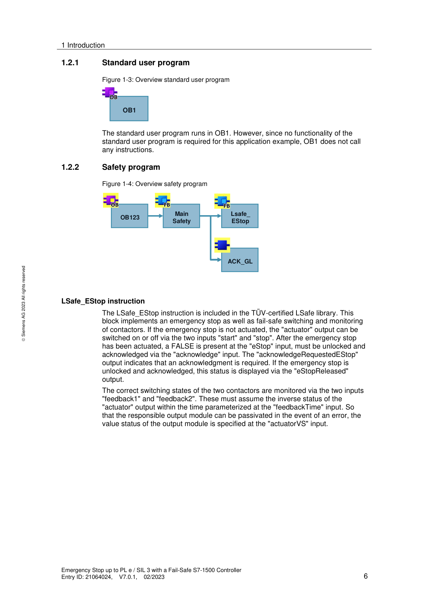
Okablowanie sprzętowe E-Stop (CPU 1516F + F-DI + F-DQ z dwoma kanałami):
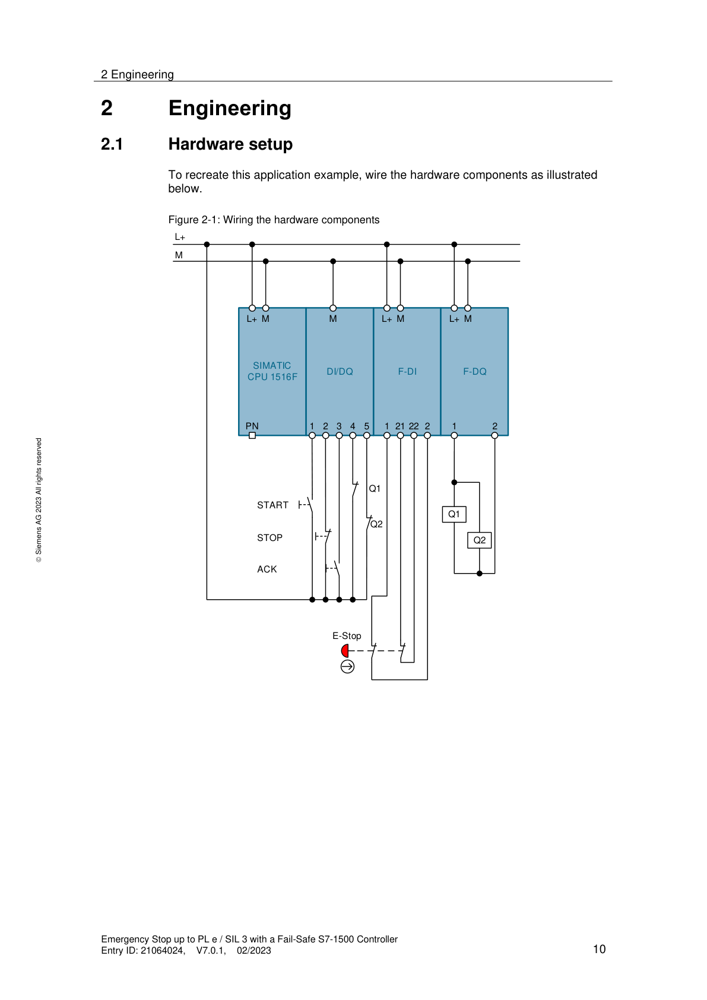
[PRAWDOPODOBNE] — na podstawie wiedzy domenowej Siemens ### 13.3. Co to jest feedback circuit (obwód sprzężenia zwrotnego styczników) i dlaczego jest wymagany dla SIL 3 / PL e? 🟡
Feedback circuit to monitorowanie stanu styków pomocniczych (NC, pozytywnie sterowanych) styczników wykonawczych podłączone z powrotem na wejście DI lub F-DI. Cel: wykrywanie zgrzania (welding) lub zacięcia styku stycznika. Zgrzany styk = kontakt NC pozostaje otwarty mimo odcięcia cewki → feedback = niezgodność → maszyna nie może wystartować. Dla Cat.4 / PL e / SIL 3 wymagana jest REDUNDANCJA ścieżki wyłączania (2 styczniki szeregowo lub równolegle) PLUS monitoring feedback obydwu — bez tego system nie spełnia DC ≥ 99% w podsystemie Reaction. Parametr feedbackTime w LSafe_EStop definiuje max czas w którym stycznik musi się przełączyć po komendzie (typowo 100–300ms ⚠️ DO WERYFIKACJI — wartość zależy od rodzaju stycznika, sprawdź w dokumentacji producenta). Połączenie styczników: pozytywne otwarcie (EN 60947-5-1) — jeśli cewka odcięta, styk NC jest MECHANICZNIE zmuszony do otwarcia nawet przy zgrzaniu. Wymagane przez normy w obwodach Safety.
[PRAWDOPODOBNE] — na podstawie wiedzy domenowej Siemens ### 13.4. Co to są CCF (Common Cause Failure) i jakie środki są wymagane dla Cat.4? 🟢
CCF (Common Cause Failure / Usterka wspólnej przyczyny) to scenariusz gdzie JEDNA przyczyna (np. przepięcie, temperatura, EMC, błąd montażu) uszkadza oba kanały redundantnego systemu jednocześnie — co pozbawia system odporności na błędy. ISO 13849-1 Tablica F.1 wymaga minimum 65 punktów CCF dla architektury Cat.3 i Cat.4. Punkty przyznawane za środki zapobiegawcze, m.in.: separacja/oddzielenie tras kablowych, stosowanie różnych technologii czujników, ochrona przed EMC, uwzględnienie warunków środowiskowych, procedury testowania ⚠️ DO WERYFIKACJI: dokładne wartości punktowe w ISO 13849-1 Tablica F.1 (zależą od wydania normy). W praktyce: prowadź kable kanału 1 i 2 w osobnych trasach, stosuj różnych producentów czujników (diverse redundancy), zachowuj separację przestrzenną. Siemens F-DI realizuje diagnostykę cross-circuit (zwarcie między kanałami) i pulse-testing — ale CCF środki leżą po stronie projektu i montażu, nie CPU.
[PRAWDOPODOBNE] — na podstawie wiedzy domenowej Siemens ### 13.5. Czy można łączyć przyciski e-stop szeregowo do jednego wejścia F-DI?
Tak, ale z ograniczeniami. EN ISO 13850 i IEC 62061 dopuszczają szeregowe połączenie e-stopów TYLKO jeśli można wykluczyć jednoczesne naciśnięcie dwóch e-stopów ORAZ jednoczesne wystąpienie awarii i naciśnięcia. Problem: przy szeregowym połączeniu nie wiadomo KTÓRY e-stop zadziałał → brak diagnostyki granularnej. Siemens zaleca oddzielne kanały F-DI per e-stop dla szybszej lokalizacji usterek i lepszej diagnostyki ProDiag/HMI. Praktyczny kompromis Siemens (wg doc. 21064024): każdy e-stop na osobnej parze kanałów F-DI z 1oo2 evaluation → każdy e-stop widoczny osobno w diagnostyce TIA Portal i na HMI. Jeśli szeregowo: każde zadziałanie to osobna “supplementary safety function” — analiza ryzyka musi obejmować wszystkie e-stopy indywidualnie.
[PRAWDOPODOBNE] — na podstawie wiedzy domenowej Siemens ## 14. PROFINET — TOPOLOGIA, DIAGNOSTYKA I ZAAWANSOWANE FUNKCJE
MRP (Media Redundancy Protocol) to protokół redundancji Ethernet w topologii pierścieniowej PROFINET.
| MRP wariant | Czas przełączenia | Limit urządzeń | Wymagania |
|---|---|---|---|
| MRP | ≤ 200 ms | max 50 | Standard switch z PROFINET |
| MRPD (Planned Duplication) | ≈ 0 ms | zależny od IRT | Tryb IRT, SCALANCE X lub CPU z IRT |
Zasada działania: w normalnej pracy pierścień działa jak linia — jeden port blokowany przez MRM (Media Redundancy Manager, zazwyczaj switch lub CPU). Przy zerwaniu kabla port otwiera się → ruch odbywa się w drugą stronę.
Konfiguracja: TIA Portal → Network view →
właściwości switcha/CPU → PROFINET → Media redundancy →
ustaw role MRM/MRC.
⚠️ Termin „Fast-MRP” nie jest oficjalnym pojęciem PROFINET — nie używaj go na rozmowie.
💡 Stosujesz gdy awaria pojedynczego kabla nie może zatrzymać produkcji.
[PRAWDOPODOBNE] — na podstawie wiedzy domenowej Siemens ### 14.2. Co to jest IRT (Isochronous Real-Time) i kiedy jest wymagany? 🟢
IRT (Isochronous Real-Time) to tryb PROFINET z deterministyczną synchronizacją cyklu do 250 µs i jitterem < 1 µs, realizowaną sprzętowo (ASIC).
| Tryb | Cykl | Jitter | Realizacja | Zastosowanie |
|---|---|---|---|---|
| RT (Real-Time, standard) | ~1 ms | kilka–kilkanaście µs | Programowa | Standardowe I/O, roboty |
| IRT (Isochronous Real-Time) | do 250 µs | < 1 µs | Sprzętowa (ASIC) | S120 synchroniczny, systemy wieloosiowe |
Wymagania IRT: - Zarządzane switche Siemens (np. SCALANCE X) lub topologia gwiazdki bez zewnętrznych switchów - CPU obsługujące IRT (S7-1500 — większość modeli z interfejsem PN/DP, w tym standardowe, T-CPU i F-CPU) - Telegram 105 (DSC) lub 111 dla SINAMICS S120
[PRAWDOPODOBNE] — na podstawie wiedzy domenowej Siemens ### 14.3. Jak diagnostykujesz sieć PROFINET w TIA Portal i PRONETA? 🟡
Diagnostics w TIA Portal: 1. Online → rozwiń
Devices & Networks → prawym na urządzenie →
Diagnose 2. Zakładka Diagnostics — stan
komunikacji, aktywne alarmy, topology view (połączenia portów) 3.
Go Online → mapa sieci ze statusami wszystkich urządzeń
PRONETA (bezpłatne narzędzie Siemens): - Standalone diagnostics PROFINET — niezależny od TIA Portal - Skanuje sieć, pokazuje mapę urządzeń, nazwy PROFINET, IP, porty
💡 PRONETA jest szczególnie użyteczny gdy nie masz projektu TIA ani dostępu do sterownika — np. przy szybkiej diagnozie u klienta lub sprawdzeniu sieci nieznanego systemu.
[PRAWDOPODOBNE] — na podstawie wiedzy domenowej Siemens ### 14.4. Co to jest Shared Device i kiedy go używasz?
Shared Device (PROFINET) to urządzenie I/O równocześnie zarządzane przez dwa kontrolery — każdy ma przypisany inny zakres modułów.
Przykład: ET200SP z 16 slotami: - CPU A zarządza slotami 1–8 (program standardowy) - CPU B zarządza slotami 9–16 (program Safety)
Stosujesz gdy: - Integracja Safety z systemem standardowym obsługiwanym przez różnych dostawców PLC - Aplikacja Safety i standardowa mają osobne sterowniki
Konfiguracja: TIA Portal → właściwości urządzenia →
Advanced Settings → Shared Device
[PRAWDOPODOBNE] — na podstawie wiedzy domenowej Siemens ### 14.5. Jak działa Device replacement bez PG (automatic name assignment)?
CPU S7-1500 może automatycznie przypisać nazwę PROFINET nowemu modułowi bez laptopa z TIA Portal.
Warunek: TIA Portal → CPU Properties →
Support device replacement without exchangeable medium
(domyślnie włączone w S7-1500)
Procedura: 1. Wymień fizycznie urządzenie na ten sam typ katalogowy 2. Podłącz do sieci PROFINET 3. CPU widzi urządzenie bez nazwy → porównuje topologię (numery portów switch) 4. CPU przypisuje nazwę automatycznie
⚠️ Nie działa jeśli: nowe urządzenie ma inny typ katalogowy, lub topologia sieci jest niejednoznaczna (duplikaty portów).
[PRAWDOPODOBNE] — na podstawie wiedzy domenowej Siemens ### 14.6. Jakie są rodzaje i funkcje przemysłowych switchy Ethernet w sieciach PROFINET?
Przemysłowe switche Ethernet zapewniają komunikację PROFINET w trudnych warunkach. Dzielą się na dwie kategorie:
Niezarządzalne (Plug & Play): - Nie wymagają konfiguracji — podłącz i działa - Fast Ethernet (10/100 Mb/s) lub Gigabit (10/100/1000 Mb/s), porty SFP (światłowód) - Niektóre wspierają QoS (priorytet pakietów PROFINET) mimo braku konfiguracji - Zastosowanie: proste segmenty sieci, rozgałęzienia I/O
Zarządzalne: - Pełna kontrola: VLAN, QoS, RSTP/MRP (redundancja), SNMP, LACP (agregacja łączy), IGMP Snooping - Diagnostyka: web interface, port monitoring, port mirroring - Kontrola dostępu: 802.1X, Port Access Control, DHCP Snooping - Wersje Gigabit z portami SFP, PoE+ (zasilanie kamer, czytników) - Wymagane dla topologii pierścieniowych (MRP), IRT, sieci z diagnostyką
Wspólne cechy przemysłowych switchy: - Metalowa obudowa IP30, montaż DIN, bezwentylatorowe (-40 do 75°C) - Redundantne zasilanie DC + styk przekaźnikowy Fault - Odporność EMC wg norm EN, architektura non-blocking
Na co zwracać uwagę przy PROFINET: - QoS musi priorytetyzować ramki PROFINET (VLAN Priority 6/7) - Zarządzalny switch = wymagany do MRP, IRT, TSN i diagnostyki PROFINET - W Siemens: seria SCALANCE X (XB/XC/XP/XR) — zintegrowana z TIA Portal
Źródło: transkrypcje ControlByte
S7 Communication to protokół komunikacji PLC–PLC i HMI–PLC firmy Siemens oparty na ISO on TCP (RFC 1006 — TCP/IP z warstwą ISO). Umożliwia bezpośredni dostęp do obszarów pamięci DB, M, I, Q zdalnego sterownika przez sieć PROFINET/Industrial Ethernet.
Instrukcje GET/PUT: - GET — odczyt
danych ze zdalnego PLC do lokalnego DB (dostępny w S7-1200/1500 z
biblioteki Communication). - PUT — zapis danych z lokalnego
DB do zdalnego PLC. - W S7-1200: bloki GET/PUT wbudowane. W S7-1500:
dostępne przez Communication → S7 Communication.
Zastosowania: - Komunikacja PLC–PLC między dwoma liniami bez SCADA (PLC A czyta statusy z PLC B). - HMI firm trzecich (Weintek, Proface, IDEC) obsługujących S7 protocol — mapują bezpośrednio adresy DB, bez GSDML. - Legacy integracja ze starszymi systemami SCADA (WinCC V6, InTouch) lub sterownikami S7-300/400.
Kluczowe ograniczenie bezpieczeństwa — S7-1500: Domyślnie w S7-1500 dostęp PUT/GET z zewnętrznych urządzeń jest zablokowany. Aktywacja: TIA Portal → CPU Properties → Protection & Security → Permit access with PUT/GET communication.
⚠️ Włączenie PUT/GET obniża poziom bezpieczeństwa — każde urządzenie znające IP PLC może czytać/pisać pamięć bez uwierzytelniania. Nigdy nie włączaj w systemach podłączonych do sieci korporacyjnej bez firewalla.
💡 Dla nowych integracji z IT preferuj OPC UA (TLS 1.2 + certyfikaty). S7/ISO on TCP = szybkie (<1 ms), bez autentykacji. OPC UA = ~10 ms, z szyfrowaniem — wybór dla systemów IT/OT.
[PRAWDOPODOBNE] — na podstawie wiedzy domenowej Siemens ### 14.8. Co to jest PROFINET TSN (Time Sensitive Networking) i czym różni się od IRT? 🟢
PROFINET TSN to następca IRT — stan standaryzacji IEEE 802.1 definiujący determinizm czasowy w standardowym Ethernet na poziomie sprzętowym, ale bez wymogu specjalistycznych ASIC-ów jak w IRT.
Kluczowe cechy TSN:
| Cecha | PROFINET IRT | PROFINET TSN |
|---|---|---|
| Standard | Siemens-proprietary ASIC | IEEE 802.1AS/Qbv/Qbu (open standard) |
| Cykl | 250 µs | 31.25 µs – 1 ms (konfigurowalny) |
| Jitter | < 1 µs | < 1 µs |
| Switche | Tylko SCALANCE X (Siemens) | Dowolny switch TSN-compliant (multi-vendor) |
| Topologia | Gwiazdka lub linia (bez obcych switchów) | Elastyczna, mieszana |
| Telegram | 102, 105 (S120) | Te same (102, 105, 111) — zmiana na warstwie transportowej, nie aplikacji |
Mechanizmy TSN (IEEE 802.1): - 802.1AS — synchronizacja czasu gPTP (generalized Precision Time Protocol) z dokładnością < 1 µs - 802.1Qbv — Time-Aware Shaper: harmonogramowanie ramek Ethernet w oknach czasowych (time slots) - 802.1Qbu — Frame Preemption: przerywanie niskopriorytetowych ramek dla krytycznej transmisji
Zastosowanie TSN: - Synchronizacja osi w systemach MRC (Motion Control Systems) z > 100 osi - Koroboty (cobots) wymagające deterministycznej synchronizacji z PLC < 1 ms - Fabryki przyszłości (Industry 4.0) — jeden segment Ethernet dla OT i IT jednocześnie
⚠️ Stan w 2026: PROFINET TSN jest zdefiniowany w PI (PROFIBUS & PROFINET International) specyfikacji V2.4. Sprzęt Siemens obsługujący pełne TSN: SIMATIC S7-1500 V3.0+ oraz SCALANCE XC/XP TSN. Sprawdź aktualną wersję firmware przed projektem.
💡 Na rozmowie: pytanie o TSN pojawia się coraz częściej. Kluczowa odpowiedź: TSN = IRT-like deterministm ale na otwartym standardzie IEEE → nie wymaga jednorodnej infrastruktury Siemens.
Źródło: PROFIBUS & PROFINET International (PI), PROFINET Specification V2.4
| Cecha | Type 2 | Type 4 |
|---|---|---|
| Diagnostyka | Zewnętrzny moduł testujący (External Test Device) | Wewnętrzna, w każdym cyklu (self-testing) |
| DC | 60–99% | ≥ 99% |
| Max poziom Safety | do PL d / SIL 2 (przy architekturze 1oo2) | do PL e / SIL 3 |
| Kategoria | Cat.2 lub Cat.3 | Cat.4 |
| Zastosowanie | Lekkie maszyny, dostępy serwisowe | Robotyzowane linie automotive, prasy |
⚠️ Type 2 NIE jest ograniczona do PL c / SIL 1 — z architekturą 1oo2 osiąga PL d / SIL 2. Częste nieporozumienie na rozmowach!
W TIA Portal: podłączasz jako F-DI z
1oo2 evaluation lub OSSD bezpośrednio na wejście
Safety.
[PRAWDOPODOBNE] — na podstawie wiedzy domenowej Siemens ### 15.2. Jak działa muting i czym różni się od override?
| Cecha | Muting | Override |
|---|---|---|
| Inicjacja | Automatyczna przez program Safety | Ręczna przez operatora (klucz/przycisk) |
| Powtarzalność | Wielokrotna, automatyczna | Jednorazowe, z licznikiem i logowaniem |
| Warunki | Fizyczne (czujniki mutingowe, okno czasowe) | Brak — tylko dostęp serwisowy |
| Cel | Normalny przepływ materiału | Usuwanie awarii, serwis |
| Status prawny | Element projektu Safety (uwzględniony w ocenie ryzyka) | Środek awaryjny z ograniczonym dostępem |
Przykład muting: paleta wjeżdża na taśmę — czujniki
mutingowe po obu stronach muszą oba zadziałać w czasie
< 4s, tylko wtedy kurtyna jest zawieszona na czas
przejazdu.
W TIA Portal: certyfikowany blok
MUTING_FKT (z biblioteki LSafe) obsługuje schematy
4-czujnikowe (cross i parallel). Wymaga 2 par czujników i okna czasowego
sekwencji.
⚠️ Override jest środkiem wyłącznie awaryjnym — musi być rejestrowany (kto, kiedy, ile razy). Nie stosuj jako alternatywy dla prawidłowo działającego muting.
[PRAWDOPODOBNE] — na podstawie wiedzy domenowej Siemens ### 15.3. Jak podłączasz OSSD (Output Signal Switching Device) kurtyny do modułu F-DI?
OSSD to para wyjść kurtyny (OSSD1, OSSD2) — dwa kanały sygnałów bezpieczeństwa z wbudowanym testowaniem impulsowym.
Podłączenie: - OSSD1 → kanał A modułu
F-DI - OSSD2 → kanał B modułu F-DI (para 1oo2)
⚠️ NIE podłączaj zasilania
VS*(pulse test) modułu F-DI do OSSD — kurtyna sama generuje własne impulsy testowe. W TIA Portal ustaw parametrSensor supplytego kanału naNone/Disabled— inaczej impulsy F-DI zablokują sygnał z kurtyny.
Discrepancy time: dopasuj do specyfikacji kurtyny
(zazwyczaj 10–30 ms ⚠️ DO WERYFIKACJI — sprawdź w karcie katalogowej
konkretnej kurtyny).
[PRAWDOPODOBNE] — na podstawie wiedzy domenowej Siemens ### 15.4. Jakie jest zastosowanie wyjść tranzystorowych z czujników bezpieczeństwa w systemach PLC Safety?
Wyjścia tranzystorowe z czujników bezpieczeństwa, takich jak kurtyny bezpieczeństwa czy skanery, są kluczowe dla systemów PLC Safety, ponieważ umożliwiają dwukanałowe monitorowanie i szybkie wykrywanie awarii. - Podłączenie: Wyjścia tranzystorowe z czujników bezpieczeństwa podłącza się do wejść bezpieczeństwa sterownika PLC. - Wykrywanie awarii: - Jeśli jedno z wyjść tranzystorowych ulegnie uszkodzeniu (np. spali się lub będzie miało zwarcie), system Safety natychmiast wykryje sytuację awaryjną. - Jest to analogiczne do wykrywania rozbieżności sygnału (“discrepancy error”) w przypadku styków mechanicznych. Praktyczne wskazówki: - W przypadku uszkodzenia jednego z wyjść tranzystorowych kurtyny bezpieczeństwa, F-CPU natychmiast zgłosi błąd, co zapobiega dalszej pracy maszyny w niebezpiecznym stanie. Źródło: transkrypcje ControlByte
Elektrorygiel bezpieczeństwa (door interlock / guard locking) to urządzenie mechaniczno-elektryczne które: 1. Monitoruje stan osłony (otwarta/zamknięta) — sygnał Safety do F-DI 2. Rygluje osłonę mechanicznie — uniemożliwia otwarcie strefy niebezpiecznej gdy maszyna działa
Typy elektrygli (na przykładzie Pilz PSENm):
| Model | Zasada | Max PL | Cechy charakterystyczne |
|---|---|---|---|
| PSENmlock mini | Elektromechaniczny | PL d / Cat.3 | Kompaktowy, proste aplikacje, dedykowany aktuator |
| PSENmlock | Elektromechaniczny z klamką | PL e / Cat.4 | Klamka awaryjna (escape release) — operator może wyjść od środka; siła trzymania 7500 N; ryglowanie i odryglowanie impulsowe (bez stałego zasilania cewki); IP67; montaż na profilach 40 mm |
| PSENslock 2 | Elektromagnetyczny (brak mechaniki) | PL e / Cat.4 | Wbudowany w osłonę, brak ruchomego aktuatora → eliminuje zużycie mechaniczne; trzymanie siłą elektromagnesu |
Kryteria doboru: - PL d wystarczy? → PSENmlock mini (tańszy, prostszy montaż) - Wymagany PL e? → PSENmlock lub PSENslock 2 - Operator może zostać zatrzaśnięty w strefie → PSENmlock z klamką (wymóg EN ISO 13849-1) - Aplikacja bez klamki wymaganej, chcesz uniknąć konserwacji mechanicznej → PSENslock 2
Podłączenie do PLC Safety: - Elektrorygiel ma
wyjścia cyfrowe (sygnały Safety) — podłącz do F-DI Siemens z ewaluacją
1oo2 - Cewka ryglowania: steruj przez F-DO lub standardowe DQ + F-PM-E
(jeśli SIL 2 wystarczy) - Sygnały z PNOZmulti: elektrorygiel podłącz do
dedykowanego bloku ML 2 D H M w konfiguratorze
PNOZmulti
Funkcja Key in Pocket (RFID): - Kaseta Pilz PIT z
czytnikiem RFID + elektrorygiel = operator musi
zalogować się tagiem RFID aby wejść do strefy - PLC
monitoruje czy operator z tagiem JEST w środku (Key in
Pocket) — ryglowanie możliwe tylko gdy wszystkie tagi są na zewnątrz -
Zapobiega przypadkowemu zamknięciu i zaryglowaniu strefy z operatorem
wewnątrz
⚠️ Siła trzymania a PL: sama siła mechaniczna ryglowania nie decyduje o PL — decyduje architektura sygnałów Safety (1oo2, DC, CCF). Elektrorygiel z katalogową wartością PL e osiąga ten poziom tylko przy prawidłowym okablowaniu i konfiguracji systemu Safety.
Źródło: transkrypcje ControlByte — Pilz PSENmlock, dokumentacja Pilz
Czujnik radarowy Safety to urządzenie bezpieczeństwa oparte na emisji fal elektromagnetycznych (radar) do wykrywania obecności osób w strefie niebezpiecznej — zamiast wiązki laserowej.
Architektura systemu Pilz PSEN RD 1.2: - Czujniki radarowe — do 5 m zasięgu, kąt ±50° od osi — komunikacja przez magistralę CAN (daisy chain) - Analizator — przetwarza sygnały z czujników, konfiguracja przez Ethernet; wyjścia cyfrowe Safety lub PROFIsafe/Safety over EtherCAT - 1 analizator obsługuje kilka czujników łącznie
4 strefy wykrywania na jeden czujnik: - Strefa 1
(dalsza, np. 1 m) → spowolnienie robota do prędkości bezpiecznej (tryb
SLS) - Strefa 2 (bliższa, np. 0.4 m) → pełne zatrzymanie (STO/SS1) -
Konfiguracja stref przez oprogramowanie
PSEN RD1 Configurator (GUI, Ethernet)
Porównanie radar vs skaner laserowy:
| Cecha | Skaner laserowy (SICK, PILZ) | Radar PSEN RD 1.2 |
|---|---|---|
| Zasada | Wiązka laserowa (optoelektronika) | Fale elektromagnetyczne |
| Wrażliwość na pył/mgłę/dym | Wysoka (błędne detekcje lub zaniki) | Bardzo niska (radar przebija pył) |
| Warunki środowiskowe | Czyste / kontrolowane | Trudne: odlewnie, spawalnie, pilarnie |
| Zasięg | do 5,5 m (safe area scanner) | do 5 m / do 9 m (wersje) |
| Konfiguracja stref | Oprogramowanie + teach-in | PSEN RD1 Configurator, 4 strefy/czujnik |
| Koszt systemu | Wyższy per czujnik | Niższy przy dużym obszarze |
Kiedy stosujesz radar: - Spawalnie (iskry, dym), odlewnie (pył metalowy), pilarnie (trociny) - Strefy z dużym zabrudzeniem gdzie skaner laserowy generuje fałszywe alarmy - Monitorowanie robotów mobilnych AGV/AMR w trudnym środowisku
⚠️ Integracja z Siemens Safety: analizator PSEN RD 1.2 obsługuje PROFIsafe → możesz go podłączyć bezpośrednio do F-CPU Siemens przez PROFINET. Alternatywnie: wyjścia cyfrowe Safety (OSSD) → F-DI.
Źródło: transkrypcja ControlByte — Poradnik Safety Czujnik radarowy Pilz PSEN RD 1.2
Technology Object to abstrakcja osi w TIA Portal dla motion control (dostępna w S7-1500, ET200SP CPU). TO enkapsuluje napęd + enkoder + parametry osi jako jeden obiekt z gotowym API w SCL.
| Typ TO | Opis | Typowe zastosowanie |
|---|---|---|
TO_SpeedAxis |
Tylko prędkość | Napędy bez pozycjonowania |
TO_PositioningAxis |
Pozycjonowanie absolutne/względne | Przenośniki z pozycją |
TO_SynchronousAxis |
Synchronizacja do osi master | Systemy wieloosiowe, cam profiles |
TO_ExternalEncoder |
Zewnętrzny enkoder bez napędu | Monitoring pozycji, wałek wirtualny |
API Motion Control (bloki MC_):
MC_Power, MC_Home,
MC_MoveAbsolute, MC_MoveVelocity,
MC_Halt, MC_Stop
Konfiguracja: TIA Portal →
Add new object → Technology object → wybierz
typ → przypisz napęd SINAMICS przez telegram PROFIdrive 105
/ 111.
[PRAWDOPODOBNE] — na podstawie wiedzy domenowej Siemens ### 16.2. Jak robisz autotuning napędu G120/V90 w Startdrive?
Startdrive: Online → wybierz napęd →
Commissioning → Motor identification
1. Motor identification (statyczna — silnik stoi): -
Motor identification → Static → Start - Trwa ~30 s, napęd
mierzy rezystancję i induktancję uzwojeń - Wymagane: uziemienie silnika,
napęd w stanie Ready
2. Speed controller optimization (dynamiczna — silnik się
obraca): -
Motor identification → Speed controller optimization → Start
- Silnik wykonuje sekwencję ruchów testowych — odblokuj strefę
bezpieczeństwa - Wyznacza Kp (wzmocnienie) i
Ti (czas całkowania) regulatora prędkości
3. Weryfikacja: r0047 ⚗️ DO WERYFIKACJI
(status identyfikacji) = 0 → brak błędu, parametry
zapisane. Można też sprawdzić po powrócie p1910 do 0 i
braku faultu w r0945.
💡 Jeśli napęd jest mechatronicznie połączony z ciężką maszyną: uruchom identyfikację na biegu jałowym lub przy odłączonej mechanice, a potem ręcznie dostraj
Kp.
[PRAWDOPODOBNE] — na podstawie wiedzy domenowej Siemens ### 16.3. Jakie są najważniejsze parametry SINAMICS G120 które musisz znać?
| Parametr | Opis | Uwaga |
|---|---|---|
p0840 |
ON/OFF1 — źródło sygnału start/stop | Bit z telegramu PROFIdrive lub terminal |
p1120 |
Czas rampy rozruchu [s] | Od 0 do max prędkości |
p1121 |
Czas rampy hamowania [s] | |
p0922 |
Telegram PROFIdrive | Musi zgadzać się z konfiguracją TIA Portal! |
r0002 |
Aktualny status napędu (bitmapa) | Gotowy / praca / błąd / alarm |
r0945[0..7] |
Kody błędów (fault codes) | Pierwsze miejsce diagnostyki po F-alarm |
r2110 |
Aktualny kod alarmu (warning) | ⚠️ DO WERYFIKACJI — sprawdź w Parameter Manual |
p9501 / p9601 |
Parametry Safety (STO enable, SS1) | ⚠️ DO WERYFIKACJI — zakres p95xx/p96xx poprawny, dokładne numery sprawdź w SINAMICS Safety Function Manual |
⚠️ Błędny
p0922(telegram) = brak komunikacji lub brak danych Safety — zawsze weryfikuj po podłączeniu nowego napędu.
| Fault | Znaczenie | Najczęstsza przyczyna | Diagnoza |
|---|---|---|---|
| F30001 | Power unit: Overcurrent — przetężenie wyjścia | Zwarcie kabla silnikowego, doziemienie, zbyt szybka rampa przyspieszenia, błędne dane silnika | Sprawdź kabel megaomomierzem 500V DC między żyłami a PE (≥10 MΩ), zweryfikuj p0304–p0311, zmniejsz rampę p1120 |
| F07801 | Motor overtemperature (model termiczny) | Przeciążenie, zatkany filtr chłodzenia, za długie rozruchy | Sprawdź p0335 (klasa izolacji) i wentylację
silnika |
⚠️ W starszych wersjach firmware G120
F30001może oznaczać różne usterki Power Unit — zawsze weryfikuj w Parameter Manual dla konkretnej wersji firmware (r0018= wersja firmware).
Kasowanie faultów: - Programowo:
p2103 = 1 lub bit 7 słowa sterowania STW1 w
telegramie PROFIdrive - Na panelu BOP-2: długie wciśnięcie ESC/OK -
Historia faultów: r0945[0..7]
[PRAWDOPODOBNE] — na podstawie wiedzy domenowej Siemens ### 16.5. Czym jest SINAMICS G120 i do jakich silników oraz aplikacji jest przeznaczony? 🔴
SINAMICS G120 to rodzina przemysłowych przemienników częstotliwości (falowników) firmy Siemens przeznaczonych do regulacji prędkości silników indukcyjnych (asynchronicznych) klatkowych w aplikacjach ogólnoprzemysłowych.
Podstawowe dane: - Zakres mocy: 0,37 kW – 250 kW (napięcie 3×400V AC / 3×690V AC) - Topologia: modułowa — Control Unit (CU) + Power Module (PM) + opcjonalnie BOP (panel operatorski) - Komunikacja: PROFINET, PROFIBUS, USS, Modbus RTU (zależy od wersji CU)
Stosowane silniki: | Typ silnika | Tryb sterowania G120 | Typowe zastosowanie | |————-|———————|——————-| | Silnik indukcyjny klatkowy (IM) | V/f, Vector (sensorless / closed-loop) | Wentylatory, pompy, przenośniki | | Silnik indukcyjny z enkoderem | Vector closed-loop | Wciągarki, prasy, mieszalniki | | PMSM / IPM (IE4/IE5) | Vector PMSM | Sprężarki, pompy wysokosprawne |
Typowe aplikacje G120: - Wentylatory i pompy (redukcja zużycia energii przez regulację prędkości) - Przenośniki taśmowe i rolkowe - Mieszalniki, ekstruktory, wciągarki - Sprężarki powietrza
⚠️ G120 ≠ serwonapęd — G120 nie jest przeznaczony do precyzyjnego pozycjonowania (brak sprzężenia zwrotnego pozycji w standardzie). Do servo używaj SINAMICS S120 lub V90.
Źródło: Siemens SINAMICS G120 Getting Started / transkrypcje ControlByte
Kompletny układ z G120 składa się z kilku modułów, które można dobierać niezależnie.
Architektura modułowa G120:
| Komponent | Opis | Przykładowe typy |
|---|---|---|
| Control Unit (CU) | “Mózg” napędu — sterowanie, komunikacja, Safety | CU240E-2 PN, CU250S-2 PN, CU230P-2 |
| Power Module (PM) | Przekształtnik mocy — prostownik + falownik IGBT | PM240-2, PM250, PM330 |
| BOP-2 / IOP | Panel operatorski — parametryzacja, diagnostyka | BOP-2 (basic), IOP-2 (graficzny) |
| Silnik | Silnik indukcyjny klatkowy 3-fazowy | SIMOTICS GP, SD, DP |
| Sterownik PLC | Wydaje rozkazy przez PROFINET/PROFIBUS | S7-1200, S7-1500 |
Połączenia: - CU ↔︎ PM: złącze wewnętrzne (snap-in) lub kabel adaptera - PLC ↔︎ CU: PROFINET lub PROFIBUS — telegramy standardowe (1, 20, 352) - Czujnik temperatury silnika: PTC/KTY84 do wejścia CU (ochrona termiczna)
💡 PM250 ma funkcję odzysku energii (regeneracja do sieci) — stosowany przy wciągarkach i aplikacjach z hamowaniem.
Źródło: Siemens SINAMICS G120 Getting Started / transkrypcje ControlByte
Do uruchomienia G120 dostępne są trzy narzędzia — wybór zależy od zakresu prac.
| Narzędzie | Zastosowanie | Kiedy używać |
|---|---|---|
| Startdrive (wtyczka TIA Portal) | Pełna konfiguracja, parametryzacja, diagnostyka online, Safety | Nowe projekty, integracja z PLC |
| STARTER (standalone) | Parametryzacja offline/online, oscyloskop, Drive Control Chart | Starsze projekty, poza TIA |
| BOP-2 / IOP | Parametryzacja ręczna na panelu napędu | Szybki serwis w terenie bez laptopa |
| SINAMICS Smart Access Module | Parametryzacja przez Wi-Fi z przeglądarki | Uruchomienie mobilne |
Startdrive — kluczowe kroki commission: 1. TIA
Portal → Add new device → Drives → SINAMICS G120 → wybierz CU i PM 2.
Konfiguracja silnika: p0304 (napięcie), p0305
(prąd), p0307 (moc), p0310 (częstotliwość),
p0311 (prędkość znamionowa) 3. Identyfikacja silnika:
p1910 = 1 (pomiar stojana w stanie spoczynku) lub
p1960 = 1 (obracająca się identyfikacja) 4. Wybór metody
sterowania: p1300 (0 = V/f, 20 = Vector bez enkodera, 21 =
Vector z enkoderem) 5. Download → Compile → Go online → Test Jog
Źródło: Siemens SINAMICS G120 Getting Started / transkrypcje ControlByte
G120 obsługuje kilka metod sterowania silnikiem — dobór zależy od wymagań aplikacji.
Tryb (p1300) |
Nazwa | Enkoder | Dokładność prędkości | Zastosowanie |
|---|---|---|---|---|
| 0 | V/f (liniowy) | Nie | ±3–5% | Wentylatory, pompy, proste przenośniki |
| 2 | V/f z FCC (Flux Current Control) | Nie | ±2–3% | Wyższy moment przy małych prędkościach |
| 20 | Vector (bez enkodera) | Nie | ±0,5% | Wymagania na moment, bez czujnika |
| 21 | Vector (z enkoderem) | Tak | ±0,01% | Wciągarki, precyzyjne prędkości |
| 22 | PMSM Vector (bez enk.) | Nie | ±0,5% | Silniki IE4/IE5 bez enkodera |
| 23 | PMSM Vector (z enk.) | Tak | ±0,01% | Silniki IE4/IE5 z enkoderem |
Telegramy PROFINET dla G120: - Telegram 1 (standardowy): słowo sterujące STW1 + prędkość zadana (16-bit) - Telegram 20: rozszerzony — dodaje prąd, moment, status - Telegram 352 (Safety): zawiera PROFIsafe — dla wersji CU z Safety Integrated
⚠️ p1300 = 0 (V/f) nie reguluje momentu — przy przeciążeniu prędkość spada. Do stałego momentu niezależnego od obciążenia → Vector (p1300 = 20/21).
Źródło: Siemens SINAMICS G120 Getting Started / transkrypcje ControlByte
Identyfikacja silnika to pomiar elektrycznych parametrów podłączonego silnika przez napęd G120. Bez niej regulator wektorowy nie działa poprawnie — używa jedynie wartości tabliczkowych, które nie uwzględniają rzeczywistego okablowania i stanu silnika.
Dwa rodzaje identyfikacji:
| Parametr | Typ | Opis | Warunek |
|---|---|---|---|
p1910 = 1 |
Stojanova (statyczna) | Pomiar rezystancji stojana R1, indukcyjności rozproszenia — silnik stoi | Silnik może być połączony z maszyną |
p1960 = 1 |
Wirująca (dynamiczna) | Pomiar R1 + R2, indukcyjności magnesującej Lm — silnik obraca się | Silnik musi móc się obracać swobodnie |
Procedura p1910 (statyczna) krok po
kroku: 1. Podaj dane tabliczkowe silnika: p0304,
p0305, p0307, p0310,
p0311 2. Ustaw p1910 = 1 → przy następnym
rozruchu napęd przeprowadzi pomiar 3. Daj rozkaz RUN (Enable) → napęd
wykonuje pomiar (~10–30 s), silnik może lekko drżeć 4. Po zakończeniu
p1910 wraca do 0, parametry p0350 (R1),
p0356 (Ls) są zapisane 5. Zapisz parametry:
p0971 = 1 (zapis do ROM) lub przez Startdrive →
Download
Dlaczego to ważne: - Zbyt wysokie R1 (długi kabel) →
regulator wektorowy kompensuje automatycznie po ID - Silnik inny niż w
danych tabliczkowych (np. przewinięty) → ID wykryje różniące się R1 -
Brak ID przy p1300 = 20/21 → moment może być niedokładny o
20–40%
⚠️ Najczęstszy błąd na komisjoningu: download projektu, pierwsze uruchomienie → silnik wibruje lub nie osiąga zadanej prędkości → przyczyną brak identyfikacji lub błędne dane tabliczkowe.
Źródło: Siemens SINAMICS G120 Getting Started / transkrypcje ControlByte
Procedura uruchomienia G120 (CU240E-2 PN + PM240-2) z silnikiem indukcyjnym przez PROFINET.
Faza 1 — Przygotowanie sprzętowe: 1. Zamontuj CU na
PM (snap-in), podłącz 3×400V AC do PM, silnik do U2/V2/W2 2. Podłącz
PTC/KTY84 do CU, kabel PROFINET do switcha/PLC 3. Jeśli Safety: podłącz
E-Stop do zacisków STO (DI4/DI5) 4. Włącz zasilanie — BOP-2 pokaże
o lub alarm A07991 (brak konfiguracji)
Faza 2 — Konfiguracja w Startdrive: 1. TIA Portal →
Add new device → SINAMICS G120 → wybierz CU i
PM 2. Commissioning wizard: dane tabliczkowe silnika
(p0304–p0311), metoda sterowania
(p1300) 3. Network view: połącz z PLC, ustaw nazwę PROFINET
i IP 4. Wybierz telegram p0922 (1 = standardowy, 20 =
rozszerzony, 352 = Safety) 5. Compile + Download HW do PLC
Faza 3 — Identyfikacja silnika: 1. Statyczna
(p1910 = 1): pomiar R1, Lσ przy stojącym silniku (~30s) 2.
Opcjonalnie wirująca (p1960 = 1): silnik musi się obracać
swobodnie — zabezpiecz strefę 3. Sprawdź
r0047 = 0 (brak błędów po identyfikacji)
Faza 4 — Test Jog i weryfikacja: 1. Startdrive →
Control panel → Jog: ustaw 300 rpm, kliknij JOG+ 2. Monitoruj
r0021 (prędkość), r0027 (prąd) — porównaj z
tabliczkowymi 3. Kierunek odwrotny? → zamień fazy lub
p1821 = 1 4. Test STO: aktywuj → r9722.0 = 1
(STO_Active) → napęd nie generuje momentu
Faza 5 — Uruchomienie z PLC przez PROFINET: 1. STW1
= 16#047F (Enable + RUN), HSW = 16384 → 100%
prędkości p2000 2. Monitoruj ZSW1 (r0052): bit
2 = gotowy, bit 4 = w ruchu 3. Zapisz do ROM: p0971 = 1
Faza 6 — Safety komisjonowanie (jeśli dotyczy): 1. Startdrive → Safety Integrated → Start safety commissioning 2. Test STO z podpisem → Safety checksum (Safety ID) → zmień hasło
| Parametr diagnostyczny | Opis |
|---|---|
r0945 |
Kod ostatniego faultu |
r0021 |
Prędkość aktualna [rpm] |
r0027 |
Prąd aktualny [A] |
r0052 |
Słowo statusowe ZSW1 |
⚠️ Telegram
p0922musi być identyczny w napędzie i DB PLC. Niezgodność = pozornie poprawna komunikacja, ale bity na złych pozycjach.
⚠️ Po zmianie parametrów Safety obowiązkowy Safety Acceptance Test z raportem.
💡
Take online device as preset— TIA Portal wczyta konfigurację z istniejącego napędu jako punkt startowy.
Źródło: Siemens SINAMICS G120 Getting Started, Startdrive commissioning guide
Blok funkcyjny MC_MoveJog w TIA Portal służy do sterowania osią z
zadaną prędkością, najczęściej wykorzystywany jest do ruchu w trybie
ręcznym (JOG), ale może być również używany w normalnym cyklu pracy
maszyny. - Jest to blok typu Enable, co oznacza, że działa tak długo,
dopóki na jego wejściu JogForward lub
JogBackward podany jest stan wysoki. -
Axis: Referencja do obiektu
technologicznego (SpeedAxis, PositioningAxis, SynchronousAxis). -
JogForward (BOOL): Aktywuje ruch osi do
przodu. - JogBackward (BOOL): Aktywuje
ruch osi do tyłu (jednoczesne aktywowanie obu powoduje błąd). -
Velocity (Long Real): Bezwzględna wartość
prędkości, z jaką oś ma się poruszać (np. w mm/s); wartość ujemna jest
traktowana jako bezwzględna, a kierunek nadaje
JogForward/JogBackward. -
Acceleration, Deceleration,
Jerk (Long Real): Parametry dynamiki ruchu;
wartość -1 powoduje użycie parametrów skonfigurowanych w obiekcie
technologicznym. - PositionControl (BOOL):
Aktywuje regulator pozycji (domyślnie True). Źródło: transkrypcje
ControlByte
Blok MC_MoveJog charakteryzuje się specyficznymi zachowaniami i
wyjściami statusowymi, które informują o jego działaniu i umożliwiają
dynamiczną kontrolę ruchu. - Po aktywacji ruchu (np.
JogForward = True), na wyjściu Busy pojawia
się stan True, a po osiągnięciu zadanej prędkości, bit
InVelocity również przyjmuje wartość True. - W przypadku
błędnej parametryzacji (np. nieodpowiednie przyspieszenie), na wyjściu
Error pojawia się True, a ErrorID wskazuje kod
błędu (np. 8004h dla “Illegal acceleration specification”). - Podczas
trwania ruchu możliwe jest dynamiczne zmienianie parametrów
Velocity, Acceleration,
Deceleration i Jerk “w locie”, co jest
przydatne w aplikacjach wymagających adaptacji prędkości. - Podanie
wartości 0 dla Velocity podczas aktywnego bloku spowoduje
zahamowanie osi i utrzymanie prędkości zerowej. Źródło: transkrypcje
ControlByte
Enkoder inkrementalny — kluczowe parametry:
| Parametr | Typowe wartości | Opis |
|---|---|---|
| PPR (Pulses Per Revolution) | 100 / 512 / 1024 / 2048 / 4096 / 8192 | Impulsy na jeden pełny obrót osi enkodera |
| Napięcie zasilania | 5 V DC (TTL) / 12–24 V DC (HTL) | TTL = linie różnicowe, HTL = sygnał push-pull |
| Sygnały | A, B (faza 90°), Z (indeks/zerowy) | A+B → kierunek i liczba impulsów; Z → punkt odniesienia |
| Max częstotliwość | do 500 kHz (HTL) / do 1 MHz (TTL) | Limit dla modułu licznikowego lub wejścia HSC |
| Ochrona | IP54–IP67 | Zależnie od producenta i montażu |
Enkoder absolutny — kluczowe parametry:
| Parametr | Typowe wartości | Opis |
|---|---|---|
| Rozdzielczość single-turn | 12–25 bit | 17 bit = 131 072 pozycji/obrót (typowy HIPERFACE/EnDat) |
| Rozdzielczość multi-turn | 12 bit dodatkowe | 4096 pełnych obrotów liczonych niezależnie |
| Interfejs | SSI, EnDat 2.1/2.2, HIPERFACE, HIPERFACE DSL | Patrz Q16.13 |
| Czas odpowiedzi | do 8 µs (EnDat 2.2) | Limit dla krótkiego czasu cyklu napędu |
| Diagnostyka | temperatura, błędy wewnętrzne | Dostępna przez EnDat 2.2 i HIPERFACE DSL |
Co mogą: - Precyzyjne pozycjonowanie do ±1 impulsu
(inkrementalny) lub ±0.003° przy 17 bit (absolutny) - Pomiar prędkości:
n = (fimes60)/PPR
[rpm] - Multi-turn absolutny: śledzenie pozycji przez wiele obrotów bez
zasilania bateryjnego - Diagnostyka wewnętrzna (temperatura, błędy —
EnDat 2.2, HIPERFACE DSL) - Synchronizacja osi
(TO_ExternalEncoder w TIA Portal) — wałek wirtualny,
master-slave
Czego nie mogą: - Inkrementalny: nie pamięta pozycji po zaniku zasilania → zawsze wymaga homing po resecie - Inkrementalny: nie ma jednoznacznej pozycji absolutnej → niebezpieczne przy osiach pionowych z obciążeniem - Absolutny single-turn: zlicza tylko jeden obrót → po >360° traci pozycję absolutną - Standard enkodery: nie są certyfikowane Safety → nie można ich używać dla SLS/SDI (wymagają enkoder Safety: HIPERFACE Safety lub EnDat Safety) - HTL przy dużej prędkości: ograniczona częstotliwość (~500 kHz) → przy dużej prędkości i wysokim PPR może dochodzić do utraty impulsów
⚠️ Safety funkcje SLS/SDI: SINAMICS wymaga enkodera certyfikowanego Safety (HIPERFACE Safety lub EnDat Safety) wbudowanego w silnik — standardowy enkoder przemysłowy nie spełnia wymagań IEC 61800-5-2 dla „safe encoder feedback”.
💡 Przelicznik rozdzielczości: enkoder 1024 PPR z interpolacją ×4 (A, /A, B, /B) daje 4096 kroków/obrót — to standardowe zachowanie modułu HSC lub SINAMICS przy zliczaniu czterech zboczy.
[PRAWDOPODOBNE] — na podstawie wiedzy domenowej Siemens ### 16.14. Jakie są interfejsy enkoderów i jak konfigurujesz enkoder w SINAMICS i TIA Portal? 🟡
Przegląd interfejsów:
| Interfejs | Typ sygnału | Napięcie | Kierunek | Typowe zastosowanie |
|---|---|---|---|---|
| TTL (A/B/Z) | Cyfrowy różnicowy | 5 V DC | Jednostronny | S7-1200 HSC, proste osi, tanie aplikacje |
| HTL (A/B/Z) | Cyfrowy push-pull | 12–24 V DC | Jednostronny | Środowisko przemysłowe, odporność na EMC |
| Sin/Cos 1 Vpp | Analogowy sinusoidalny | 5 V / 12 V | Jednostronny | G120 z CU240E, wysoka rozdzielczość przez interpolację |
| SSI | Szeregowy synchroniczny | 5 V / 12 V | Jednostronny | Absolutne enkoderzy starszej generacji |
| EnDat 2.1/2.2 | Szeregowy, dwukierunkowy | 5 V DC | Dwukierunkowy | S120, SIMOTION, nowoczesne SINAMICS — wysoka dynamika |
| HIPERFACE | Sin/Cos + RS-485 | 7–12 V DC | Dwukierunkowy | Silniki Siemens 1FK7/1FT7 (classic) |
| HIPERFACE DSL | Cyfrowy, tylko 2 żyły | 5 V DC | Dwukierunkowy | V90 z 1FG/1FK7 — kabel enkodera = kabel mocy |
Konfiguracja w SINAMICS Startdrive:
| Parametr | Opis | Przykładowe wartości |
|---|---|---|
p0400 |
Typ enkodera | 0=brak, 1=TTL/HTL inkr., 4=SSI, 9=EnDat 2.2, 11=HIPERFACE sin/cos |
p0404 |
Liczba PPR (impulsy/obrót) | 1024, 2048, 4096, 8192 |
p0406 |
Napięcie zasilania enkodera | 0=5V, 1=12V, 2=24V |
p0408 |
Liczba bitów SSI | 10–30 bit |
p0418 |
Współczynnik interpolacji sin/cos | 1024 lub 2048 |
p0431 |
Korekta offsetu enkodera (fine adjust) | Wartość w impulsach |
Konfiguracja Technology Object (TIA Portal Motion
Control): 1. TIA Portal → Technology objects → wybrany TO
(TO_PositioningAxis lub TO_ExternalEncoder) 2.
Zakładka Encoder → Encoder type: Incremental /
Absolute 3. Ustaw: Data exchange type (np. PROFIdrive,
analog sin/cos, HSC module) 4. Encoder resolution: podaj
PPR lub ilość bitów 5. Dla TO_ExternalEncoder: wskaż moduł
HSC (S7-1200) lub interfejs sieciowy enkodera (ET200S counting
module)
Wejście HSC (High Speed Counter) w S7-1200/S7-1500 dla
enkoderów TTL/HTL: - S7-1200: wbudowane HSC
(HSC1–HSC6) — max 100 kHz na kanał; moduł
SB 1221 High Speed zwiększa do 200 kHz - S7-1500T:
moduł TM PosInput (6ES7138-6AA01) dla enkoderów sin/cos / TTL do 1
MHz
⚠️ PROFINET enkoder z Technology Object: telegram
102(z enkoderem) wymaga że SINAMICS odbiera pozycję z wbudowanego enkodera przez Startdrive, następnie przesyła ją do CPU przez PROFINET jako część PZD telegramu. Telegramy1i20nie zawierają danych enkodera — tylko prędkość!
💡 HIPERFACE DSL: jeden kabel do serwosiłnika zawiera jednocześnie zasilanie silnika (3 fazy + PE) i sygnał enkodera DSL — brak osobnego kabla enkodera. W Siemens: V90 współpracuje z silnikami 1FL6 (enkoder wbudowany), natomiast 1FK7 używa DRIVE-CLiQ z S120/S210 (OCT — One Cable Technology, Siemens Motion Connect kable).
[PRAWDOPODOBNE] — na podstawie wiedzy domenowej Siemens ### 16.15. Czym są silniki IE5 (IPM / synchroniczne z magnesami trwałymi) i dlaczego zastępują klasyczne silniki indukcyjne w nowych projektach? 🟢
Silniki IE5 (Ultra-Premium Efficiency) to silniki synchroniczne z magnesami trwałymi wbudowanymi w wirnik (IPM — Interior Permanent Magnet). Są najwyższą klasą sprawności według IEC 60034-30-1.
Klasy sprawności silników (IEC 60034-30-1):
| Klasa | Opis | Sprawność (4-bieg., 11 kW) |
|---|---|---|
| IE1 | Standard | ~89% |
| IE2 | High Efficiency | ~91% |
| IE3 | Premium | ~92% |
| IE4 | Super Premium | ~94% |
| IE5 | Ultra Premium | ≥ 96% |
Dlaczego IE5 / IPM zastępuje silnik indukcyjny klatkowy: - Sprawność: IE5 = ≥96% vs IE3 = ~92% → mniejszy pobór prądu, oszczędność energii - Regulator: PMSM wymaga enkodera i wektorowego sterowania (FOC) — nie można go uruchomić przez prosty V/f; wymaga SINAMICS z silnikowym modułem - Wygląd: silnik IE5 (np. SIMOTICS GP 1LA, seria 1PH PMSM) wygląda identycznie jak klasyczny silnik indukcyjny — tylko tabliczka znamionowa zdradza różnicę - Wymaganie unijne: od 2023 roku w EU obowiązkowy IE3 dla silników ≥750W; nowe projekty kierują się w stronę IE4/IE5
IE5 w praktyce commissioning: - Tabliczka
znamionowa: IPM lub PMSM zamiast
IM (Induction Motor) - Parametryzacja napędu:
p0300 = 2 (PMSM) zamiast p0300 = 1
(IM) - Enkoder obowiązkowy (inkrementalny lub absolutny
wbudowany) — napęd musi znać pozycję kątową wirnika z magnesami
trwałymi, aby prawidłowo generować pole stojana (FOC) - Identyfikacja
silnika (p1910/p1960) przebiega inaczej niż dla IM — uwzględnia
magnetyzację stałą magnesów
⚠️ Najczęstszy błąd: operator wymienia silnik IE3 (IM) na IE5 (IPM) i pozostawia
p0300 = 1— napęd próbuje magnetyzować silnik synchroniczny jak indukcyjny → natychmiastowy fault lub zniszczenie uzwojeń.
💡 Na rozmowie: pytanie “co zrobisz gdy dostajesz silnik który wygląda jak standardowy trójfazowy ale napęd nie chce się uruchomić?” → sprawdź typ:
IMvsPMSM/IPMna tabliczce → ustawp0300odpowiednio.
Źródło: transkrypcja ControlByte — przegląd silników w aplikacjach Motion Control
Systematyczna checklista:
⚠️ Pułapka Safety + Start: logika musi wymagać nowego impulsu Start po ACK. ACK samo w sobie nie powinno uruchamiać napędów.
[PRAWDOPODOBNE] — na podstawie wiedzy domenowej Siemens ### 17.2. HMI pokazuje alarm którego nie ma w projekcie TIA Portal — skąd pochodzi?
Możliwe źródła „obcych” alarmów:
| Źródło | Opis | Gdzie szukać |
|---|---|---|
| System alarm (auto) | Generowany przez TIA Portal dla zdarzeń sprzętowych (moduł offline, błąd Safety, utrata komunikacji) | HMI → System alarms →
Diagnostic alarms |
| Stary projekt HMI | Alarm do tagu który już nie istnieje — „stale” wpisy w alarm buffer | TIA Portal → HMI Alarms → Discrete Alarms → szukaj po numerze |
| Alarm z urządzenia | Napęd/robot wysyła alarm diagnostyczny przez PROFINET alarm mechanism | WinCC → Diagnostic alarms lub alarm z adresem
sprzętowym |
💡 Procedura: TIA Portal → HMI Alarms → Discrete Alarms / Analog Alarms — filtruj po numerze alarmu. Jeśli brak → sprawdź
System alarms → Diagnostic alarms.
[PRAWDOPODOBNE] — na podstawie wiedzy domenowej Siemens ### 17.3. Moduł ET200SP nie pojawia się w sieci po podłączeniu — lista kroków diagnostycznych.
💡 PRONETA → skan sieci → sprawdź czy moduł odpowiada na ARP — szybki sposób bez TIA Portal.
[PRAWDOPODOBNE] — na podstawie wiedzy domenowej Siemens ### 17.4. Napęd SINAMICS G120 świeci ciągłym czerwonym LED i nie kasuje się — co robisz? 🟢
Ciągły czerwony RDY LED = aktywny fault (F-alarm), nie alarm (A-alarm, który jest żółty).
Procedura diagnostyki: 1. Odczytaj kod:
r0945[0] w Startdrive (online) lub na panelu BOP-2 → zapisz
r0945[0..7] 2. Sprawdź w Parameter Manual: każdy
Fxxxxx ma opis przyczyny i działania korygującego 3.
Najczęstsze: F30001 (przetężenie wyjścia / overcurrent),
F07800-F07802 (temperatura silnika), F30002
(przepięcie / nadnapięcie DC-bus — overvoltage), F30004
(przegrzanie radiatora — overtemperature heatsink)
⚠️ Jeśli fault kasuje się ale wraca natychmiast: przyczyna fizyczna wciąż aktywna — nie idź dalej bez usunięcia przyczyny.
⚠️ Fault nie daje się skasować → sprawdź czy STO nie jest aktywne (
r9772= STO status) — napęd nie ruszy ani się nie skasuje przy aktywnym STO.
💡 Jeśli kasowanie przez sieć nie działa: hardware reset — chwilowe odcięcie zasilania 24V Control Unit (zachowaj 400V Power Module).
[PRAWDOPODOBNE] — na podstawie wiedzy domenowej Siemens ### 17.5. CPU przeszło w STOP podczas produkcji — pierwsze 3 kroki. 🟢
CPU w STOP = zatrzymanie wszystkich wyjść. Prawidłowa kolejność: odczyt → diagnoza → przyczyna → dopiero wtedy akcja.
Kroki: 1. Odczytaj informację ze
sprzętu: wyświetlacz S7-1500 pokazuje skrócony opis przyczyny
STOP. Dioda RUN/STOP: ciągłe żółte = STOP. Zanotuj wszystko zanim
podłączysz się do sieci. 2. Diagnostics buffer w TIA
Portal: Online → CPU →
Diagnostics → Diagnostic buffer. Ostatni wpis = przyczyna
zatrzymania.
| Typowa przyczyna STOP | Co oznacza |
|---|---|
Time error OB cyclic |
Scan time przekroczony — za dużo kodu lub zablokowane wywołanie FB |
STOP requested by program |
Instrukcja STP w kodzie — szukaj w bloku aktywnym w
chwili STOP |
Hardware failure |
Moduł I/O wypadł z konfiguracji lub zwarcie |
Safety STOP |
F-CPU wykryło błąd Safety — sprawdź F-Runtime group |
⚠️ Zakaz Download przed diagnozą: Download kasuje Diagnostics buffer na CPU — tracisz ślad przyczyny. Zawsze odczytaj Diagnostic buffer PRZED downloadem.
💡 Warm restart a STOP:
Warm restart(Run) bez zrozumienia przyczyny = maszyna może natychmiast znów wejść w STOP. Jeśli przyczyną jest zwarcie I/O, warm restart tylko powtórzy błąd.
[PRAWDOPODOBNE] — na podstawie wiedzy domenowej Siemens ### 17.6. Po czym poznajesz, że projekt w TIA Portal jest skalowalny? 🟡
Skalowalny projekt TIA Portal to taki, który można rozszerzać (nowe urządzenia, sekcje, osie) bez przepisywania istniejącego kodu — tylko przez parametryzację lub powielanie gotowych wzorców.
Cechy skalowalnego projektu: - Global
Library / Project Library (PLCtype): każda nowa instancja =
przeciągnięcie z biblioteki. Zmiana w typie → aktualizacja wszystkich
instancji jednym kliknięciem. - UDT jako interfejs
danych: struktury UDT dla każdego urządzenia (np.
typeValve: cmd, status, alarm, mode) — dodanie nowego
zaworu = 1 zmienna UDT. - Tablice + pętle FOR: zamiast
20 identycznych sieci LAD — jeden FB parametryzowany indeksem. Dodajesz
urządzenie 21 przez zwiększenie MAX_DEVICES. -
Symbolic addressing only: zmiana konfiguracji
sprzętowej (nowa karta IO, zmiana slotu) nie łamie programu. -
Rezerwa slotów i adresów PROFINET: nowe moduły dodajesz
bez przesypywania konfiguracji. - Modularny kod Safety:
każda strefa jako osobny F-FB z własnym ACK i
PASS_OUT. - Spójna konwencja nazw: np.
++STATION_Drive01 — autogeneracja dokumentacji i
wyszukiwanie po wzorcu.
⚠️ Red flags braku skalowalności: copy-paste FC z ręczną edycją numerów, absolutne adresy
I0.0/Q0.0, brak bibliotek, każdy napęd w osobnym OB.
💡 Na rozmowie: skalowalność = biblioteki + UDT + tablice. Pokaż przykład: “Mamy 12 zaworów w tablicy, dodanie 13. to zmiana jednej stałej
MAX_VALVES.”
[PRAWDOPODOBNE] — na podstawie wiedzy domenowej Siemens ### 17.7. Co sprawdzasz na FAT (Factory Acceptance Test) dla instalacji z Safety? 🟡 FAT (Factory Acceptance Test) to weryfikacja systemu u producenta maszyny przed wysyłką do klienta. Dla Safety obejmuje funkcjonalne testy każdej funkcji bezpieczeństwa zgodnie z wymaganiami normy EN ISO 13849-1 i dokumentacją techniczną. - Weryfikacja F-Signatures (F-DB i F-CPU): sprawdź match między TIA Portal a CPU → F-Program → Signature Comparison - Test każdego E-Stop fizycznie: wciśnij → CPU pasywuje → wyjścia = substitute values → zwolnij → ACK → restart - Test discrepancy: symuluj opóźnienie jednego kanału 1oo2 > discrepancy time → passivation - Test muting: aktywuj oba czujniki muting w oknie czasowym → kurtyna działa → odblokowanie - Test napędów Safety: sprawdź STO, SS1, SLS każdej osi — porównaj z Safety Matrix - Documented: każdy test zapisany w protokole FAT z datą, podpisem, numerem PO - Checklista: F-Version, F-Address, F-Monitoring Time, passivation time, substitute values
[PRAWDOPODOBNE] — na podstawie wiedzy domenowej Siemens ### 17.8. Jak realizujesz SAT (Site Acceptance Test) po dostarczeniu maszyny do klienta? 🟡 SAT (Site Acceptance Test) to weryfikacja systemu na miejscu klienta po instalacji. Różni się od FAT tym, że uwzględnia rzeczywiste środowisko: okablowanie obiektowe, medium procesowe, warunki bezpieczeństwa operacyjnego. - Krok 1: Upload projektu z CPU i porównaj z referencją z FAT (Project → Compare) - Krok 2: Sprawdź F-Signature CPU vs wartość zapisana w FAT-protokole — muszą być identyczne - Krok 3: Fizyczny test E-Stop i kurtyn w normalnych warunkach pracy maszyny - Krok 4: Próba produkcyjna z rzeczywistym materiałem (opcjonalnie) - Krok 5: Przeszkolenie operatorów i techników serwisu - Dokumentacja: protokół SAT + podpis inżyniera Safety i przedstawiciela klienta - Jeśli F-Signature różni się od FAT → STOP — ktoś zmienił program po FAT, eskalacja
[PRAWDOPODOBNE] — na podstawie wiedzy domenowej Siemens ### 17.9. Jak podejść do diagnostyki nieznanego lub legacy projektu TIA Portal, który przejmujesz po raz pierwszy? 🟡
Scenariusz: dostajesz maszynę z projektem TIA Portal od innego integratora lub starszą wersję — musisz zrozumieć co robi i ewentualnie poprawić usterki.
Krok po kroku — archeologia projektu: 1.
Wersja TIA Portal: sprawdź ~AL\project.hmi
lub po prostu próbuj otworzyć — TIA informuje o wersji źródłowej;
pobierz właściwą wersję (nie uaktualniaj bez decyzji) 2.
Firmware CPU: Online → Device → Properties → porównaj z
wymaganiami projektu; r0018 = firmware napędu 3.
Upload z CPU: Online → Upload Device as New Station —
zawsze upload najpierw zanim cokolwiek zmienisz; masz wtedy rzeczywisty
state PLC 4. Compare Online/Offline: Online → Compare →
rozwiń różnice; każda różnica = ktoś zmieniał na żywym obiekcie bez
zapisu projektu 5. Diagnostics Buffer: Online →
Diagnostics → Diagnostics buffer — historia alarmów sprzętowych CPU;
szukaj wzorców czasowych 6. Cross-References: w TIA
Portal: Extras → Cross-references → szukaj gdzie i jak używana jest
zmienna alarmowa 7. F-Signature: jeśli Safety —
odczytaj F-Signature i porównaj z dokumentacją SAT; brak dokumentacji =
czerwona flaga 8. Komentarze w kodzie: często brakuje —
szukaj w historii edycji (git blame o ile projekt jest w
SVN/GIT) lub wypytaj poprzedniego komisjonera 9. HMI
Cross-reference: czy zmienne HMI odpowiadają zmiennym PLC (tag
table); rozbieżności = źródło problemów
Zasady bezpieczeństwa: - Nie zmieniaj nic bez zrozumienia konsekwencji - Rób kopię zapasową przed każdą modyfikacją (Project → Save As) - Dokumentuj każdą zmianę nawet jeśli projekt nie miał żadnej dokumentacji - Jeśli Safety — każda zmiana wymaga nowego SAV/F-Signature i akceptacji klienta
⚠️ Pułapka: Upload z CPU nie zawsze daje pełny projekt — symbolicznie nazwane zmienne mogą być zastąpione adresami absolutnymi; komentarze i UDT mogą być stracone.
💡 Na rozmowie: pokaż, że znasz procedurę upload + compare + diagnostics buffer — to klasyczny scenariusz serwisowy. Wspomnij o F-Signature dla projektów Safety.
Źródło: praktyka commissioning, transkrypcja ControlByte
Biblioteki TIA Portal umożliwiają wielokrotne użycie i wersjonowanie bloków, typów PLC, ekranów HMI i UDT.
| Cecha | Project Library | Global Library |
|---|---|---|
| Zakres | Jeden projekt TIA Portal | Wiele projektów (plik .al17) |
| Zastosowanie | Standardy jednej linii/zakładu | Firmowe szablony wieloprojektowe |
| Przykłady | FB napędu specyficzny dla klienta | SICAR Tec Units, certyfikowane F-bloki |
| Wersjonowanie | Tak (w ramach projektu) | Tak (niezależnie od projektu) |
| Udostępnianie | Export/import między projektami | Otwierasz plik .al17 bezpośrednio |
Workflow: 1. Rozwijaj i testuj elementy w Global Library 2. Insertuj do Project Library w docelowym projekcie 3. Deploy do programu PLC jako instancje
💡 Wersjonowanie: zmiana w Global Library (nowa wersja FB) → w każdym projekcie znajdziesz alert “Update available” — aktualizujesz selektywnie, nie przez przypadek.
[PRAWDOPODOBNE] — na podstawie wiedzy domenowej Siemens ### 18.2. Jak robisz partial download żeby nie resetować całego CPU?
TIA Portal rozróżnia typy downloadów — wybierz najmniej inwazyjny dla sytuacji:
| Typ downloadu | CPU w RUN? | Kiedy używać |
|---|---|---|
| Software (only changes) | ✅ Tak | Poprawka kodu, nowy blok — bez zmiany HW |
| HW and SW (only changes) | ⚠️ Krótki STOP | Nowy moduł IO, zmiana IP, zmiana konfiguracji |
| All | ❌ STOP wymagany | Pełne wgranie projektu — unikaj na produkcji |
Procedura partial download: 1. Skompiluj projekt
Compile → All — brak błędów = warunek konieczny 2.
Compare offline/online — sprawdź diff co faktycznie się
różni przed downloadem 3.
Download to device → Software (only changes) → zaznacz CPU
→ Load 4. Potwierdź synchronizację — TIA Portal pokaże
listę zmienionych bloków
⚠️ Safety partial download: zmiany w programie Safety zawsze wymagają akceptacji F-signature przez uprawnionego użytkownika. Safety runtime przechodzi przez
LOCK → RUN(~1s). Standard może działać, ale napędy Safety (STO) chwilowo nieaktywne.
💡 Sprawdź przed:
Online & Diagnostics → Compare— zidentyfikuj różnice. Nieoczekiwane zmiany (np. ktoś edytował online) staną się widoczne zanim je nadpiszesz.
[PRAWDOPODOBNE] — na podstawie wiedzy domenowej Siemens ### 18.3. Do czego służy OPC UA w TIA Portal i jak go aktywujesz?
OPC UA (Open Platform Communications Unified Architecture) to otwarte, bezpieczne API do integracji PLC z systemami SCADA, MES, ERP, chmurą i IT (Python, C#, Java). Kluczowe zalety nad S7-Protocol/Modbus: standaryzacja, szyfrowanie TLS 1.2, certyfikaty X.509, model obiektowy (nodes, methods, events).
Aktywacja w TIA Portal: 1. CPU properties →
OPC UA → Server →
Enable OPC UA server 2. Ustaw port (domyślny:
4840) i certyfikat bezpieczeństwa 3. Wybierz węzły:
All tags (wszystkie tagi PLC) lub Selected DBs
(wybrane bloki danych) 4. Skonfiguruj Security Policy:
None (dev), Basic256Sha256 (produkcja) 5.
Pobierz certyfikat serwera dla klienta — potrzebny do połączenia
Typowe zastosowania: - WinCC Advanced/Unified →
monitoring i SCADA - Node-RED → dashboard prototypowy, IoT gateway -
Python asyncua library → analityka danych, integracja z
chmurą - Kepware / Ignition → integracja MES/ERP
⚠️ Ograniczenia OPC UA: opóźnienie ~10–50ms vs PROFINET RT <1ms. Nie używaj OPC UA do sterowania real-time — wyłącznie do monitoringu, parametryzacji, zbierania danych.
💡 Security w produkcji: zawsze włącz
Basic256Sha256+ certyfikaty. OPC UA bez szyfrowania to otwarta furtka do odczytu (i zapisu!) wszystkich tagów PLC.
[PRAWDOPODOBNE] — na podstawie wiedzy domenowej Siemens ### 18.4. Czym jest SIMATIC ProDiag i jak konfigurujesz pierwsze monitory diagnostyczne? 🟡 ProDiag (Process Diagnostics) to narzędzie TIA Portal do tworzenia automatycznej diagnostyki maszynowej generując alarmy HMI wprost z warunków logicznych PLC bez programowania w blokach. - Dostępny od: TIA Portal V14 SP1, dla S7-1500 i ET200SP z CPU - Konfiguracja: Devices & Networks → CPU → ProDiag → Add monitor - Monitor = warunek logiczny (np. „siłownik nie dosunął się w 5s”) → automatyczny alarm HMI + log - Typy monitorów: Supervision (stan), Process Monitor (czas reakcji), Travel movement (pozycja) - Krok 1: Zdefiniuj warunek triggering (bool z programu PLC) - Krok 2: Przypisz tekst alarmu (wielojęzyczny) i kategorie (Error, Warning, Info) - Krok 3: Skompiluj → alarmy automatycznie pojawiają się w HMI bez dodatkowej konfiguracji WinCC - Korzyść: czas od awarii do diagnozy przyczyny bez przeglądania kodu — operator widzi kontekst
[PRAWDOPODOBNE] — na podstawie wiedzy domenowej Siemens ## 19. COMMISSIONING — DODAWANIE STACJI I URZĄDZEŃ DO PROJEKTU
Procedura commissioning nowej stacji ET200SP z modułami F-DI/F-DQ:
Faza 1 — Projekt TIA Portal (offline): 1.
Devices & Networks → Add new device →
ET 200SP → wskaż numer katalogowy IM (np.
6ES7155-6AU01-0BN0) 2. Ustaw IP address i PROFINET device
name (unikalne w sieci) 3. Dodaj moduły w slotach: BaseUnit + F-DI/F-DQ
— kolejność slotów = kolejność fizyczna na szynie 4. Każdy moduł F:
Properties → Safety → ustaw F-Address
(unikalny w ramach F-CPU, zakres 1–65534) 5. Parametry F: discrepancy
time (10–200ms), sensor supply, substitute value, F-monitoring time 6.
Compile → Hardware + Software (rebuild all)
Faza 2 — Przypisanie adresu PROFINET (online): 1.
Go online → Assign PROFINET device name →
wyszukaj po MAC → przypisz nazwę
Faza 3 — Przypisanie PROFIsafe address: 1. Prawym na
moduł F → Assign PROFIsafe address → diody LED migają →
potwierdź 2. Adres zapisywany w elemencie kodującym (EK) na BaseUnit —
nie przepada przy wymianie modułu
Faza 4 — Download i weryfikacja: 1.
Download to device → Hardware and software (only changes)
2. Sprawdź Diagnostics buffer — brak nowych błędów, moduły online
zielone 3. Monitoruj F-DB: PASS_OUT = FALSE = prawidłowa
praca 4. Test Safety: zasymuluj zadziałanie czujnika → sprawdź
passivation i reakcję logiki
Typowe pułapki: - IP kolizja lub brak 24V BusAdapter → IM nie odpowiada na ping - Czerwony LED F-DI → sprawdź okablowanie czujnika lub parametr Sensor supply - Typ BaseUnit (P/A) musi pasować do modułu I/O
⚠️ F-Address musi być unikalny w całym F-CPU — duplikat = błąd PROFIsafe.
💡 EK (element kodujący): wymiana uszkodzonego modułu F nie wymaga ponownego przypisania F-Address.
[PRAWDOPODOBNE] — na podstawie wiedzy domenowej Siemens ### 19.2. Jak dodajesz wyspę pneumatyczną SMC (seria EX600) do projektu TIA Portal przez PROFINET?
Wyspa zaworów pneumatycznych SMC EX600 komunikuje się przez PROFINET jako standardowe urządzenie I/O (nie Safety).
Krok 1 — Instalacja GSDML: - Pobierz GSDML ze strony
SMC (smcworld.com → Support) — wersja musi odpowiadać
hardware revision z tabliczki - TIA Portal →
Options → Manage GSD files → Install → wskaż plik
.xml
Krok 2 — Konfiguracja w TIA Portal: 1. Przeciągnij
EX600 z Hardware Catalog do Network view, połącz z CPU 2.
Ustaw IP Address i PROFINET device name 3. Device view: skonfiguruj
sloty modułów zaworów (1 bajt = 8 zaworów) — liczba = fizyczna
konfiguracja 4. Opcjonalnie: moduł diagnostyczny i moduł wejść (DI)
czujnikowych
Krok 3 — Przypisanie nazwy PROFINET: 1.
Assign PROFINET device name → wyszukaj po MAC → przypisz 2.
Alternatywnie: wbudowany web server wyspy (domyślne IP
192.168.0.1)
Krok 4 — Program i test: 1. Adresy Q sterują
elektrozaworami: Q0.0 = TRUE → zawór 1 otwarty 2. Test:
Force Values w TIA Portal → sprawdź fizycznie czy zawór
zadziałał 3. Sprawdź ciśnienie zasilania wyspy (4–7 bar) — brak
ciśnienia = zawory aktywne ale siłownik stoi
Typowe pułapki: - GSDML niezgodna z hardware
revision → Invalid device configuration - Liczba slotów w
TIA ≠ fizyczna → Configuration mismatch - Duplikat nazwy
PROFINET w sieci → brak komunikacji
⚠️ GSDML musi odpowiadać hardware revision z tabliczki znamionowej urządzenia.
💡 Większość urządzeń PROFINET (SMC, WAGO, Festo) ma wbudowany web server — szybka diagnoza bez TIA Portal.
[PRAWDOPODOBNE] — na podstawie wiedzy domenowej Siemens ### 19.3. Jak krok po kroku dodajesz napęd SINAMICS G120 przez PROFINET do projektu TIA Portal?
Faza 1 — Przygotowanie sprzętowe: 1. Sprawdź CU
(musi obsługiwać PROFINET: CU240E-2 PN lub CU250S-2 PN) i Power Module
(PM) 2. IP można przypisać przez TIA Portal (auto-assign), BOP2
(parametry PROFINET p0918–p0924 ⚗️ DO
WERYFIKACJI) lub Startdrive 3. Sprawdź firmware: r0018 na
BOP2 — zapisz wersję dla kompatybilności z TIA Portal
Faza 2 — Konfiguracja w Startdrive (TIA Portal): 1.
Add new device → SINAMICS G120 → wybierz CU i
PM 2. Alternatywnie: Accessible devices → wykryj online →
Take online device as preset (zachowa parametry) 3. Network
view: połącz z PLC, ustaw IP i PROFINET device name 4. Telegram
PROFIdrive p0922: 1 = standardowy, 20 = rozszerzony, 352 =
Safety Integrated 5. Drive parameters: dane tabliczkowe silnika lub
numer katalogowy
Faza 3 — Safety (jeśli STO/SS1 przez PROFIsafe): 1.
Startdrive → Safety Integrated → Enable 2. Źródło komend:
Via PROFIsafe / Via terminals / oba 3. Ustaw
F-Address (identyczny w TIA Portal i napędzie) 4. Funkcje Safety: STO,
SS1 (p9560 = czas rampy), SLS (p9531 = max
prędkość) 5. Safety Commissioning password — ustaw własne w
produkcji
Faza 4 — Motor identification: 1. Napęd w stanie
Ready → Static identification (~30s, silnik stoi) 2. Opcjonalnie: Speed
controller optimization (silnik się obraca — zabezpiecz strefę) 3.
Sprawdź r0047 = 0 po identyfikacji
Faza 5 — Download i weryfikacja: 1.
Download to device → Hardware and software 2. Przypisz
PROFINET device name: Accessible devices → MAC → assign 3.
Online: Control/Status words → STW1 z CPU, ZSW1 z napędu 4. Test: STW1
bit 0+3 = ON + Enable, zadaj prędkość → sprawdź r0002 = 7
(Run) 5. Test STO: aktywuj → r9722.0 = 1 → napęd nie
generuje momentu
Faza 6 — Safety komisjonowanie (obowiązkowe): 1. Startdrive → Safety commissioning → test STO z podpisem → Safety checksum (Safety ID) 2. Zmień hasło komisjonowania Safety po zakończeniu
⚠️ Telegram
p0922musi być identyczny w napędzie i DB PLC — niezgodność = bity sterowania na złych pozycjach.
⚠️ Po każdej zmianie parametrów Safety wymagany Safety Acceptance Test z raportem.
Take online device as preset — idealne gdy napęd był
wcześniej skonfigurowany (legacy).[PRAWDOPODOBNE] — na podstawie wiedzy domenowej Siemens ## 20. SCHEMATY ELEKTRYCZNE — CZYTANIE, ANALIZA I PRAKTYKA COMMISSIONING
Schemat elektryczny to graficzna dokumentacja techniczna przedstawiająca połączenia elektryczne, aparaturę łączeniową i urządzenia w instalacji — bez niego nie uruchomisz, nie zdiagnozujesz i nie naprawisz maszyny.
Rodzaje schematów w automatyce przemysłowej:
| Typ schematu | Co pokazuje | Kiedy używasz |
|---|---|---|
| Schemat ideowy (zasadniczy) | Logika obwodu — styczniki, zabezpieczenia, styki, cewki. Nie pokazuje fizycznego ułożenia | Analiza działania, programowanie PLC, troubleshooting |
| Schemat montażowy | Fizyczne rozmieszczenie aparatów w szafie, numery zacisków, korytka kablowe | Montaż szafy sterowniczej |
| Schemat połączeń (okablowania) | Trasa kabli, numery żył, przekroje, oznaczenia | Okablowanie w terenie, podłączanie czujników i napędów |
| Schemat blokowy | Uproszczony przegląd — CPU, I/O, napędy, sieci PROFINET | Koncepcja systemu, ofertowanie, przegląd architektury |
Oznaczenia aparatów wg IEC 81346 (dawniej DIN
40719): - -Q1, -Q3, -Q4
— wyłączniki, styczniki (np. Q3 = trójkąt, Q4 = gwiazda) -
-F1, -F3 — zabezpieczenia (bezpiecznik,
przekaźnik termiczny) - -K1, -K2 — przekaźniki
pomocnicze - -M1 — silnik - -A1 — sterownik
PLC / moduł elektroniczny - -S1, -S2 —
przyciski (STOP, START)
Czytanie schematu — procedura na obiekcie: 1.
Zacznij od obwodu mocy (grube linie): zasilanie →
zabezpieczenie (-F) → stycznik (-Q/-K) → silnik (-M) 2. Przejdź do
obwodu sterowania (cienkie linie): przyciski (-S) →
cewki styczników → blokady 3. Sprawdź referencje
krzyżowe: styk -KM1 w obwodzie mocy → cewka
-KM1 w obwodzie sterowania (numer strony/wiersza na
schemacie) 4. Zweryfikuj blokady: wzajemne wykluczenie
styczników, kolejność załączania, styki NC
💡 Na obiekcie: przy przejmowaniu nieznanej maszyny — zawsze zacznij od schematu ideowego obwodu mocy. Zidentyfikuj styczniki, zabezpieczenia, silnik i porównaj z fizyczną szafą. Dopiero potem analizuj logikę sterowania.
[PRAWDOPODOBNE] — na podstawie wiedzy domenowej, norma IEC 81346 / EN 60204-1
Rozruch Y/Δ to najczęstszy układ łagodnego rozruchu silnika asynchronicznego w starszych instalacjach. Na schemacie identyfikujesz:
Obwód mocy — 3 styczniki + zabezpieczenie:
| Oznaczenie | Element | Rola na schemacie |
|---|---|---|
| KM_L (K1 / -Q1) | Stycznik liniowy (główny) | Zasila uzwojenia: L1/L2/L3 → U1/V1/W1 |
| KM_Y (K2 / -Q4) | Stycznik gwiazdowy | Zwiera końce uzwojeń (U2, V2, W2) = punkt Y |
| KM_Δ (K3 / -Q3) | Stycznik trójkątowy | Łączy U2→V1, V2→W1, W2→U1 (pełne napięcie) |
| -F3 | Przekaźnik termiczny | Między stycznikiem a silnikiem — ochrona przeciążeniowa |
Sekwencja załączania (widoczna na schemacie sterowania): 1. START → KM_L + KM_Y zamykają się → silnik rusza w gwieździe (prąd ~1/3 DOL) 2. Timer odmierza 3–10 s → KM_Y otwiera się 3. Przerwa 50–100 ms (rozpad łuku) → KM_Δ zamyka się → pełna prędkość 4. Blokada: styk NC KM_Y w obwodzie KM_Δ i vice versa — ZAWSZE obecna
Co sprawdzasz na schemacie przy commissioning: - Czy KM_Y i KM_Δ mają blokadę mechaniczną (symbol sprzęgła między stycznikami) - Czy przekaźnik termiczny (-F) jest za stycznikiem głównym, a nie za gwiazdą (błąd montażowy = brak ochrony w Δ) - Czy silnik ma 6 zacisków (U1/V1/W1 + U2/V2/W2) — 3-zaciskowy nie nadaje się do Y/Δ - Czy tabliczka silnika potwierdza napięcie Δ = napięcie sieci (np. 400V/Δ przy sieci 3×400V)
Schemat obwodu mocy — rozruch gwiazda-trójkąt:
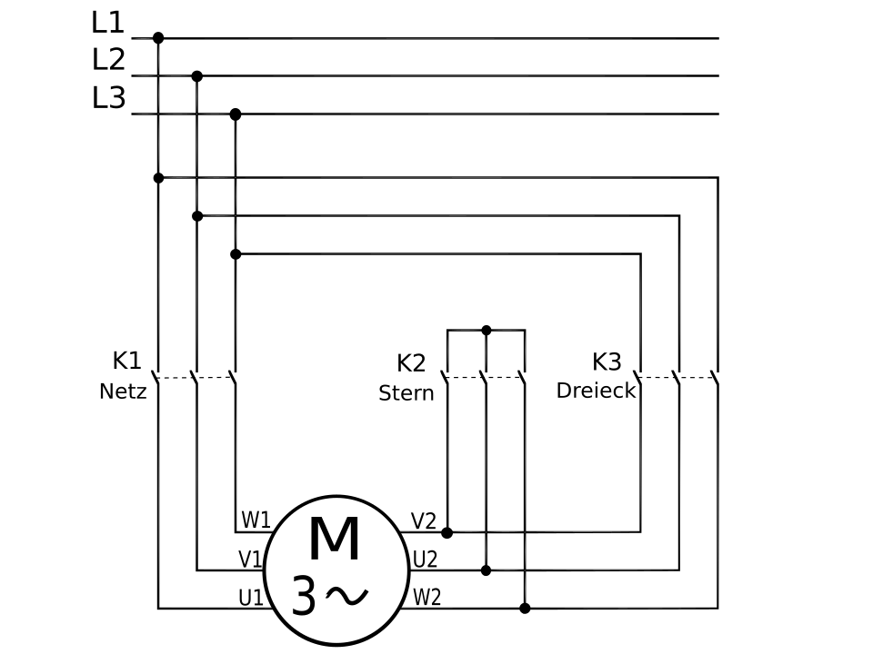
Rys. 20.2a — Obwód mocy Y/Δ: K1 = stycznik sieciowy (Netz), K2 = gwiazdowy (Stern), K3 = trójkątowy (Dreieck), M 3~ = silnik 6-zaciskowy. Źródło: Wikimedia Commons, Public Domain
Tabliczka zaciskowa silnika — gwiazda (Y) i trójkąt (Δ):
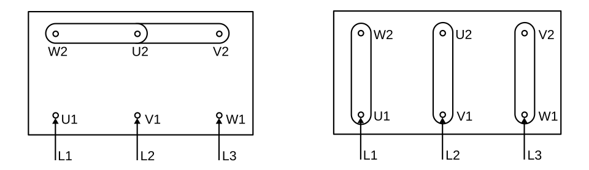
Rys. 20.2b — Tabliczka zaciskowa: lewo = Y (mostki pionowe), prawo = Δ (mostki skośne). Źródło: Wikimedia Commons, Public Domain
[PRAWDOPODOBNE] — na podstawie wiedzy domenowej, EN 60204-1 §9
Rewersja = zamiana dwóch faz (np. L1↔︎L3). Na schemacie widzisz dwa styczniki z krzyżowym połączeniem.
Identyfikacja na schemacie:
| Oznaczenie | Element | Schemat połączeń |
|---|---|---|
| KM_F (KM1) | Stycznik Forward | L1→U, L2→V, L3→W (kolejność prosta) |
| KM_R (KM2) | Stycznik Reverse | L3→U, L2→V, L1→W (L1↔︎L3 zamienione) |
3 warstwy blokady (ZAWSZE na schemacie): 1.
Mechaniczna — symbol sprzęgła między KM_F i KM_R
(Siemens: 3RA1934-1A) 2. Elektryczna —
styk NC KM_F w obwodzie cewki KM_R i odwrotnie 3. Programowa
(PLC) — wzajemne wykluczenie w logice
Czas martwy przy zmianie kierunku (widoczny jako timer na schemacie sterowania): - Min. 100–300 ms między wyłączeniem jednego a włączeniem drugiego - Rozpad łuku + demagnetyzacja uzwojeń
Co sprawdzasz na schemacie przy commissioning: - Czy
krzyżowanie faz jest na schemacie mocy (nie w
sterowniku!) - Czy blokada mechaniczna jest narysowana
— sam styk NC NIE wystarczy wg EN 60204-1 - Czy jest
feedback (styk pomocniczy) do PLC — potwierdzenie
prawdziwego stanu stycznika - Gotowe zestawy Siemens 3RA2 /
3RA1 mają blokadę fabryczną
Schemat kompletnego układu rewersyjnego:
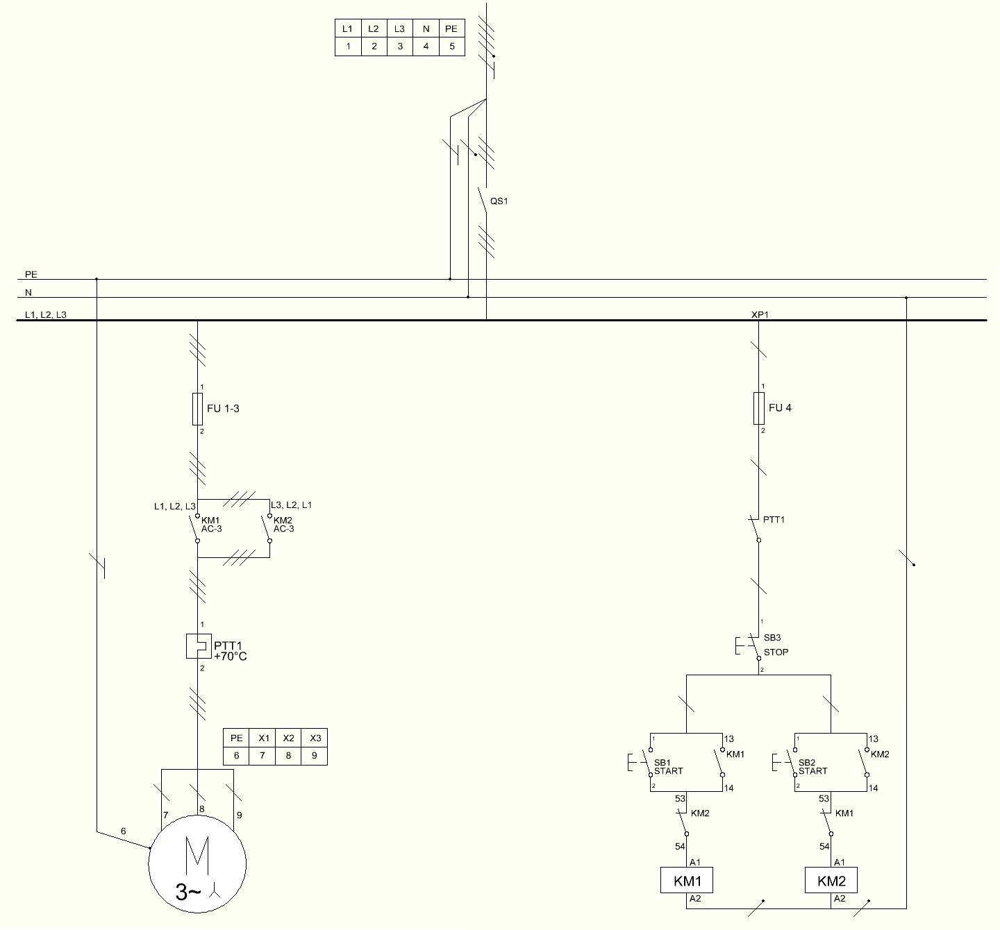
Rys. 20.3a — Układ rewersyjny: QS1 = rozłącznik, FU = bezpieczniki, KM1/KM2 = styczniki z krzyżowaniem L1↔︎L3, blokada elektryczna wzajemna (styki NC). Źródło: Wikimedia Commons, CC BY-SA 3.0
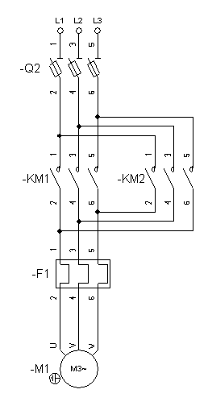
Rys. 20.3b — Obwód mocy rewersji: Q2 = rozłącznik, KM1/KM2, F1 = termiczny, M = silnik. Źródło: Wikimedia Commons, CC BY-SA 3.0
[PRAWDOPODOBNE] — na podstawie wiedzy domenowej, EN 60204-1 §9.3
Układ samopodtrzymania (latching / self-holding) to podstawowy obwód sterowania — impuls START uruchamia stycznik, a jego własny styk pomocniczy NO podtrzymuje zasilanie cewki po zwolnieniu przycisku.
Schemat klasyczny — jak go czytasz:
L (24V) ─── [S1 STOP NC] ─┬─ [S2 START NO] ─── [Cewka KM]
└─ [KM styk NO] ──┘
N (0V) ──────────────────────────────────────────────────Identyfikacja na schemacie: - S1 (STOP) = styk NC — normalnie zamknięty, przerywa obwód po naciśnięciu - S2 (START) = styk NO — normalnie otwarty, zamyka obwód na chwilę - KM (styk pomocniczy NO) = równolegle do S2 — to on „trzyma” po zwolnieniu START - Cewka KM = symbol prostokąta z oznaczeniem na końcu obwodu
Dlaczego STOP jest NC (normalnie zamknięty): - EN 60204-1 + EN ISO 13849-1: stan bezpieczny = brak sygnału - Zerwanie przewodu do STOP → obwód otwarty → maszyna staje (fail-safe) - Na schemacie: STOP ZAWSZE jest pierwszy w łańcuchu (przed START)
Realizacja w PLC (LAD):
| I0.0 I0.1 Q0.0 |
|--[START]--+--[STOP NC]--(KM)|
| Q0.0 | |
|--[KM]-----+ |Co sprawdzasz: - Czy STOP jest NC i jest PRZED START w obwodzie - Czy styk samopodtrzymania jest równoległy do START (nie szeregowy) - Czy jest tylko JEDEN styk samopodtrzymania (dwa = pułapka logiczna)
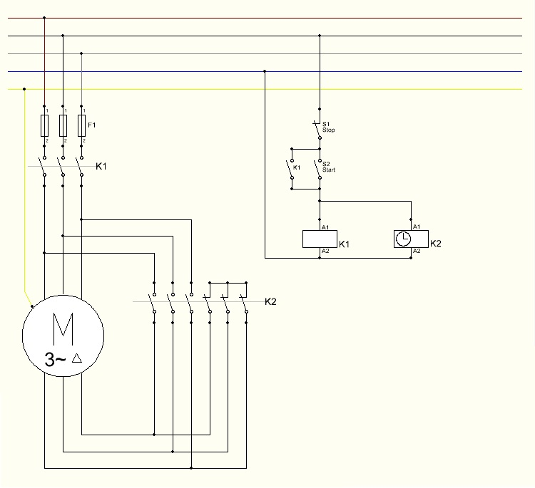
Rys. 20.4 — Obwód sterowania z samopodtrzymaniem: S1=STOP NC, S2=START NO, K1=stycznik z samopodtrzymaniem, K2=timer. Źródło: Wikimedia Commons, CC BY-SA 3.0
[PRAWDOPODOBNE] — na podstawie wiedzy domenowej, EN 60204-1
Silnik Dahlander = 2 prędkości (stosunek 1:2) przez zmianę konfiguracji uzwojeń. Na schemacie wygląda podobnie do Y/Δ, ale logika jest inna.
Kluczowa różnica Y/Δ vs Dahlander:
| Cecha | Rozruch Y/Δ | Dahlander |
|---|---|---|
| Cel | Łagodny rozruch → pełna prędkość | Dwie prędkości robocze |
| Styczniki | 3 (liniowy + Y + Δ) — sekwencja | 3 (główny + wolny + szybki) — wybór |
| Timer | Tak (przełączenie po rozruchu) | Nie (operator wybiera prędkość) |
| Silnik | 6 zacisków, jedna prędkość | 6 zacisków, dwie prędkości |
Identyfikacja na schemacie Dahlandera (3 styczniki):
| Oznaczenie | Funkcja | Połączenie |
|---|---|---|
| KM1 | Główny (zawsze zamknięty) | L1/L2/L3 → silnik |
| KM2 | Wolna (Δ) | Zasila U1/V1/W1, U2/V2/W2 otwarte |
| KM3 | Szybka (YY) | Zasila U2/V2/W2, zwiera U1/V1/W1 |
Co sprawdzasz na schemacie: - Blokada między KM2 i KM3 (jak w rewersji — mechaniczna + elektryczna) - Osobny przekaźnik termiczny dla każdej prędkości (różne prądy znamionowe) - Przerwa 50–100 ms przy zmianie biegu (timer na schemacie sterowania)
Schemat Dahlander z wentylacją:
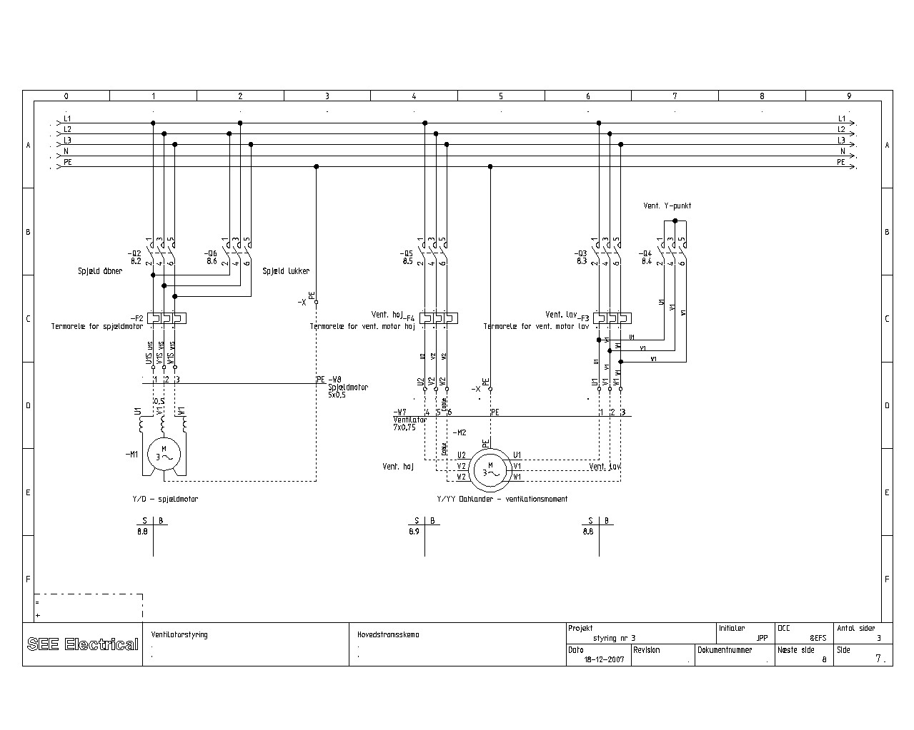
Rys. 20.5a — Schemat mocy Dahlander Y/YY z wentylacją. Źródło: Wikimedia Commons, CC BY-SA 4.0
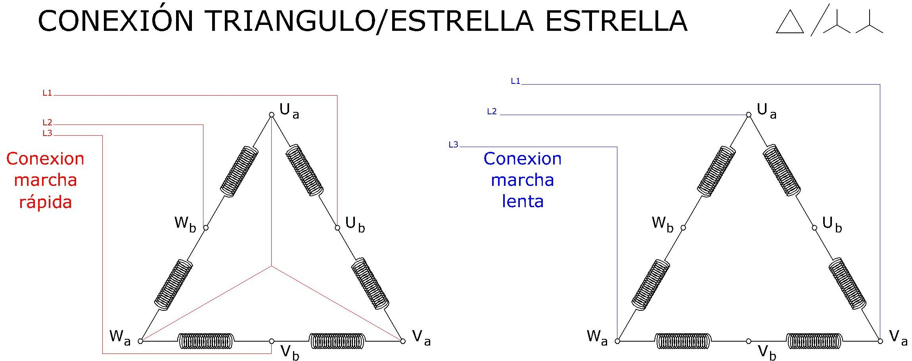
Rys. 20.5b — Połączenia uzwojeń Δ/YY. Źródło: Wikimedia Commons, CC BY-SA 4.0
[PRAWDOPODOBNE] — na podstawie wiedzy domenowej, EN 60034-8
Blokada wzajemna to zabezpieczenie przed jednoczesnym zadziałaniem dwóch wykluczających się styczników — jej brak = zwarcie lub uszkodzenie silnika.
Jak rozpoznajesz na schemacie:
1. Blokada elektryczna: - Styk NC jednego stycznika w obwodzie cewki drugiego - Na schemacie: w linii cewki KM_R widzisz styk opisany KM_F (NC) — i odwrotnie
Obwód cewki KM_F: ──[S1 START_F]──[NC KM_R]──(Cewka KM_F)
Obwód cewki KM_R: ──[S2 START_R]──[NC KM_F]──(Cewka KM_R)2. Blokada mechaniczna: - Symbol sprzęgła/dźwigni
między dwoma stycznikami (przerywana linia łącząca) - Siemens:
3RA1934-1A (dla 3RT1), 3RA1944-2A (dla 3RT2) -
Na schemacie montażowym: blok mechaniczny między obudowami
3. Blokada programowa (PLC): - Wzajemne wykluczenie w kodzie — ale NIGDY jako jedyna warstwa
Gdzie blokada jest obowiązkowa: - Rewersja silnika (KM_F / KM_R) - Rozruch Y/Δ (KM_Y / KM_Δ) - Przełączanie źródeł zasilania (sieć / agregat) - Dowolne dwa styczniki, których jednoczesne załączenie powoduje zwarcie
Co sprawdzasz na obiekcie: 1. Otwórz szafę — czy fizycznie widzisz moduł blokady między stycznikami? 2. Schemat: czy styki NC są narysowane w obu obwodach (wzajemnie)? 3. PLC: czy program ma wykluczenie + czy jest timer martwej strefy?
⚠️ Przy audycie Safety: sam schemat elektryczny nie wystarczy — sprawdź fizycznie czy moduł mechaniczny jest zamontowany. EN 60204-1 §9 wymaga blokady sprzętowej.
[PRAWDOPODOBNE] — na podstawie wiedzy domenowej, EN 60204-1 §9.3, IEC 60947-4-1
Obwód Safety na schemacie jest wyraźnie oddzielony od standardowego sterowania — rozpoznajesz go po:
Oznakowanie na schemacie: - Linia przerywana lub kolorowe obramowanie wydzielające strefę Safety - Symbole z oznaczeniem „F-” (F-DI, F-DO, F-CPU) - Dwukanałowe podłączenie czujników (dwie linie do jednego elementu) - Oznaczenie PL/SIL przy elementach (np. „SIL 3”, „PL e”)
Typowe elementy Safety na schemacie:
| Element | Oznaczenie | Jak wygląda na schemacie |
|---|---|---|
| E-Stop | -S_ES / -SB1 | Przycisk z symbolem grzyba + dwukanałowe NC |
| Kurtyna | -B1 / AOPD | Blok z OSSD1/OSSD2 (dwa wyjścia) |
| Elektrorygiel | -S_LOCK | Styk NC + cewka ryglowania |
| F-DI | -A_FDI | Moduł z kanałami Ch0/Ch1 (dwukanałowe) |
| F-DO | -A_FDO | Moduł z wyjściami + PP/PM switching |
| Przekaźnik Safety | -K_SF | Podwójny styk (kanał 1 + kanał 2) |
Kluczowe różnice od standardowego obwodu:
| Cecha | Standard | Safety |
|---|---|---|
| Okablowanie czujnika | 1 przewód → 1 wejście | 2 kanały → 2 wejścia (1oo2) |
| Sygnał STOP/E-Stop | NC (1 styk) | NC dwukanałowy (2 styki rozdzielone fizycznie) |
| Feedback stycznika | Opcjonalny | Obowiązkowy (EDM — External Device Monitoring) |
| Zasilanie czujników | Wspólne | Rozdzielone T1/T2 (test pulses) z F-DI |
Co sprawdzasz na obiekcie: 1. Dwukanałowość: na schemacie dwa osobne przewody od e-stop do F-DI (nie wspólny!) 2. Feedback: styk NO stycznika wraca do F-DI jako potwierdzenie otwarcia 3. Separacja tras kablowych: kanał 1 i kanał 2 prowadzone osobno (nie w jednym kablu) 4. Oznaczenia: numery F-address na schemacie muszą zgadzać się z konfiguracją TIA Portal
Przykładowy schemat Safety — E-Stop SIL 3 z F-CPU 1516F:
Rys. 20.7a — Okablowanie E-Stop do systemu Safety: CPU 1516F + DI/DQ (standard) + F-DI (dwukanałowe wejście NC E-Stop) + F-DQ (wyjścia Q1/Q2 z feedbackiem). START/STOP/ACK przez standardowe DI. Źródło: Siemens Application Example 21064024, V7.0.1
Schemat okablowania F-DI/F-DO — PM-switching (ET200SP):
Rys. 20.7b — Architektura PM-switching: rozdzielone zasilanie elektroniki (P/M Electronic supply) i obciążenia (24V DC Load supply), izolacja galwaniczna przez Isoface. Źródło: Siemens Wiring Example 39198632, V2.7
💡 Schemat Safety jest dowodem — audytor TÜV/UDT porównuje schemat z fizycznym okablowaniem i konfiguracją TIA Portal. Niezgodność = blokada odbioru maszyny.
[PRAWDOPODOBNE] — na podstawie wiedzy domenowej, EN 60204-1, IEC 62061